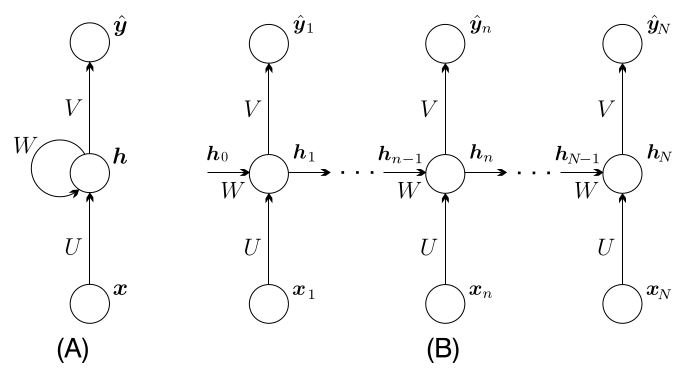
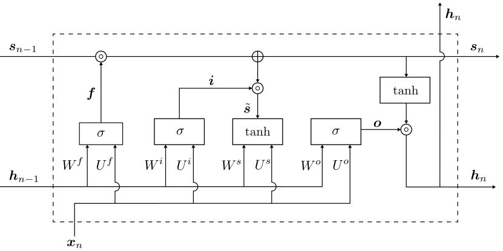
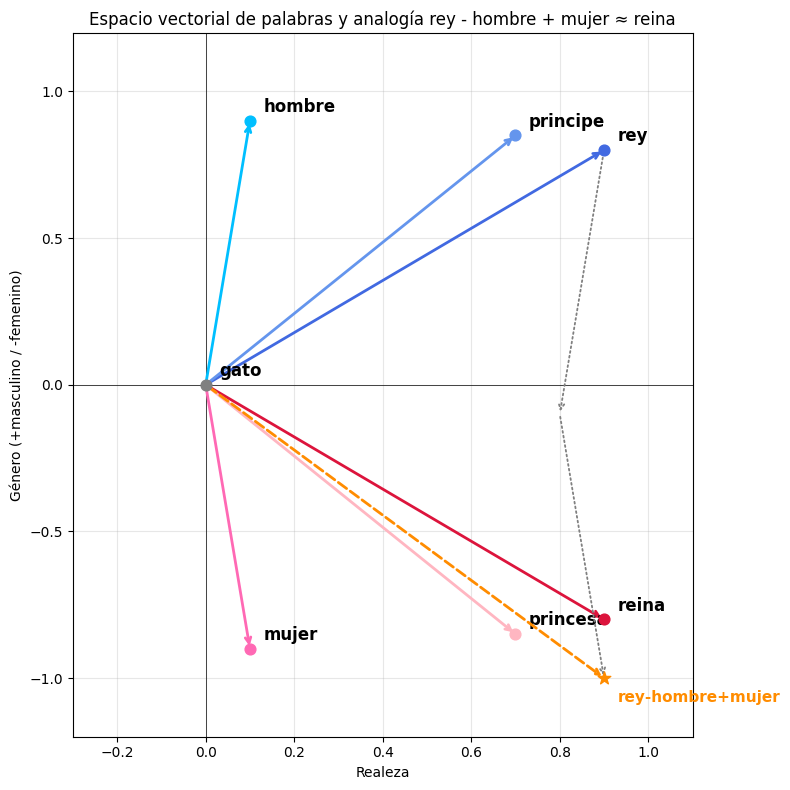
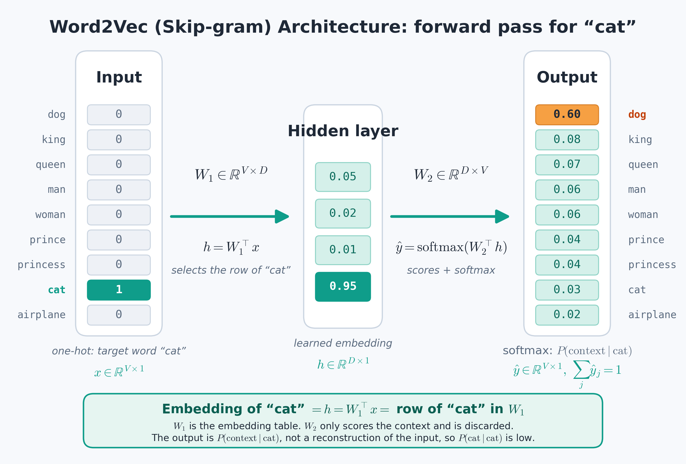
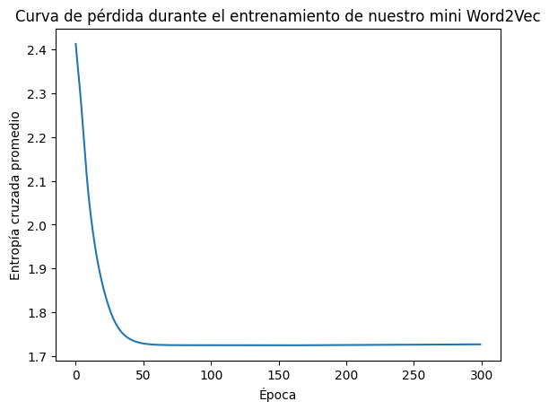
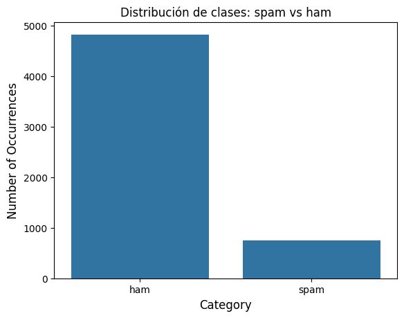
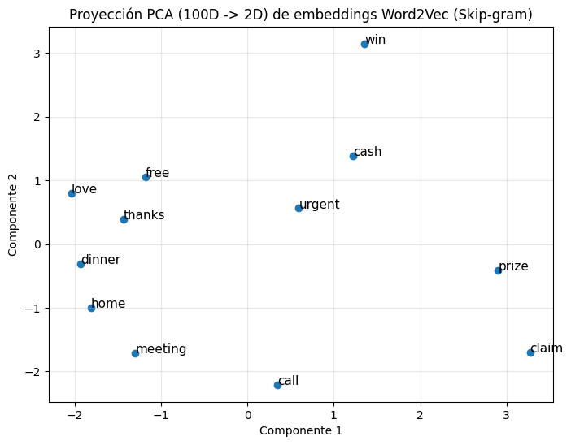
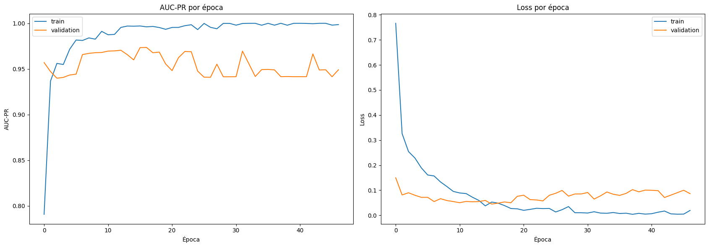
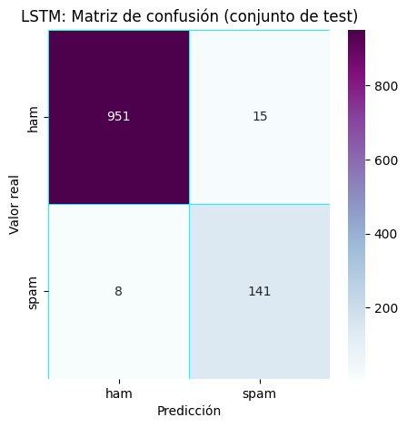

4. Recurrent Neural Networks#
Introducción
Recordemos de la sección anterior que en el corazón de las redes convolucionales se encuentra el concepto de peso compartido. Es decir, la misma matriz de filtro se desliza sobre una matriz de imágenes en lugar de dedicar un peso específico a cada píxel de la imagen. De este modo, una red neuronal puede escalarse fácilmente a imágenes de diferentes dimensiones.
Nuestro interés en esta sección se centra en el caso de los datos secuenciales. Es decir, los vectores de entrada no son independientes, sino que aparecen en secuencia. Además, el orden específico en que se producen encierra información importante. Por ejemplo, este tipo de secuencias se dan en el reconocimiento del habla y en el procesamiento del lenguaje, como la traducción automática, así como también el pronostico de series de tiempo financieras. Sin duda, la secuencia en la que se producen las palabras es de suma importancia.
El reparto de pesos mediante convoluciones también podría ser y ha sido utilizado para estos casos [Lang et al., 1990]. Tales redes se conocen como redes neuronales de retardo temporal. Sin embargo, deslizar un filtro a través del tiempo para formar convoluciones es una operación de naturaleza local. La salida es una función de las muestras de entrada dentro de una ventana temporal que abarca la longitud de la respuesta al impulso del filtro, que por razones prácticas no puede ser muy larga.
Redes Neuronales Recurrentes
Las variables que intervienen en una RNN son:
Vector de estado en el tiempo \(n\), denotado como \(\boldsymbol{h}_{n}\). El símbolo nos recuerda que \(\boldsymbol{h}\) es un vector de variables ocultas (capa oculta en la jerga de las redes neuronales); el vector de estado constituye la memoria del sistema,
Vector de entrada en el momento \(n\), denominado \(\boldsymbol{x}_{n}\),
Vector de salida en el momento \(n\), \(\hat{\boldsymbol{y}}_{n}\), y el vector de salida objetivo, \(\boldsymbol{y}_{n}\).
El modelo se describe mediante un conjunto de matrices y vectores de parámetros desconocidos, a saber, \(U, W, V , \boldsymbol{b}\) y \(\boldsymbol{c}\), que deben aprenderse durante el entrenamiento.
Las ecuaciones que describen un modelo RNN son
(4.1)#\[\begin{split} \begin{align*} \boldsymbol{h}_{n}&=f(U\boldsymbol{x}_{n}+W\boldsymbol{h}_{n-1}+\boldsymbol{b})\\ \hat{\boldsymbol{y}}_{n}&=g(V\boldsymbol{h}_{n}+\boldsymbol{c}). \end{align*} \end{split}\]donde las funciones no lineales \(f\) y \(g\)*** actúan elemento a elemento (element-wise)*** y se aplican individualmente a cada elemento de sus argumentos vectoriales.
En otras palabras, una vez que se ha observado un nuevo vector de entrada, se actualiza el vector de estado. Su nuevo valor depende de la información más reciente, transmitida por la entrada \(\boldsymbol{x}_{n}\) así como de la historia pasada, ya que ésta se ha acumulado en \(\boldsymbol{h}_{n-1}\). La salida depende del vector de estado actualizado, \(\boldsymbol{h}_{n}\). Es decir, depende de la “historia” hasta el instante actual \(n\), tal y como se expresa en \(\boldsymbol{h}_{n}\).
Las opciones típicas para \(f\) son la tangente hiperbólica, tanh, o las no linealidades ReLU. El valor inicial \(\boldsymbol{h}_{0}\) suele ser igual al vector cero. La no linealidad de salida, \(g\), se elige a menudo para ser la función softmax.


Fig. 4.1 Arquitectura de una Red Neuronal Recurrente. Fuente [Theodoridis, 2020].#
De las ecuaciones anteriores se deduce que las matrices y vectores de parámetros se comparten en todos los instantes temporales. Durante el entrenamiento, se inicializan mediante números aleatorios. El modelo gráfico asociado con Eq. (4.1) se muestra en la Fig. 4.1A. En la Fig. 4.1B, el gráfico se despliega sobre los distintos instantes de tiempo para los que se dispone de observaciones. Por ejemplo, si la secuencia de interés es una frase de 10 palabras, entonces \(N\) se establece igual a 10, mientras que \(\boldsymbol{x}_{n}\) es el vector que codifica las respectivas palabras de entrada.
4.1. Backpropagation en tiempo#
El entrenamiento de las RNN sigue una lógica similar a la del algoritmo backpropagation para el entrenamiento de redes neuronales de avance. Después de todo, una RNN puede verse como una red feed-forward con \(N\) capas. La capa superior es la del instante de tiempo \(N\) y la primera capa corresponde al instante de tiempo \(n = 1\). Una diferencia radica en que las capas ocultas en una RNN también producen salidas, es decir, \(\hat{\boldsymbol{y}}_{n}\), y se alimentan directamente con entradas. Sin embargo, en lo que respecta al entrenamiento, estas diferencias no afectan al razonamiento principal.
El aprendizaje de las matrices y vectores de parámetros desconocidos se consigue mediante un esquema de gradiente descendente, de acuerdo con Eq. (2.3). Resulta que los gradientes requeridos de la función de coste, con respecto a los parámetros desconocidos, tienen lugar recursivamente, comenzando en el último instante de tiempo, \(N\) , y retrocediendo en el tiempo, \(n = N-1, N-2,\dots,1\). Esta es la razón por la que el algoritmo se conoce como bakpropagation a traves del tiempo (BPTT).
La función de coste es la suma a lo largo del tiempo, \(n\), de las correspondientes contribuciones a la función de pérdida, que dependen de los valores respectivos de \(\boldsymbol{h}_{n}, \boldsymbol{x}_{n}\), es decir,
Por ejemplo, para el caso de la función de pérdida de entropía cruzada,
\[ J_{n}(U, W, V, \boldsymbol{b}, \boldsymbol{c}):=-\sum_{k}y_{nk}\ln\hat{y}_{nk}, \]donde la suma es sobre la dimensionalidad de \(\boldsymbol{y}\), y
\[ \hat{\boldsymbol{y}}_{n}=g(\boldsymbol{h}_{n}, V, \boldsymbol{c})~\text{y}~\boldsymbol{h}_{n}=f(\boldsymbol{x}_{n}, \boldsymbol{h}_{n-1}, U, W, \boldsymbol{b}). \]
En el corazón del cálculo de los gradientes de la función de coste con respecto a las diversas matrices y vectores de parámetros se encuentra el cálculo de los gradientes de \(J\) con respecto a los vectores de estado, \(\boldsymbol{h}_{n}\). Una vez calculados estos últimos, el resto de los gradientes, con respecto a las matrices y vectores de parámetros desconocidos, es una tarea sencilla. Para ello, nótese que cada \(h_{n},~n=1, 2,\dots,N-1\), afecta a \(J\) de dos maneras:
Directamente, a traves de \(J_{n}\)
Indirectamente, a través de la cadena que impone la estructura RNN, es decir,
\[ \boldsymbol{h}_{n}\rightarrow\boldsymbol{h}_{n+1}\rightarrow\cdots\rightarrow\boldsymbol{h}_{N}. \]Es decir, \(\boldsymbol{h}_{n}\), además de \(J_{n}\), también afecta a todos los valores de coste posteriores, \(J_{n+1},\dots, J_{N}\). Nótese que, a traves de la cadena \(\boldsymbol{h}_{n+1}=f(\boldsymbol{x}_{n+1}, \boldsymbol{h}_{n}, U, W, \boldsymbol{b}).\)
Empleando la regla de la cadena para las derivadas, las dependencias anteriores conducen al siguiente cálculo recursivo:
(4.2)#\[ \frac{\partial J}{\partial\boldsymbol{h}_{n}}=\underbrace{{\left(\frac{\partial\boldsymbol{h}_{n+1}}{\partial\boldsymbol{h}_{n}}\right)^{T}}\frac{\partial J}{\partial\boldsymbol{h}_{n+1}}}_{\text{parte recursiva indirecta}}+\underbrace{\left(\frac{\partial\hat{\boldsymbol{y}}_{n}}{\partial\boldsymbol{h}_{n}}\right)^{T}\frac{\partial J}{\partial\hat{\boldsymbol{y}}_{n}}}_{\text{parte directa}}, \]donde, por definición, la derivada de un vector, digamos, \(\boldsymbol{y}\), con respecto a otro vector, digamos, \(\boldsymbol{x}\), se define como la matriz
\[ \left[\frac{\partial\boldsymbol{y}}{\partial\boldsymbol{x}}\right]_{ij}:=\frac{\partial y_{i}}{\partial x_{j}}. \]
Nótese que el gradiente de la función de coste, con respecto a los parámetros ocultos (vector de estado) en la capa “\(n\)”, se da como una función del gradiente respectivo en la capa anterior, es decir, con respecto al vector de estado en el tiempo \(n + 1\). Las dos pasadas requeridas por backpropagation en el tiempo se resumen a continuación.
Pasadas de Backpropagation en Tiempo
Paso hacia adelante:
Iniciando en \(n=1\) y utilizando las estimaciones actuales de las matrices y vectores de parámetros implicados, calcular en secuencia,
\[ (\boldsymbol{h}_{1}, \hat{\boldsymbol{y}}_{1})\rightarrow(\boldsymbol{h}_{2}, \hat{\boldsymbol{y}}_{2})\rightarrow\cdots\rightarrow(\boldsymbol{h}_{N}, \hat{\boldsymbol{y}}_{N}). \]Paso hacia atrás:
Empezando en \(n = N\), calcular en secuencia,
\[ \frac{\partial J}{\partial\boldsymbol{h}_{N}}\rightarrow\frac{\partial J}{\partial\boldsymbol{h}_{N-1}}\rightarrow\cdots\rightarrow\frac{\partial J}{\partial\boldsymbol{h}_{1}}. \]
Nótese que el cálculo del gradiente \(\partial J/\partial\boldsymbol{h}_{N}\) es sencillo, y solo involucra la parte directa en Eq. (4.2).
Para la implementación de la BPTT, se procede a
inicializar aleatoriamente las matrices y vectores desconocidos implicados,
calcular todos los gradientes requeridos, siguiendo los pasos indicados anteriormente, y
realizar las actualizaciones según el esquema de gradiente descendente.
Los pasos (2) y (3) se realizan de forma iterativa hasta que se cumple un criterio de convergencia, de forma análoga al algoritmo estándar de backpropagation.
4.2. Desvanecimiento y explosión de gradientes#
La tarea de desvanecimiento y explosión de gradientes se ha introducido y discutido en secciones anteriores, en el contexto del algoritmo de backpropagation. Los mismos problemas se presentan en el algoritmo BPTT, dado que, este último es una forma específica del concepto de backpropagation y, como se ha dicho, una RNN puede considerarse como una red multicapa, donde cada instante de tiempo corresponde a una capa diferente. De hecho en las RNN, el fenómeno de desvanecimiento/explosión de gradiente aparece de una forma bastante “agresiva”, teniendo en cuenta que \(N\) puede alcanzar valores grandes.
La naturaleza multiplicativa de la propagación de gradientes puede verse fácilmente en la Eq. (4.2). Para ayudar a comprender el concepto principal, simplifiquemos el escenario y supongamos que sólo interviene una variante de estado. Entonces los vectores de estado se convierten en escalares, \(h_{n}\) , y la matriz \(W\) en un escalar \(w\). Además, supongamos que las salidas también son escalares. Entonces la recursión en la Eq. (4.2) se simplifica como:
Suponiendo en la Eq. (4.1) que \(f\) es la función \(\tanh(\cdot)\) estándar, teniendo en cuenta que, \(\text{sech}^2(\cdot)=1-\tanh^2(\cdot)\) y \(|\tanh(\cdot)|<1\), sobre su dominio, se ve fácilmente que
Escribiendo la recursión para dos pasos sucesivos, repitiendo el proceso en Eq. (4.3), por ejemplo, para \(\partial h_{n+2}/\partial h_{n+1}\) obtenemos que,
No es difícil ver que la multiplicación de los términos menores que uno puede llevar a valores de desvanecimiento, sobre todo si tenemos en cuenta que, en la práctica, las secuencias pueden ser bastante grandes, por ejemplo, \(N = 100\). Por lo tanto para instantes de tiempo cercanos a \(n = 1\), la contribución al gradiente del primer término del lado derecho en la Eq. (4.4) implicará un gran número de productos de números menores que uno en magnitud. Por otra parte, el valor de \(w\) estará contribuyendo en \(w^{n}\) potencia. Por lo tanto, si su valor es mayor que uno, puede conducir a valores explosivos de los gradientes respectivos.
En varios casos, se puede truncar el algoritmo de backpropagation a unos pocos pasos de tiempo. Otra forma, es sustituir la no linealidad tanh por la ReLU. Para el caso del valor explosivo, se puede introducir una técnica que recorte los valores a un umbral predeterminado, una vez que los valores superen ese umbral. Sin embargo, otra técnica que suele emplearse en la práctica es sustituir la formulación RNN estándar descrita anteriormente por una estructura alternativa, que puede hacer mejor frente a estos fenómenos causados por la dependencia a largo plazo de la RNN.
Observation 4.1
RNN profundas: Además de la red RNN básica que comprende una sola capa de estados, se han propuesto extensiones que implican múltiples capas de estados, una encima de otra (ver [Pascanu et al., 2013]).RNN bidireccionales: Como su nombre indica, en las RNN bidireccionales hay dos variables de estado, es decir, una denotada como \(\overset{\rightarrow}{\boldsymbol{h}}\), que se propaga hacia adelante, y otra, \(\overset{\leftarrow}{\boldsymbol{h}}\), que se propaga hacia atrás. De este modo, las salidas dependen tanto del pasado como del futuro (ver [Graves et al., 2013]).
Ejemplo
Ejemplo de BPTT con dos secuencias de texto. Este ejemplo utiliza dos secuencias de texto (una positiva y una negativa) para demostrar cómo funciona el proceso de Backpropagation Through Time (BPTT) en una red recurrente. Además, mostramos la actualización de los pesos mediante gradiente descendente.
Paso 1: Definición de los datos y parámetros
Secuencias de Texto
Secuencia 1 (Positiva):
"I love this movie"Secuencia 2 (Negativa):
"This movie is terrible"
Embeddings de las Palabras
Cada palabra se representa por un vector embedding (
Word2Vec) de 3 dimensiones:"I"= \([0.1, 0.2, 0.1]\)"love"= \([0.4, 0.5, 0.6]\)"this"= \([0.3, 0.1, 0.3]\)"movie"= \([0.5, 0.1, -0.3]\)"is"= \([0.2, 0.3, 0.2]\)"terrible"= \([-0.5, -0.6, -0.7]\)
Etiquetas de Salida (Clases)
Secuencia 1: clase 1 (positiva)
Secuencia 2: clase 0 (negativa)
Definir los Datos y Parámetros Iniciales (tres filas en las matrices significa que hay tres unidades en la capa oculta)
Sesgos
Paso 2: Propagación hacia Adelante
Vamos a recalcular las salidas de los estados ocultos \(h_n\) y la salida final \(y_n\), incluyendo la función de activación en la salida (
softmax).Tiempo \(n = 1\) (
"I")Para la palabra
"I", \(x_1 = [0.1, 0.2, 0.1]\):
Calcular la propagación hacia adelante del estado oculto \(h_1\):
\[\begin{split} U \cdot x_1 = U \cdot [0.1, 0.2, 0.1]^\top = \begin{bmatrix} (0.1 \times 0.1) + (-0.2 \times 0.2) + (0.3 \times 0.1) \\ (0.4 \times 0.1) + (0.1 \times 0.2) + (-0.3 \times 0.1) \\ (0.3 \times 0.1) + (0.2 \times 0.2) + (-0.1 \times 0.1) \end{bmatrix} = \begin{bmatrix} 0.01 + (-0.04) + 0.03 \\ 0.04 + 0.02 + (-0.03) \\ 0.03 + 0.04 + (-0.01) \end{bmatrix} = \begin{bmatrix} 0.02 \\ 0.05 \\ 0.07 \end{bmatrix} \end{split}\]Como \(h_0 = [0, 0, 0]\):
\[ h_1 = \tanh([0.02, 0.05, 0.07] + b) = \tanh([0.12, 0.15, 0.17]) \approx [0.119, 0.149, 0.168] \]Tiempo \(n = 2\) (
"love")Para la palabra
"love", \(x_2 = [0.4, 0.5, 0.6]\):
Calcular la propagación hacia adelante del estado oculto \(h_2\):
\[\begin{split} U \cdot x_2 = \begin{bmatrix} 0.22 \\ 0.13 \\ 0.15 \end{bmatrix} \end{split}\]Calcular el estado recurrente con \(W \cdot h_1\):
\[\begin{split} W \cdot h_1 = \begin{bmatrix} 0.065 \\ 0.096 \\ 0.074 \end{bmatrix} \end{split}\]Propagación total del estado oculto \(h_2\):
\[\begin{split} \begin{align*} h_2 &= \tanh([0.22, 0.13, 0.15] + [0.065, 0.096, 0.074] + b)\\ &= \tanh([0.385, 0.376, 0.394])\\ &\approx [0.367, 0.359, 0.374] \end{align*} \end{split}\]
Paso 3: Cálculo de la Salida con Activación Softmax
La salida se calcula utilizando la matriz \(V\), aplicando después la función de activación
softmaxpara obtener las probabilidades de las dos clases.
Calculamos la salida \(\hat{y}_{2}\) antes de la activación:
\[\begin{split} \hat{y}_{2} = V \cdot h_2 = \begin{bmatrix} 0.2 & -0.3 \\ 0.4 & 0.1 \\ -0.2 & 0.3 \end{bmatrix} \cdot [0.367, 0.359, 0.374]^\top = \begin{bmatrix} 0.0516 \\ 0.1108 \end{bmatrix} \end{split}\]Aplicamos la función de activación
softmaxpara convertir la salida en probabilidades:\[\begin{split} \text{softmax}(\hat{y}_{2}) = \frac{e^{\hat{y}_{2}}}{\sum e^{\hat{y}_{2}}} = \frac{\begin{bmatrix} e^{0.0516} \\ e^{0.1108} \end{bmatrix}}{e^{0.0516} + e^{0.1108}} = \begin{bmatrix} 0.4852 \\ 0.5148 \end{bmatrix} \end{split}\]
Paso 4: Retropropagación del Error
Ahora calculamos el error y el gradiente con respecto a los pesos \(V\), \(W\), \(U\), y los sesgos, usando el método de cross-entropy y BPTT
Cálculo del Error
La pérdida es:
\[ \text{Loss} = - \left[ y_{\text{real}} \cdot \log(\hat{y}) + (1 - y_{\text{real}}) \cdot \log(1 - \hat{y}) \right] \]“Nota: aquí, 0.5148 es la probabilidad asignada a la clase considerada correcta (la etiqueta real), y 0.4852 es la probabilidad para la clase incorrecta”. Si la clase verdadera es 1 (positiva) el error es:
\[ \text{Loss} = - \log(0.5148) \approx 0.663 \]
Gradientes
La siguiente es la derivada de la entropía cruzada con softmax
\[ \frac{\partial L}{\partial \tilde{y}_k} = \hat{y}_k - y_k \]es válido incluso si \(y\) es una distribución (ej. label smoothing).
Dado que,
Logits: \(\tilde{y}_k\), salidas crudas (no normalizadas) de la última capa lineal antes de aplicar la función softmax
Softmax:
\[ \hat{y}_k = \frac{e^{\tilde{y}_k}}{\sum_j e^{\tilde{y}_j}} \]Entropía cruzada:
\[ L = -\sum_i y_i \log(\hat{y}_i) \]Gradiente paso a paso
Separando casos
Sumando todo
\[ \frac{\partial L}{\partial \tilde{y}_k} = -y_k + y_k \hat{y}_k + \hat{y}_k \sum_{i \neq k} y_i \]y usando que:
\[ \sum_{i \neq k} y_i = \Big(\sum_i y_i \Big) - y_k \]Si \(y\) es un vector one-hot:
\[ \sum_i y_i = 1, \]entonces:
\[\begin{split} \begin{align} \frac{\partial L}{\partial \tilde{y}_k} &= -y_k + y_k \hat{y}_k + \hat{y}_k (1 - y_k) \\[6pt] &= \hat{y}_k - y_k \end{align} \end{split}\]
Gradiente para \(V\):
\[ \frac{\partial L}{\partial V} = (y_{\text{pred}} - y_{\text{real}}) \cdot h_2 \]\[\begin{split} \frac{\partial L}{\partial V} = \left( \begin{bmatrix} 0.4852 \\ 0.5148 \end{bmatrix} - \begin{bmatrix} 0 \\ 1 \end{bmatrix} \right) \cdot \begin{bmatrix} 0.367 \\ 0.359 \\ 0.374 \end{bmatrix}^\top \end{split}\]\[\begin{split} \frac{\partial L}{\partial V} = \begin{bmatrix} 0.4852 & 0.4852 \\ -0.4852 & -0.4852 \\ 0.5148 & -0.5148 \end{bmatrix} \end{split}\]Gradiente para \(W\) y \(U\): Usamos la retropropagación a través del tiempo (BPTT). Los gradientes para \(W\) y \(U\) se calculan usando la regla de la cadena considerando las derivadas del estado oculto.
Paso 5: Actualización de Pesos
Usamos gradiente descendente para actualizar los pesos. Dado un valor de \(\eta = 0.01\):
\[ V \leftarrow V - \eta \frac{\partial L}{\partial V} \]\[ W \leftarrow W - \eta \frac{\partial L}{\partial W}, \quad U \leftarrow U - \eta \frac{\partial L}{\partial U} \]Actualización de los pesos para \(V\):
Tarea: Realice las actualizaciones análogas para \(W\) y \(U\), con al menos tres iteraciones en las que se note el decrecimiento del error.
4.3. Red de memoria a largo plazo (LSTM)#
Observation 4.2
La idea clave de la red LSTM, propuesta en el artículo seminal [Hochreiter and Schmidhuber, 1997], es el llamado celda de estado (cell state), que ayuda a superar los problemas asociados con los fenómenos de desvanecimiento/explosión que son causados por las dependencias largo plazo dentro de la red.
Las redes LSTM tienen la capacidad incorporada de controlar el flujo de información que entra y sale de la memoria del sistema mediante algoritmos no lineales. Estas puertas se implementan mediante la no linealidad sigmoidea y un multiplicador.
Desde un punto de vista algorítmico, las puertas equivalen a aplicar una ponderación al flujo de información correspondiente. Los pesos se sitúan en el intervalo \([0,1]\) y dependen de los valores de las variables implicadas que activan la no linealidad sigmoidea.
En otras palabras, la ponderación (control) de la información tiene lugar en el contexto. Según este razonamiento, la red tiene la agilidad de olvidar la información que ya ha sido utilizada y ya no es necesaria. La célula/unidad LSTM básica se se muestra en la Fig. 4.2.
Se construye en torno a dos conjuntos de variables, apiladas en el vector \(\boldsymbol{s}\), que se conoce como el celda de estado, y el vector \(\boldsymbol{h}\), que se conoce como el vector de variables ocultas. Una red LSTM se construye a partir de la concatenación sucesiva de esta unidad básica. La unidad correspondiente al tiempo \(n\), además del vector de entrada, \(\boldsymbol{x}_{n}\), recibe \(\boldsymbol{s}_{n-1}\) y \(\boldsymbol{h}_{n-1}\) de la etapa anterior y pasa \(\boldsymbol{s}_{n}\) y \(\boldsymbol{h}_{n}\) a la siguiente. A continuación se resumen las ecuaciones de actualización asociadas


Fig. 4.2 Arquitectura de unidad LSTM. Fuente [Theodoridis, 2020].#
donde \(\circ\) denota el producto elemento a elemento entre vectores o matrices (producto de Hadamard), es decir, \((s\circ f)_{i} = s_{i}f_{i}\), y \(\sigma\) denota la función sigmoidea logística.
Puerta de olvido(\(\boldsymbol{f}\))Esta puerta decide qué información se debe olvidar de la celda. Se calcula de la siguiente manera:
\[ \boldsymbol{f} = \sigma(U^{f} \boldsymbol{x}_{n} + W^{f} \boldsymbol{h}_{n-1} + \boldsymbol{b}^{f}) \]\( U^{f} \): pesos de la puerta de olvido aplicados a la entrada actual \( \boldsymbol{x}_{n} \).
\( W^{f} \): pesos de la puerta de olvido aplicados al estado oculto anterior \( \boldsymbol{h}_{n-1} \).
\( \boldsymbol{b}^{f} \): sesgo de la puerta de olvido.
\( \sigma \): función sigmoide.
Puerta de entrada(\(\boldsymbol{i}\))Esta puerta decide qué nueva información se almacenará en la celda:
\[ \boldsymbol{i} = \sigma(U^{i} \boldsymbol{x}_{n} + W^{i} \boldsymbol{h}_{n-1} + \boldsymbol{b}^{i}) \]\( U^{i} \): pesos de la puerta de entrada aplicados a la entrada actual \( \boldsymbol{x}_{n} \).
\( W^{i} \): pesos de la puerta de entrada aplicados al estado oculto anterior \( \boldsymbol{h}_{n-1} \).
\( \boldsymbol{b}^{i} \): sesgo de la puerta de entrada.
Candidato de estado(\( \tilde{\boldsymbol{s}} \))Genera nuevas candidaturas para el estado de la celda:
\[ \tilde{\boldsymbol{s}} = \tanh(U^{s} \boldsymbol{x}_{n} + W^{s} \boldsymbol{h}_{n-1} + \boldsymbol{b}^{s}) \]\( U^{s} \): pesos del candidato de estado aplicados a la entrada actual \( \boldsymbol{x}_{n} \).
\( W^{s} \): pesos del candidato de estado aplicados al estado oculto anterior \( \boldsymbol{h}_{n-1} \).
\( \boldsymbol{b}^{s} \): sesgo del candidato de estado.
\( \tanh \): función tangente hiperbólica.
Estado de la celda(\( \boldsymbol{s}_{n} \))Actualiza el estado de la celda utilizando la puerta de olvido y la puerta de entrada:
\[ \boldsymbol{s}_{n} = \boldsymbol{s}_{n-1} \circ \boldsymbol{f} + \boldsymbol{i} \circ \tilde{\boldsymbol{s}} \]\( \circ \): multiplicación elemento a elemento.
\( \boldsymbol{s}_{n-1} \): estado de la celda en el paso temporal anterior.
Puerta de salida(\( \boldsymbol{o} \))Decide qué parte del estado de la celda se enviará a la salida:
\[ \boldsymbol{o} = \sigma(U^{o} \boldsymbol{x}_{n} + W^{o} \boldsymbol{h}_{n-1} + \boldsymbol{b}^{o}) \]\( U^{o} \): pesos de la puerta de salida aplicados a la entrada actual \( \boldsymbol{x}_{n} \).
\( W^{o} \): pesos de la puerta de salida aplicados al estado oculto anterior \( \boldsymbol{h}_{n-1} \).
\( \boldsymbol{b}^{o} \): sesgo de la puerta de salida.
Estado oculto(\(\boldsymbol{h}_{n}\))Finalmente, se calcula el estado oculto, que es la salida de la celda LSTM:
\[ \boldsymbol{h}_{n} = \boldsymbol{o} \circ \tanh(\boldsymbol{s}_{n}) \]Resumen de salida de una redLSTMEstado de la Celda (\( \boldsymbol{s}_{n} \)): almacena información a largo plazo, afectada por las puertas de olvido y entrada.
Estado Oculto (\( \boldsymbol{h}_{n} \)): representa la salida de la celda LSTM en el tiempo \( n \), que se utiliza como entrada para el siguiente paso temporal y puede usarse como salida de la red.
Cómo se transfiere la información dentro de la celda, paso a paso
Paso 1, olvidar: la compuerta \(f_t\) se multiplica elemento a elemento con la memoria vieja, \(f_t \odot c_{t-1}\). Si un componente de \(f_t\) es cercano a 0, ese dato de la memoria se borra; si es cercano a 1, se conserva. Aquí es donde actúa el pasado de largo plazo.
Paso 2, escribir: el candidato \(\tilde{c}_t\) propone información nueva, construida con el presente \(x_t\) y con \(h_{t-1}\). La compuerta \(i_t\) decide cuánto de ese candidato se guarda: \(i_t \odot \tilde{c}_t\).
Paso 3, actualizar la memoria: se suman ambos resultados,
\[ c_t = f_t \odot c_{t-1} + i_t \odot \tilde{c}_t \]Esta suma es el “camino directo” del pasado al futuro que menciona la Observación 4.3. La memoria vieja pasa casi intacta, salvo por la multiplicación por \(f_t\), y no atraviesa una no linealidad en cada paso. Por eso la LSTM recuerda mejor a largo plazo que una RNN básica.
Paso 4, leer: la compuerta \(o_t\) decide qué parte de la memoria se expone hacia afuera:
\[ h_t = o_t \odot \tanh(c_t) \]Este \(h_t\) es la salida de la celda en el tiempo \(t\). Es el nuevo “pasado de corto plazo” que llegará a las compuertas del paso siguiente.
Ejemplo: una celda con dos componentes
Escenario: la celda guarda dos datos sobre un texto que está leyendo. El componente 1 representa el tema general (información de largo plazo, conviene conservarla). El componente 2 representa un detalle de la frase anterior (información que ya no sirve y debe reemplazarse).
Datos de partida (las compuertas ya fueron calculadas por la red a partir de \(x_t\) y \(h_{t-1}\); aquí se dan directamente para concentrarse en el flujo):
Variable
Componente 1 (tema)
Componente 2 (detalle)
Memoria vieja \(c_{t-1}\)
\(2.0\)
\(-1.0\)
Compuerta de olvido \(f_t\)
\(0.9\)
\(0.1\)
Compuerta de entrada \(i_t\)
\(0.2\)
\(0.8\)
Candidato \(\tilde{c}_t\)
\(0.5\)
\(1.0\)
Compuerta de salida \(o_t\)
\(0.9\)
\(0.2\)
Paso 1, olvidar:
\[ f_t \odot c_{t-1} = [0.9 \cdot 2.0,\; 0.1 \cdot (-1.0)] = [1.8,\; -0.1] \]El tema se conserva casi completo (\(2.0 \to 1.8\)). El detalle viejo casi desaparece (\(-1.0 \to -0.1\)).
Paso 2, escribir:
\[ i_t \odot \tilde{c}_t = [0.2 \cdot 0.5,\; 0.8 \cdot 1.0] = [0.1,\; 0.8] \]Al tema casi no se le añade nada nuevo. En cambio, el espacio liberado del detalle se llena con información nueva.
Paso 3, actualizar la memoria:
\[ c_t = [1.8 + 0.1,\; -0.1 + 0.8] = [1.9,\; 0.7] \]Paso 4, leer:
\[ \tanh(c_t) \approx [0.956,\; 0.604], \qquad h_t = [0.9 \cdot 0.956,\; 0.2 \cdot 0.604] \approx [0.861,\; 0.121] \]La celda expone casi todo el tema, pero casi oculta el detalle nuevo, aunque lo guardó en \(c_t\). Este \(h_t\) viaja al paso \(t+1\).
Verificación numérica en Python
El siguiente código reproduce el ejemplo, con comentarios línea a línea:
import numpy as np # Importamos NumPy para trabajar con vectores
c_prev = np.array([2.0, -1.0]) # Memoria vieja c_{t-1}: [tema, detalle]
f_t = np.array([0.9, 0.1]) # Compuerta de olvido: cuánto de la memoria vieja se conserva
i_t = np.array([0.2, 0.8]) # Compuerta de entrada: cuánto del candidato se escribe
c_tilde = np.array([0.5, 1.0]) # Candidato: información nueva propuesta
o_t = np.array([0.9, 0.2]) # Compuerta de salida: cuánto de la memoria se expone
olvidado = f_t * c_prev # Paso 1: producto elemento a elemento, filtra la memoria vieja
escrito = i_t * c_tilde # Paso 2: filtra el candidato con la compuerta de entrada
c_t = olvidado + escrito # Paso 3: nueva memoria = memoria filtrada + información nueva
h_t = o_t * np.tanh(c_t) # Paso 4: salida = compuerta de salida por tanh de la memoria
print("Paso 1 (olvidado):", olvidado) # Muestra [ 1.8 -0.1]
print("Paso 2 (escrito): ", escrito) # Muestra [0.1 0.8]
print("Paso 3 (c_t): ", c_t) # Muestra [1.9 0.7]
print("Paso 4 (h_t): ", h_t.round(3)) # Muestra [0.861 0.121]
Note
Cambiar \(f_t\) a \([0.1, 0.1]\) y recalculen \(c_t\). Verán que el tema se pierde por completo, lo que ilustra por qué la compuerta de olvido es la clave de la memoria a largo plazo.
Observation 4.3
La celda de estado \(\boldsymbol{s}\) transmite información directa del instante anterior al siguiente. La puerta de olvido \(\boldsymbol{f}\), con valores en \([0, 1]\), la pondera según la entrada actual y las variables ocultas previas (la ponderación se ajusta en “contexto”). Luego se añade la nueva información \(\tilde{\boldsymbol{s}}\), controlada por la puerta de entrada \(\boldsymbol{i}\). Así el pasado llega al futuro de forma directa, lo que ayuda a la red a memorizar.
Esta memoria explota mejor las dependencias de largo alcance que una RNN básica. El vector oculto \(\boldsymbol{h}\) depende de la celda de estado, de la entrada actual y de los estados anteriores, y todas las matrices y vectores se aprenden en el entrenamiento. \(\boldsymbol{h}_{n}\) tiene dos salidas: hacia la siguiente etapa y hacia la predicción \(\hat{\boldsymbol{y}}_{n}\) (por ejemplo, vía softmax, como en Eq. (4.1)).
Variantes y Aplicaciones
Además de la estructura LSTM ya comentada, se han propuesto diversas variantes. Un extenso estudio comparativo entre diferentes arquitecturas LSTM y RNN se puede encontrar en [Greff et al., 2016, Jozefowicz et al., 2015]. Las RNNs y las LSTMs se han utilizado con éxito en una amplia gama de aplicaciones, tales como:
el modelado del lenguaje [Sutskever et al., 2011],
traducción de máquinas [Liu et al., 2014],
reconocimiento del habla [Graves and Jaitly, 2014],
visión artificial para la generación de descriptores de imágenes [Karpathy and Fei-Fei, 2015],
análisis de datos de fMRI para comprender la dinámica temporal de las redes cerebrales asociadas [Seo et al., 2019].
pronostico de volatilidad de Bitcoin [Pratas et al., 2023]
Por ejemplo, en el procesamiento del lenguaje la entrada suele ser una secuencia de palabras, que se codifican como números (son punteros al diccionario disponible). La salida es la secuencia de palabras que hay que predecir. Durante el entrenamiento, se establece \(\boldsymbol{y}_{n} = \boldsymbol{x}_{n+1}\). Es decir, la red se entrena como un predictor no lineal.
4.4. Aplicación: Procesamiento del Lenguaje Natural#
En esta sección construimos, desde los fundamentos, un clasificador de mensajes spam vs ham (no-spam) usando:
Word2Vec: para entender matemáticamente y con ejemplos numéricos de dónde salen los embeddings de palabras (no solo usarlos como caja negra).
Doc2Vec: como extensión de Word2Vec para representar documentos completos.
LSTM: una red recurrente que consume esos embeddings para clasificar texto.
import warnings
warnings.filterwarnings('ignore')
import sys
import tensorflow.keras
import pandas as pd
import sklearn as sk
import tensorflow as tf
tf.keras.utils.set_random_seed(42) # fija Python, NumPy y TensorFlow a la vez
tf.config.experimental.enable_op_determinism() # fuerza operaciones deterministas en GPU
import tensorflow as tf
from tensorflow.python.platform import build_info as tf_build_info
print(f"Tensor Flow Version: {tf.__version__}")
print()
print(f"Python {sys.version}")
print(f"Pandas {pd.__version__}")
print(f"Scikit-Learn {sk.__version__}")
gpu = len(tf.config.list_physical_devices('GPU')) > 0
print("GPU is", "available" if gpu else "NOT AVAILABLE")
print()
print("=== Detalle de dispositivos físicos ===")
for device in tf.config.list_physical_devices('GPU'):
print(device)
details = tf.config.experimental.get_device_details(device)
print(details)
print()
print("=== Versiones de CUDA/cuDNN con las que se compiló TensorFlow ===")
print(f"CUDA build version: {tf_build_info.build_info.get('cuda_version', 'N/A')}")
print(f"cuDNN build version: {tf_build_info.build_info.get('cudnn_version', 'N/A')}")
Tensor Flow Version: 2.21.0
Python 3.12.14 | packaged by Anaconda, Inc. | (main, Aug 27 2026, 14:46:43) [GCC 14.3.0]
Pandas 2.3.1
Scikit-Learn 1.7.0
GPU is available
=== Detalle de dispositivos físicos ===
PhysicalDevice(name='/physical_device:GPU:0', device_type='GPU')
{'compute_capability': (8, 9), 'device_name': 'NVIDIA GeForce RTX 4070'}
=== Versiones de CUDA/cuDNN con las que se compiló TensorFlow ===
CUDA build version: 12.5.1
cuDNN build version: 9
Iniciamos verificando que TensorFlow está correctamente instalado y puede utilizar la GPU disponible.
La librería gensim utilizada en esta implementación debe instalarse con:
pip install gensim
Usamos gensim 4.x (no 3.8.3). La API de Doc2Vec/Word2Vec es prácticamente igual, salvo que en la versión 4 ya no existe el parámetro
size(se llamavector_size) y el atributowv.vocabfue reemplazado porwv.key_to_index.
4.4.1. Word2Vec: ¿de dónde salen realmente los embeddings?#
Antes de usar Word2Vec como una “caja negra” de gensim, vale la pena entender qué problema resuelve y de dónde salen los números que forman un embedding.
4.4.2. La idea central#
“Conocerás una palabra por la compañía que mantiene”: J.R. Firth (1957)
Word2Vec parte de la hipótesis distribucional: palabras que aparecen en contextos similares tienden a tener significados similares. En vez de representar palabras como categorías discretas (one-hot encoding, donde “gato” y “perro” son igual de distintos que “gato” y “avión”), Word2Vec les asigna un vector denso de números reales (por ejemplo, 100 o 300 dimensiones) de forma que:
Palabras que aparecen en contextos parecidos \(\rightarrow\) vectores cercanos (similitud coseno alta).
Las relaciones semánticas quedan codificadas como direcciones en el espacio vectorial. El ejemplo clásico:
Ejemplo ilustrativo con 4 dimensiones interpretables:
[realeza, género, riqueza, animalidad].
import numpy as np
np.set_printoptions(precision=2, suppress=True)
# [realeza, género(+masc/-fem), riqueza, animalidad]
vectores = {
"rey": np.array([0.9, 0.8, 0.7, 0.0]),
"reina": np.array([0.9, -0.8, 0.7, 0.0]),
"hombre": np.array([0.1, 0.9, 0.1, 0.0]),
"mujer": np.array([0.1, -0.9, 0.1, 0.0]),
"principe": np.array([0.7, 0.85,0.5, 0.0]),
"princesa": np.array([0.7, -0.85,0.5, 0.0]),
"gato": np.array([0.0, 0.0, 0.0, 0.9]),
"avion": np.array([-0.9, 0.0,-0.9,-0.9]),
}
for p, v in vectores.items():
print(f"{p:10s} -> {v}")
rey -> [0.9 0.8 0.7 0. ]
reina -> [ 0.9 -0.8 0.7 0. ]
hombre -> [0.1 0.9 0.1 0. ]
mujer -> [ 0.1 -0.9 0.1 0. ]
principe -> [0.7 0.85 0.5 0. ]
princesa -> [ 0.7 -0.85 0.5 0. ]
gato -> [0. 0. 0. 0.9]
avion -> [-0.9 0. -0.9 -0.9]
4.4.3. Similitud coseno (álgebra lineal)#
Mide el ángulo entre dos vectores, no su magnitud:
Ángulo pequeño \(\rightarrow\) coseno cercano a 1 → palabras semánticamente parecidas.
def cos_sim(a, b):
return np.dot(a, b) / (np.linalg.norm(a) * np.linalg.norm(b))
pares = [("rey","principe"), ("rey","reina"), ("gato","avion")]
for a, b in pares:
print(f"cos({a}, {b}) = {cos_sim(vectores[a], vectores[b]):.2f}")
cos(rey, principe) = 0.99
cos(rey, reina) = 0.34
cos(gato, avion) = -0.58
4.4.4. La analogía vectorial: resta + suma#
rey − hombre cancela el componente “masculino” y deja aislada la dirección de realeza.
+ mujer inyecta la dirección “femenina”.
El resultado aterriza casi exactamente sobre reina.
resultado = vectores["rey"] - vectores["hombre"] + vectores["mujer"]
print("Resultado:", resultado)
print("Reina :", vectores["reina"])
print()
for p, v in vectores.items():
if p not in ("rey","hombre","mujer"):
print(f"cos(resultado, {p:10s}) = {cos_sim(resultado, v):.4f}")
Resultado: [ 0.9 -1. 0.7 0. ]
Reina : [ 0.9 -0.8 0.7 0. ]
cos(resultado, reina ) = 0.9942
cos(resultado, principe ) = 0.0709
cos(resultado, princesa ) = 0.9978
cos(resultado, gato ) = 0.0000
cos(resultado, avion ) = -0.6091
4.4.5. Visualización de los vectores#
Proyectamos en el plano Realeza (eje X) vs Género (eje Y): las 2 dimensiones más ilustrativas.
Las flechas punteadas grises muestran el camino de la analogía: partiendo de rey, restamos hombre (☆ punto intermedio) y sumamos mujer, aterrizando casi exactamente sobre reina (estrella naranja).
import matplotlib.pyplot as plt
fig, ax = plt.subplots(figsize=(8, 8))
coords = {p: v[:2] for p, v in vectores.items() if p != "avion"}
colores = {
"rey": "royalblue", "reina": "crimson", "hombre": "deepskyblue",
"mujer": "hotpink", "principe": "cornflowerblue", "princesa": "lightpink",
"gato": "gray"
}
for p, (x, y) in coords.items():
ax.annotate("", xy=(x, y), xytext=(0, 0),
arrowprops=dict(arrowstyle="->", color=colores.get(p, "black"), lw=2))
ax.scatter(x, y, color=colores.get(p, "black"), s=60, zorder=5)
ax.text(x + 0.03, y + 0.03, p, fontsize=12, fontweight="bold")
res = resultado[:2]
ax.annotate("", xy=(res[0], res[1]), xytext=(0, 0),
arrowprops=dict(arrowstyle="->", color="darkorange", lw=2, linestyle="dashed"))
ax.scatter(res[0], res[1], color="darkorange", s=90, marker="*", zorder=6)
ax.text(res[0] + 0.03, res[1] - 0.08, "rey-hombre+mujer", fontsize=11, color="darkorange", fontweight="bold")
paso1 = vectores["rey"][:2] - vectores["hombre"][:2]
ax.annotate("", xy=paso1, xytext=vectores["rey"][:2],
arrowprops=dict(arrowstyle="->", color="gray", lw=1.3, linestyle="dotted"))
ax.annotate("", xy=res, xytext=paso1,
arrowprops=dict(arrowstyle="->", color="gray", lw=1.3, linestyle="dotted"))
ax.axhline(0, color="black", lw=0.5)
ax.axvline(0, color="black", lw=0.5)
ax.set_xlabel("Realeza")
ax.set_ylabel("Género (+masculino / -femenino)")
ax.set_title("Espacio vectorial de palabras y analogía rey - hombre + mujer ≈ reina")
ax.set_xlim(-0.3, 1.1)
ax.set_ylim(-1.2, 1.2)
ax.grid(alpha=0.3)
plt.tight_layout()
plt.show()

4.5. Conclusión#
Concepto |
Resultado |
|---|---|
cos(rey, príncipe) |
~0.99 (muy similar) |
cos(rey, reina) |
~0.34 (comparten realeza, difieren en género) |
cos(gato, avión) |
~-0.58 (casi opuestos) |
resultado ≈ reina |
~0.99 |
La dirección hombre \(\rightarrow\) mujer es paralela a rey \(\rightarrow\) reina. Restar/sumar vectores mueve el punto en direcciones semánticas consistentes en todo el espacio, esa es la geometría detrás de la analogía.
4.5.1. ¿Cómo se obtienen esos vectores? Una red neuronal muy simple#
Word2Vec no busca directamente vectores parecidos; en realidad entrena una red neuronal poco profunda para resolver una tarea de predicción auxiliar, y los embeddings son un subproducto: los pesos aprendidos por esa red.
Existen dos arquitecturas (ambas implementadas en gensim):
Arquitectura |
Tarea que resuelve |
Ventaja |
|---|---|---|
CBOW (Continuous Bag of Words) |
Predecir la palabra central a partir de las palabras de su contexto |
Más rápido, mejor con palabras frecuentes |
Skip-gram |
Predecir las palabras de contexto a partir de la palabra central |
Mejor con palabras poco frecuentes y corpus pequeños |
Arquitectura de la red (Skip-gram):

Fig. 4.3 Arquitectura Word2Vec.#
\(V\) = tamaño del vocabulario (cuántas palabras distintas hay).
\(D\) = dimensión del embedding que elegimos (ej. 100, 300).
\(W_1\) es una matriz \(V \times D\): cada fila de \(W_1\) es el embedding de una palabra. ¡Este es el origen de los embeddings!
\(W_2\) es una matriz \(D \times V\) usada solo durante el entrenamiento (se descarta después).
Observación
La salida no reconstruye la entrada (no es un autoencoder). Skip-gram recibe una palabra central y predice la distribución de probabilidad de las palabras de su contexto (su ventana), es decir \(P(\text{contexto} \mid \text{gato})\) y no \(P(\text{gato} \mid \text{gato})\).
Por qué “perro” tiene 0.60 y “gato” solo 0.03:
“gato” aparece con frecuencia junto a “perro” en un corpus real (“el perro y el gato”), por lo que \(P(\text{perro} \mid \text{gato})\) es alta.
Una palabra casi nunca aparece en su propia ventana de contexto, por lo que \(P(\text{gato} \mid \text{gato})\) es baja.
Los pares de entrenamiento son (palabra central, palabra vecina), como (gato, perro) o (gato, come), y casi nunca (gato, gato); la salida refleja esa estadística.
Conexión con la idea de fondo:
“gato” y “perro” comparten contextos, por lo que sus embeddings resultan parecidos.
El objetivo real es el vector \(h\) (fila de “gato” en \(W_1\)), no la salida: \(W_2\) solo puntúa el contexto y se descarta, y lo que se conserva es la tabla de embeddings \(W_1\).
4.5.2. Skip-gram: qué entra, qué sale y dónde está el embedding#
Qué entra y qué sale. Entra “gato” como vector one-hot. No sale una palabra, sino una distribución de probabilidad sobre todo el vocabulario \(V\) (suma 1). Cada valor responde: dado que “gato” es la palabra central, ¿qué tan probable es que la palabra de esa fila aparezca en su contexto? Por eso “perro” obtiene \(0.60\): suele aparecer cerca de “gato” (por ejemplo, “el gato y el perro”). La red no convierte gato en perro: Skip-gram predice vecinos, no traduce ni sustituye. Entrada y salida comparten el mismo vocabulario.
De dónde sale el embedding.
\(W_1 \in \mathbb{R}^{V \times D}\) es la tabla de embeddings: una fila por palabra.
La capa oculta \(\mathbf{h}\) no es una matriz aprendida aparte: es una copia de la fila de \(W_1\) seleccionada por el one-hot (de ahí “selecciona una fila”).
\(W_2 \in \mathbb{R}^{V \times D}\) contiene los vectores de contexto. Solo sirve para calcular las puntuaciones, y en Word2Vec estándar se descarta al terminar (a veces se promedia con \(W_1\)).
Con \(D = 4\), el embedding de “gato” es
Para cualquier otra palabra (por ejemplo “perro”) basta poner el 1 en su posición: la capa oculta mostrará su fila de \(W_1\).
Regla para recordar
Al terminar el entrenamiento se guarda \(W_1\). El embedding de la palabra \(i\) es la fila \(i\) de \(W_1\). La capa oculta es solo el lugar donde esa fila aparece durante el cálculo.
4.5.3. La función de pérdida#
Para cada par (palabra objetivo \(w_t\), palabra de contexto \(w_c\)) observado en una ventana del corpus, la red calcula:
Y se minimiza la entropía cruzada entre \(\hat y\) y la palabra de contexto real (codificada one-hot). Como todos los componentes de \(y\) son cero salvo \(y_{w_c} = 1\), la entropía cruzada completa, \(-\sum_i y_i \log \hat{y}_i\), se reduce a un solo término:
Minimizar esta pérdida equivale a aumentar la probabilidad que la red asigna a la palabra de contexto observada. El descenso de gradiente ajusta \(W_1\) y \(W_2\) en ese sentido. Después de miles de estas actualizaciones sobre todo el corpus, las filas de \(W_1\) (los embeddings) terminan organizándose de forma que palabras con contextos parecidos quedan cerca en el espacio vectorial, sin que nadie le haya dicho explícitamente al modelo qué significa cada palabra.
En la práctica, gensim (y Word2Vec original) no usa softmax completo por ser muy costoso computacionalmente con vocabularios grandes; usa aproximaciones como negative sampling o hierarchical softmax. La idea conceptual es la misma.
4.5.4. Ejemplo numérico: implementando Skip-gram desde cero#
Vamos a implementar un Word2Vec (Skip-gram) minúsculo, sin gensim, solo con NumPy, sobre un corpus de juguete de 4 oraciones. Así veremos con nuestros propios ojos cómo, partiendo de vectores aleatorios, el entrenamiento los organiza según el significado.
corpus = [
"el gato duerme en el sofa",
"el perro duerme en la cama",
"el gato come pescado",
"el perro come carne",
]
# Tokenización simple (separar por espacios)
tokenized = [s.split() for s in corpus]
vocab = sorted(set(w for sent in tokenized for w in sent))
word2idx = {w: i for i, w in enumerate(vocab)}
idx2word = {i: w for w, i in word2idx.items()}
print("Vocabulario:", vocab)
print("Tamaño del vocabulario (V):", len(vocab))
Vocabulario: ['cama', 'carne', 'come', 'duerme', 'el', 'en', 'gato', 'la', 'perro', 'pescado', 'sofa']
Tamaño del vocabulario (V): 11
word2idx
{'cama': 0,
'carne': 1,
'come': 2,
'duerme': 3,
'el': 4,
'en': 5,
'gato': 6,
'la': 7,
'perro': 8,
'pescado': 9,
'sofa': 10}
idx2word
{0: 'cama',
1: 'carne',
2: 'come',
3: 'duerme',
4: 'el',
5: 'en',
6: 'gato',
7: 'la',
8: 'perro',
9: 'pescado',
10: 'sofa'}
Paso 1: Generar pares (palabra objetivo, palabra de contexto).
Con una ventana de tamaño 2, para cada palabra objetivo se toman hasta 2 palabras a la izquierda y 2 a la derecha, es decir, hasta \(2 \times 2 = 4\) palabras de contexto. Cerca del inicio o del final de la oración hay menos, porque la ventana se trunca.
Por ejemplo, en "el gato duerme en el sofa", para la palabra objetivo "duerme" (posición 2) el contexto son las posiciones 0, 1, 3 y 4:
La palabra “el” aparece dos veces porque ocupa dos posiciones distintas de la ventana. Cada aparición genera su propio par de entrenamiento.
Cuántos pares se generan
Una oración de \(n\) palabras con ventana \(w\) genera como máximo \(2wn\) pares, y menos por el truncamiento en los bordes. Para esta oración (\(n = 6\), \(w = 2\)) se generan 18 pares. El total de 56 reportado abajo corresponde a todo el corpus.
window = 2
pairs = []
for sent in tokenized:
idxs = [word2idx[w] for w in sent]
for center_pos, center_id in enumerate(idxs):
for w in range(-window, window + 1):
ctx_pos = center_pos + w
if w == 0 or ctx_pos < 0 or ctx_pos >= len(idxs):
continue
pairs.append((center_id, idxs[ctx_pos]))
print("Ejemplos de pares (target -> contexto):")
for p in pairs[:18]:
print(f" {idx2word[p[0]]:8s} -> {idx2word[p[1]]}")
print(f"\nTotal de pares de entrenamiento generados: {len(pairs)}")
Ejemplos de pares (target -> contexto):
el -> gato
el -> duerme
gato -> el
gato -> duerme
gato -> en
duerme -> el
duerme -> gato
duerme -> en
duerme -> el
en -> gato
en -> duerme
en -> el
en -> sofa
el -> duerme
el -> en
el -> sofa
sofa -> en
sofa -> el
Total de pares de entrenamiento generados: 56
Paso 2: Inicializar las matrices de pesos \(W_1\) (embeddings) y \(W_2\) (pesos de salida) al azar.
Elegimos una dimensión de embedding pequeña (\(D=5\)) solo para poder inspeccionar los números fácilmente.
import numpy as np
np.random.seed(42)
V = len(vocab) # tamaño del vocabulario
D = 5 # dimensión del embedding
W1 = np.random.uniform(-0.5, 0.5, (V, D)) # <- ESTA matriz, al final del entrenamiento, ES el embedding
W2 = np.random.uniform(-0.5, 0.5, (D, V))
print("W1 (embeddings iniciales, aleatorios) shape:", W1.shape)
print("W2 (pesos de salida) shape:", W2.shape)
W1 (embeddings iniciales, aleatorios) shape: (11, 5)
W2 (pesos de salida) shape: (5, 11)
Paso 3: Entrenar con descenso de gradiente estocástico.
Por cada par (target, contexto), hacemos forward pass, calculamos la pérdida (entropía cruzada) y actualizamos \(W_1\) y \(W_2\).
def one_hot(idx, size):
v = np.zeros(size)
v[idx] = 1
return v
def softmax(x):
e = np.exp(x - np.max(x))
return e / e.sum()
lr = 0.05
losses = []
for epoch in range(300):
total_loss = 0
for target_id, context_id in pairs:
# ---- FORWARD ----
h = W1[target_id] # embedding actual de la palabra objetivo, shape (D,)
u = h @ W2 # puntuación para cada palabra del vocabulario, shape (V,)
y_pred = softmax(u) # probabilidad de cada palabra de ser el contexto real
# ---- LOSS (entropía cruzada) ----
loss = -np.log(y_pred[context_id] + 1e-10)
total_loss += loss
# ---- BACKWARD ----
y_true = one_hot(context_id, V)
e = y_pred - y_true # error, shape (V,)
grad_W2 = np.outer(h, e) # gradiente de W2
grad_W1_row = W2 @ e # gradiente de la fila de W1 correspondiente al target
# ---- ACTUALIZACIÓN ----
W2 -= lr * grad_W2
W1[target_id] -= lr * grad_W1_row
losses.append(total_loss / len(pairs))
if epoch % 60 == 0:
print(f"Epoch {epoch:3d} Loss promedio: {losses[-1]:.4f}")
print("\nEntrenamiento terminado.")
print("W1 (V x D) ahora contiene los embeddings de palabras APRENDIDOS. Shape:", W1.shape)
Epoch 0 Loss promedio: 2.4129
Epoch 60 Loss promedio: 1.7252
Epoch 120 Loss promedio: 1.7240
Epoch 180 Loss promedio: 1.7244
Epoch 240 Loss promedio: 1.7254
Entrenamiento terminado.
W1 (V x D) ahora contiene los embeddings de palabras APRENDIDOS. Shape: (11, 5)
Línea |
Qué hace |
|---|---|
|
Número de palabras a considerar a cada lado de la palabra central. |
|
Lista donde se acumulan los pares de todo el corpus. |
|
Recorre cada oración (lista de palabras). Los pares nunca cruzan de una oración a otra. |
|
Traduce las palabras de la oración a sus índices en el vocabulario. |
|
Cada palabra hace de central una vez. |
|
Recorre los desplazamientos \(-2, -1, 0, +1, +2\) respecto a la palabra central. |
|
Posición candidata a contexto. |
|
Descarta (i) la palabra central misma (\(w=0\)) y (ii) posiciones fuera de la oración, lo que trunca la ventana en los bordes. |
|
Guarda el par (central, contexto). |
Impresión. idx2word[...] convierte los índices de vuelta a texto para leerlos, y {:8s} alinea las palabras en 8 caracteres. pairs[:12] muestra solo los primeros 12 de los 56 pares.
Ejemplo. En "el gato duerme en el sofa" con centro duerme (posición 2), los desplazamientos \(-2, -1, +1, +2\) dan las posiciones \(0, 1, 3, 4\), es decir, los pares (duerme, el), (duerme, gato), (duerme, en), (duerme, el).
Puntos clave
Cada oración de \(n\) palabras aporta como máximo \(2wn\) pares, y menos por el truncamiento en los bordes.
No se eliminan duplicados: cada aparición cuenta como una observación de entrenamiento.
El orden importa solo para definir la vecindad. Los pares resultantes no distinguen si el contexto estaba a la izquierda o a la derecha.
import matplotlib.pyplot as plt
plt.plot(losses)
plt.title("Curva de pérdida durante el entrenamiento de nuestro mini Word2Vec")
plt.xlabel("Época")
plt.ylabel("Entropía cruzada promedio")
plt.show()

Paso 4: Verificar que el embedding capturó relaciones semánticas.
“gato” y “perro” aparecen en contextos parecidos (“el ___ duerme/come …”), así que esperamos que sus vectores queden más cerca entre sí que, por ejemplo, “gato” y “cama” (que casi no coinciden en contexto).
def cos_sim(a, b):
return a @ b / (np.linalg.norm(a) * np.linalg.norm(b))
print("Similitud coseno entre pares de palabras (tras entrenar):")
print(f" gato - perro : {cos_sim(W1[word2idx['gato']], W1[word2idx['perro']]):.4f} (esperamos alta)")
print(f" gato - cama : {cos_sim(W1[word2idx['gato']], W1[word2idx['cama']]):.4f} (esperamos baja)")
print(f" come - duerme: {cos_sim(W1[word2idx['come']], W1[word2idx['duerme']]):.4f}")
Similitud coseno entre pares de palabras (tras entrenar):
gato - perro : 0.8813 (esperamos alta)
gato - cama : -0.0583 (esperamos baja)
come - duerme: 0.2589
Conclusión clave: los embeddings no se diseñan a mano; emergen como los pesos \(W_1\) de una red neuronal entrenada para resolver una tarea de predicción de contexto. gensim hace exactamente esto (con optimizaciones como negative sampling, submuestreo de palabras frecuentes y multithreading), pero el principio matemático es el que acabamos de programar.
4.5.5. Word2Vec con gensim sobre nuestro dataset de SMS#
Ahora que entendemos el mecanismo interno, usamos la implementación optimizada de gensim (que usa negative sampling, C compilado y multithreading) sobre el dataset real de mensajes SMS.
import pandas as pd
import numpy as np
from tqdm import tqdm
tqdm.pandas(desc="progress-bar")
from gensim.models import Word2Vec
from sklearn import utils
from sklearn.model_selection import train_test_split
import re
import seaborn as sns
import matplotlib.pyplot as plt
df = pd.read_csv('https://raw.githubusercontent.com/lihkir/Data/main/spam_text_class.csv', delimiter=',', encoding='latin-1')
df = df[['Category', 'Message']]
df = df[pd.notnull(df['Message'])]
df.index = range(len(df))
df.head()
| Category | Message | |
|---|---|---|
| 0 | ham | Go until jurong point, crazy.. Available only ... |
| 1 | ham | Ok lar... Joking wif u oni... |
| 2 | spam | Free entry in 2 a wkly comp to win FA Cup fina... |
| 3 | ham | U dun say so early hor... U c already then say... |
| 4 | ham | Nah I don't think he goes to usf, he lives aro... |
cnt_pro = df['Category'].value_counts()
sns.barplot(x=cnt_pro.index, y=cnt_pro.values)
plt.ylabel('Number of Occurrences', fontsize=12)
plt.xlabel('Category', fontsize=12)
plt.title('Distribución de clases: spam vs ham')
plt.show()

Preprocesamiento de texto. Limpiamos HTML, URLs y normalizamos a minúsculas.
import re # módulo de expresiones regulares (falta en tu fragmento)
from bs4 import BeautifulSoup # librería para interpretar HTML
def cleanText(text): # recibe un mensaje crudo
text = BeautifulSoup(text, "html.parser").text # quita etiquetas HTML y deja solo el texto visible
text = re.sub(r'\|\|\|', r' ', text) # reemplaza cada "|||" por un espacio
text = re.sub(r'http\S+', r'<URL>', text) # reemplaza cada enlace por la marca <URL>
text = text.lower() # pasa todo a minúsculas
return text
| Message | Message_clean | |
|---|---|---|
| 0 | Go until jurong point, crazy.. Available only ... | go until jurong point, crazy.. available only ... |
| 1 | Ok lar... Joking wif u oni... | ok lar... joking wif u oni... |
| 2 | Free entry in 2 a wkly comp to win FA Cup fina... | free entry in 2 a wkly comp to win fa cup fina... |
4.5.6. Expresiones regulares (regex) y su uso en el preprocesamiento#
Una expresión regular es un patrón que describe un conjunto de cadenas de texto. El motor de regex recorre el texto buscando fragmentos que coincidan con el patrón, y con re.sub(patrón, reemplazo, texto) sustituye cada coincidencia por otro texto (o por nada).
Elementos básicos.
Símbolo |
Significado |
|---|---|
|
Un carácter cualquiera del conjunto (a, b o c). |
|
Un carácter dentro del rango. |
|
Negación: cualquier carácter que no esté en el conjunto. |
|
Espacio en blanco, dígito, carácter de palabra. |
|
Cualquier carácter (salvo salto de línea). |
|
Cero o más, uno o más, cero o uno repeticiones. |
|
Inicio y fin de la cadena. |
|
Agrupación y alternativa (“o”). |
Ejemplo típico de limpieza.
import re
texto = "El gato, duerme en el sofá!!! 123"
limpio = re.sub(r"[^a-záéíóúñü\s]", "", texto.lower())
# resultado: "el gato duerme en el sofá "
El patrón [^a-záéíóúñü\s] significa “todo carácter que no sea letra minúscula (con tildes y ñ) ni espacio”. Cada coincidencia (,, !, 1, 2, 3) se reemplaza por cadena vacía, es decir, se elimina.
Por qué se eliminan esos caracteres.
Evitar tokens duplicados. Sin limpieza,
"gato","gato,"y"Gato"serían tres palabras distintas del vocabulario, con tres embeddings distintos para un mismo concepto.Reducir el tamaño del vocabulario \(V\). Menos entradas espurias implican matrices \(W_1\) y \(W_2\) más pequeñas y menos parámetros que estimar.
Reducir ruido y dispersión. Signos de puntuación, números y símbolos aparecen en contextos poco informativos y diluyen la señal estadística de co-ocurrencia.
Normalizar. Pasar a minúsculas (
lower()) agrupa las variantes de una misma palabra.
Precauciones
En español hay que incluir las tildes y la ñ en el conjunto permitido. Si se usa solo
[^a-z\s], “sofá” se convierte en “sof” y “año” en “ao”.Eliminar puntuación también borra los límites de oración. Si la ventana de contexto no debe cruzar oraciones, conviene separar en oraciones antes de limpiar.
Es una decisión de diseño: para tareas donde los números o los signos importan (fechas, emoticones, código), no deben eliminarse.
import nltk
nltk.download('punkt_tab', quiet=True)
def tokenize_text(text):
tokens = []
for sent in nltk.sent_tokenize(text):
for word in nltk.word_tokenize(sent):
if len(word) <= 0:
continue
tokens.append(word.lower())
return tokens
sentences = df['Message_clean'].progress_apply(tokenize_text).tolist()
print(sentences[0])
print(sentences[12])
progress-bar: 100%|██████████| 5572/5572 [00:00<00:00, 20633.05it/s]
['go', 'until', 'jurong', 'point', ',', 'crazy', '..', 'available', 'only', 'in', 'bugis', 'n', 'great', 'world', 'la', 'e', 'buffet', '...', 'cine', 'there', 'got', 'amore', 'wat', '...']
['urgent', '!', 'you', 'have', 'won', 'a', '1', 'week', 'free', 'membership', 'in', 'our', 'â£100,000', 'prize', 'jackpot', '!', 'txt', 'the', 'word', ':', 'claim', 'to', 'no', ':', '81010', 't', '&', 'c', 'www.dbuk.net', 'lccltd', 'pobox', '4403ldnw1a7rw18']
Objetivo: tokenizar cada mensaje de la columna
Message_cleany obtener una lista de listas de tokens en minúsculas, lista para modelos como Word2Vec.Descarga de recursos:
nltk.download('punkt_tab', quiet=True)baja, sin mostrar mensajes, el modelo Punkt que necesitan los tokenizadores de NLTK.
Función
tokenize_text(text): convierte un texto en una lista plana de tokens.Segmentación en oraciones:
nltk.sent_tokenize(text)divide el texto en oraciones.Segmentación en palabras:
nltk.word_tokenize(sent)divide cada oración en tokens, que incluyen los signos de puntuación.Filtrado y normalización: se descartan los tokens vacíos (
len(word) <= 0) y el resto se pasa a minúsculas conword.lower().Salida: una única lista por mensaje, de modo que se pierden los límites entre oraciones.
Aplicación al DataFrame:
df['Message_clean'].progress_apply(tokenize_text).tolist()ejecuta la función sobre cada fila mostrando una barra de progreso y devuelvesentences, una lista de listas de tokens.Inspección:
print(sentences[0])yprint(sentences[12])muestran los tokens de los mensajes en las posiciones 0 y 12 para verificar el resultado.
Note
progress_apply requiere haber ejecutado antes tqdm.pandas(). Además, los signos de puntuación permanecen como tokens y la condición len(word) <= 0 casi nunca se activa, porque word_tokenize no genera cadenas vacías. Si hay valores nulos (NaN) en Message_clean, la función lanzará un error.
Entrenamos dos modelos de Word2Vec: uno con arquitectura CBOW (sg=0) y otro Skip-gram (sg=1), para comparar.
w2v_cbow = Word2Vec(
sentences=sentences,
vector_size=100, # dimensión de cada embedding de palabra
window=5, # tamaño de la ventana de contexto
min_count=2, # ignora palabras que aparecen menos de 2 veces (reduce ruido)
sg=0, # 0 = CBOW, 1 = Skip-gram
workers=12,
epochs=30,
seed=42
)
w2v_sg = Word2Vec(
sentences=sentences,
vector_size=100,
window=5,
min_count=2,
sg=1, # Skip-gram
workers=4,
epochs=30,
seed=42
)
print("Vocabulario CBOW:", len(w2v_cbow.wv.key_to_index), "palabras")
print("Vocabulario Skip-gram:", len(w2v_sg.wv.key_to_index), "palabras")
Vocabulario CBOW: 4429 palabras
Vocabulario Skip-gram: 4429 palabras
Idea general: los hiperparámetros están elegidos para un corpus de tamaño moderado (mensajes cortos) y para poder comparar de forma justa CBOW contra Skip-gram: se cambia solo
sgy todo lo demás se mantiene igual.vector_size=100: dimensión del vector de cada palabra.El valor 100 no se calcula, se elige.
vector_sizees un hiperparámetro fijado por el analista, sin fórmula que lo derive del corpus. Corresponde a \(D\) en \(W_1\in\mathbb{R}^{V\times D}\) (neuronas de la capa oculta) y define cuántos números describen a cada palabra. Con \(V = 4429\) y \(D = 100\), \(W_1\) tiene \(4429 \times 100 = 442{,}900\) parámetros (y \(W_2\) otros tantos).En qué se basa la elección:
Convención de la literatura: los trabajos originales usaron entre 100 y 300 dimensiones (300 en corpus enormes como Google News); es un punto de partida estándar, no un óptimo demostrado.
Tamaño del corpus: con pocos datos, más dimensiones aportan poca información útil y no hay ejemplos suficientes para estimarlas; con corpus muy grandes se justifican 200 a 300.
Regla heurística \(D \approx V^{1/4}\): daría \(4429^{1/4} \approx 8\); casi no se usa en Word2Vec porque los embeddings de palabras requieren más capacidad, pero sirve como referencia del extremo bajo.
Cómo se decide en la práctica: se prueban varios valores y se comparan con una tarea concreta (similitud de palabras, analogías o desempeño de un clasificador). Si pasar de 100 a 200 mejora poco, 100 es suficiente.
window=5: número de palabras a cada lado de la palabra central que se consideran contexto.Por qué 5: es el valor por defecto y equilibra dos efectos: ventanas pequeñas capturan relaciones sintácticas y de similitud funcional, y ventanas grandes capturan relaciones más temáticas. En mensajes cortos, una ventana mayor solo abarcaría casi todo el texto.
min_count=2: se descartan las palabras que aparecen menos de dos veces.Por qué 2: una palabra con una sola aparición no tiene contextos suficientes para aprender un vector fiable, y suelen ser errores de escritura o tokens raros. Filtrarlas reduce ruido y tamaño del vocabulario. Se usa un umbral bajo para no perder demasiado vocabulario en un corpus pequeño.
sg=0ysg=1: selecciona la arquitectura.CBOW (
sg=0): predice la palabra central a partir del promedio de su contexto. Es más rápido y funciona bien con palabras frecuentes.Skip-gram (
sg=1): predice el contexto a partir de la palabra central. Es más lento, pero representa mejor las palabras poco frecuentes y suele rendir mejor en corpus pequeños.Por qué entrenar ambos: para comparar la calidad de los embeddings resultantes con el mismo corpus y los mismos parámetros.
workers=12: número de hilos de CPU usados en el entrenamiento.Por qué 12: acelera el proceso y se ajusta a un equipo típico; no cambia el modelo, solo el tiempo de cómputo.
epochs=30: número de pasadas completas por el corpus.Por qué 30: el valor por defecto de
gensimes 5, pero con pocos datos hacen falta más pasadas para que los vectores converjan. Más épocas mejoran el ajuste hasta un punto de rendimientos decrecientes, a cambio de mayor tiempo.
seed=42: semilla del generador aleatorio para la inicialización de los vectores.Por qué: favorece la reproducibilidad de los experimentos.
Verificación final:
len(model.wv.key_to_index)cuenta las palabras del vocabulario.Resultado esperado: ambos modelos deberían mostrar el mismo tamaño, porque el vocabulario depende del corpus y de
min_count, no desg.
Note
Con workers > 1, fijar seed=42 no garantiza resultados idénticos entre ejecuciones, porque el orden de procesamiento de los hilos introduce variación. Para reproducibilidad exacta se requiere workers=1 (y, según la versión, fijar también PYTHONHASHSEED).
# Cada palabra ahora tiene un vector de 100 dimensiones. Este es el embedding "de dónde salen los números":
print("Embedding de la palabra 'urgent' (primeras 10 dimensiones de 100):")
print(w2v_sg.wv['urgent'][:10])
print("\nShape completo del vector:", w2v_sg.wv['urgent'].shape)
Embedding de la palabra 'urgent' (primeras 10 dimensiones de 100):
[-0.28 0.08 0.49 -0.01 0.09 0.33 -0.47 1.18 -1.18 -0.26]
Shape completo del vector: (100,)
print("Palabras más similares a 'urgent' (Skip-gram):")
for word, score in w2v_sg.wv.most_similar('urgent', topn=8):
print(f" {word:15s} similitud={score:.4f}")
print("\nPalabras más similares a 'free' (Skip-gram):")
for word, score in w2v_sg.wv.most_similar('free', topn=8):
print(f" {word:15s} similitud={score:.4f}")
Palabras más similares a 'urgent' (Skip-gram):
09066350750 similitud=0.7553
09066612661 similitud=0.7549
abta similitud=0.7200
09061213237 similitud=0.7108
complimentary similitud=0.7033
09066362231 similitud=0.6740
gent similitud=0.6713
07xxxxxxxxx similitud=0.6699
Palabras más similares a 'free' (Skip-gram):
200 similitud=0.5482
100 similitud=0.5437
-sub similitud=0.5369
08002986906 similitud=0.5361
unlimited similitud=0.5351
co similitud=0.5349
bluetooth similitud=0.5253
08002986030 similitud=0.5197
Observa cómo palabras típicas de mensajes spam (“urgent”, “free”, “win”, “claim”, “prize”, números de teléfono) tienden a aparecer cercanas entre sí en el espacio de embeddings, precisamente porque coocurren en los mismos contextos dentro del corpus (ofertas, premios, urgencia). Esta estructura es la que después aprovechará nuestra LSTM.
# Visualizamos el vecindario semántico con PCA (reducimos 100D -> 2D solo para graficar)
from sklearn.decomposition import PCA
words_to_plot = ['urgent', 'free', 'win', 'prize', 'claim', 'cash',
'love', 'home', 'thanks', 'meeting', 'dinner', 'call']
words_to_plot = [w for w in words_to_plot if w in w2v_sg.wv.key_to_index]
vectors = np.array([w2v_sg.wv[w] for w in words_to_plot])
coords = PCA(n_components=2, random_state=42).fit_transform(vectors)
plt.figure(figsize=(8, 6))
plt.scatter(coords[:, 0], coords[:, 1])
for i, w in enumerate(words_to_plot):
plt.annotate(w, (coords[i, 0], coords[i, 1]), fontsize=11)
plt.title("Proyección PCA (100D -> 2D) de embeddings Word2Vec (Skip-gram)")
plt.xlabel("Componente 1")
plt.ylabel("Componente 2")
plt.grid(alpha=0.3)
plt.show()

Idea central: cada punto es una palabra y la cercanía indica contextos de aparición parecidos, no igual significado. Los ejes de PCA no tienen interpretación semántica y su signo es arbitrario; solo importan las distancias relativas y los grupos.
Nótese que, el Componente 1 separa dos grupos de vocabulario.
Derecha (promocional o spam):
prize,claim,win,cash,urgent.prizeyclaimestán muy juntas, lo que indica coocurrencia fuerte.Izquierda (conversacional):
love,dinner,home,thanks,meeting.dinneryhomecasi se superponen.Casos ambiguos:
freequeda del lado conversacional, probablemente por polisemia (“are you free tonight?”);callyurgentquedan hacia el centro porque aparecen en ambos tipos de mensaje.
Limitaciones:
Pérdida de información: 100D a 2D descarta varianza, así que la cercanía visual puede no ser real.
Corpus pequeño y palabras elegidas a mano: los vectores raros son inestables y los grupos dependen de la selección.
Validación en el espacio original:
pca.explained_variance_ratio_para ver cuánta varianza conserva el plano, yw2v_sg.wv.most_similar("prize")ow2v_sg.wv.similarity("prize", "claim")para confirmar los grupos con similitud coseno.
Note
Los embeddings reflejan coocurrencia, no sentimiento ni intención; la etiqueta “spam” es una interpretación. Ejercicio: Compara con CBOW y con t-SNE o UMAP para comprobar la robustez de la estructura.
4.5.7. CBOW vs. Skip-gram: ¿cuál elegir?#
CBOW ( |
Skip-gram ( |
|
|---|---|---|
Predice |
palabra central desde el contexto |
contexto desde la palabra central |
Velocidad de entrenamiento |
más rápido |
más lento |
Rendimiento con palabras raras |
peor |
mejor |
Tamaño de corpus recomendado |
grande |
pequeño o mediano |
Para nuestro dataset (5.572 mensajes, vocabulario relativamente pequeño), Skip-gram suele capturar mejor palabras poco frecuentes (como jerga de spam: “09061743810”, “claimcode”, etc.), así que lo usaremos como base para construir la matriz de embeddings de la LSTM.
4.6. Doc2Vec: extendiendo Word2Vec a documentos completos#
Word2Vec nos da un vector por palabra. Pero para clasificar mensajes SMS completos (¿es spam o no?) necesitamos, en algún punto, un vector por mensaje. Existen dos estrategias:
Promediar los embeddings de Word2Vec de todas las palabras del mensaje (simple y efectivo).
Doc2Vec (Le & Mikolov, 2014): una extensión de Word2Vec que aprende directamente un vector para cada documento, agregando un “pseudo-token” que identifica al documento durante el entrenamiento (arquitectura Distributed Memory, análoga a CBOW pero con un vector de documento adicional en el contexto).
from gensim.models.doc2vec import TaggedDocument, Doc2Vec
from sklearn import utils
train_df, test_df = train_test_split(df, test_size=0.20, random_state=42)
train_tagged = train_df.apply(
lambda r: TaggedDocument(words=tokenize_text(r['Message_clean']), tags=[str(r.name)]), axis=1)
test_tagged = test_df.apply(
lambda r: TaggedDocument(words=tokenize_text(r['Message_clean']), tags=[str(r.name)]), axis=1)
print(train_tagged.values[0])
TaggedDocument<['reply', 'to', 'win', 'â£100', 'weekly', '!', 'where', 'will', 'the', '2006', 'fifa', 'world', 'cup', 'be', 'held', '?', 'send', 'stop', 'to', '87239', 'to', 'end', 'service'], ['1978']>
Qué es
TaggedDocument: tupla nombrada de gensim con dos campos,wordsytags. Es el formato de entrada obligatorio de Doc2Vec.words: lista de tokens del texto. Un token es un fragmento de texto (palabra, símbolo o número escrito como texto), no un número que ya sea un vector. Son cadenas de caracteres (strings).Ejemplo: el mensaje
"Reply to win £100 weekly!"se convierte enwords=['reply', 'to', 'win', '£100', 'weekly', '!'].Los números (vectores) aparecen después: Doc2Vec toma esos tokens y aprende un vector numérico para cada palabra y para cada documento.
tags: lista de identificadores del documento. Un identificador es un nombre o código único que sirve para reconocer al documento, igual que una cédula o un código de estudiante. También es texto, no el vector.Ejemplo: si el mensaje está en la fila 5571 del DataFrame,
tags=['5571'].Ese
'5571'es solo la etiqueta. El vector que el modelo aprende bajo esa etiqueta se recupera conmodel.dv['5571'], y devuelve algo comoarray([0.12, -0.53, 0.88, ...]).
Para qué sirve el tag: Doc2Vec aprende un vector por cada tag, además de los vectores de palabras. El tag es la llave para recuperar ese vector (
model.dv['123']).Tag único por mensaje (
tags=[str(r.name)]): cada mensaje obtiene su propio vector, que es lo necesario para clasificar mensajes.Tag por categoría (
tags=[categoría], el error corregido): todos los mensajes de una clase comparten un solo vector, y el clasificador posterior queda inútil.Varios tags a la vez (
[id_único, categoría]): permite aprender ambos tipos de vector.Analogía financiera: es como asignar un ticker único a cada activo (un vector por activo) frente a asignar solo el sector (un vector por sector).
Qué es
r.name: enapply(..., axis=1),res una fila yr.namees su etiqueta de índice en el DataFrame. Solo garantiza unicidad si el índice dedfno tiene duplicados.Cómo leer la salida:
print(train_tagged.values[0])muestraTaggedDocument(words=[...tokens...], tags=['índice']). En tu salida aparece truncada, por eso solo ves los tokens.Detalle sobre
test_tagged: los documentos de prueba no se usan para entrenar, así que sus tags no existen en el modelo.Para obtener su vector se usa
model.infer_vector(doc.words), que lo estima a partir de las palabras.
d2v_model = Doc2Vec(
dm=1, # 1 = Distributed Memory (considera el orden de las palabras)
vector_size=100, # dimensión del vector por documento
window=5,
min_count=2,
workers=12,
alpha=0.025,
min_alpha=0.00025,
epochs=40,
seed=42
)
d2v_model.build_vocab([x for x in tqdm(train_tagged.values)])
d2v_model.train(train_tagged.values, total_examples=d2v_model.corpus_count, epochs=d2v_model.epochs)
print("Documentos aprendidos por Doc2Vec:", len(d2v_model.dv))
print("(antes, con tags=[categoría], esto era solo 2; ahora es igual al número de mensajes de entrenamiento)")
100%|██████████| 4457/4457 [00:00<00:00, 4794566.02it/s]
Documentos aprendidos por Doc2Vec: 4457
(antes, con tags=[categoría], esto era solo 2; ahora es igual al número de mensajes de entrenamiento)
Doc2Vec(...): crea el modelo (todavía sin entrenar). Cada argumento es un hiperparámetro que se fija antes del entrenamiento.dm=1: elige el algoritmo PV-DM (Distributed Memory). El modelo predice una palabra usando el vector del documento + las palabras vecinas. Condm=0se usaría PV-DBOW, que predice las palabras solo desde el vector del documento y ignora el contexto.Precisión sobre el comentario del código: PV-DM usa el contexto local, pero por defecto suma o promedia los vectores vecinos, así que el orden exacto dentro de la ventana no se conserva (solo con
dm_concat=1).
vector_size=100: cada documento se representará con 100 números.Ejemplo:
model.dv['5571']devuelvearray([0.12, -0.53, 0.88, ... ])con 100 valores.
window=5: cantidad máxima de palabras a cada lado de la palabra objetivo que se toman como contexto.Ejemplo con
window=2: en['reply', 'to', 'win', '£100', 'weekly'], para predecir'win'el contexto es'reply', 'to', '£100', 'weekly'.
min_count=2: se ignoran las palabras que aparecen menos de 2 veces en todo el corpus de entrenamiento (suelen ser ruido, errores o códigos raros).Ejemplo: un token como
'â£100'que aparece una sola vez se descarta.
workers=12: número de hilos de CPU usados en paralelo para entrenar.alpha=0.025ymin_alpha=0.00025: tasa de aprendizaje inicial y final. Baja de forma lineal durante el entrenamiento.Analogía: es el tamaño del paso del descenso del gradiente. Pasos grandes al inicio para avanzar rápido y pasos pequeños al final para afinar.
epochs=40: cuántas veces el modelo recorre todo el corpus de entrenamiento.seed=42: semilla aleatoria para intentar reproducir resultados.Con
workers>1gensim no garantiza reproducibilidad exacta. Para lograrla se necesitaworkers=1.
build_vocab(...): construye el vocabulario. Recorre los documentos una vez, cuenta las palabras, aplicamin_count, registra los tags y crea vectores iniciales aleatorios.[x for x in tqdm(train_tagged.values)]solo recorre la lista mostrando una barra de progreso. Equivale a pasartrain_tagged.valuesdirectamente.Requiere
from tqdm import tqdm, que no aparece en tu código.
train(...): entrena el modelo. Ajusta los vectores de palabras y de documentos durante las épocas indicadas.total_examples=d2v_model.corpus_count: número de documentos del corpus, calculado porbuild_vocab. Sirve para actualizar la tasa de aprendizaje.epochs=d2v_model.epochs: repite el valor definido en el constructor (40).trainexige indicarlo de forma explícita.
len(d2v_model.dv): número de vectores de documento aprendidos, es decir, la cantidad de tags únicos.Ejemplo: si hay 4457 mensajes de entrenamiento con tag único, imprime
4457.Si imprime menos, el índice de
dftiene duplicados. Si imprime 2, los tags siguen siendo categorías.
Para el pipeline de la LSTM que viene a continuación, usaremos la estrategia más directa y transparente: construir la matriz de embeddings a partir de los vectores de PALABRA de Word2Vec (no de documento), porque es lo que realmente necesita una capa
Embeddingde Keras (un vector por token del vocabulario, no por documento).
4.7. Clasificación con LSTM#
Vamos a construir el clasificador LSTM completo. La clave para que funcione correctamente es que el mismo vocabulario se use tanto para tokenizar los mensajes (X) como para construir la matriz de embeddings que alimenta la capa Embedding. En la versión original del notebook había dos vocabularios distintos e incompatibles (uno de Tokenizer de Keras y otro de Doc2Vec/gensim), lo cual hacía que los índices de palabras en X no correspondieran a las filas correctas de embedding_matrix. Aquí usamos un único Tokenizer de Keras como fuente de verdad para los índices, y el Word2Vec de gensim solo para obtener los valores de cada embedding.
from tensorflow.keras.preprocessing.text import Tokenizer
from tensorflow.keras.preprocessing.sequence import pad_sequences
# Usamos df['Message_clean'] (ya sin HTML/URLs, en minúsculas) definido en 4.4.1.2
max_features = 5000 # nº máximo de palabras del vocabulario (las más frecuentes) "Hiperparámetro elegido por el analista"
tokenizer = Tokenizer(num_words=max_features, filters='!"#$%&()*+,-./:;<=>?@[\\]^_`{|}~', lower=True)
tokenizer.fit_on_texts(df['Message_clean'].values)
vocab_size = min(max_features, len(tokenizer.word_index)) + 1
print(f"Palabras únicas encontradas: {len(tokenizer.word_index)}")
print(f"Tamaño de vocabulario efectivo usado (vocab_size): {vocab_size}")
Palabras únicas encontradas: 8990
Tamaño de vocabulario efectivo usado (vocab_size): 5001
No basta con mirar cuántas palabras únicas se descartan: lo relevante es qué porcentaje de las apariciones totales queda cubierto. Las palabras raras (frecuencia 1 o 2) son muchas en el vocabulario, pero pesan muy poco en el texto.
Sugerencia
Si con 5000 palabras la cobertura ya es ~97-99 %, el resto es ruido y
max_features = 5000es una buena elección.Si la cobertura sigue subiendo de forma notable entre 5000 y 8990, conviene usar todo el vocabulario.
Las palabras con frecuencia 1 casi nunca ayudan: el modelo no tiene ejemplos suficientes para aprender su significado, y Word2Vec tampoco les da un buen vector.
import numpy as np
# Frecuencia de cada palabra, ordenada de mayor a menor
counts = np.array(sorted(tokenizer.word_counts.values(), reverse=True))
total = counts.sum()
for n in [1000, 2000, 3000, 5000, 8000, len(counts)]:
cobertura = counts[:n].sum() / total
print(f"Top {n:>5} palabras -> cubren {cobertura:.1%} del texto")
# Cuántas palabras aparecen solo 1 o 2 veces
print("Palabras con frecuencia 1:", (counts == 1).sum())
print("Palabras con frecuencia <=2:", (counts <= 2).sum())
df['n_words'] = df['Message_clean'].apply(lambda x: len(x.split()))
print(df['n_words'].describe())
count 5572.000000
mean 15.582376
std 11.405620
min 1.000000
25% 7.000000
50% 12.000000
75% 23.000000
max 171.000000
Name: n_words, dtype: float64
El percentil 75 y el máximo nos ayudan a elegir MAX_SEQUENCE_LENGTH: un valor que cubra la gran mayoría de los mensajes sin truncar demasiado ni rellenar con exceso de ceros.
MAX_SEQUENCE_LENGTH = 50 # cubre prácticamente el 100% de los mensajes de este dataset
X = tokenizer.texts_to_sequences(df['Message_clean'].values)
X = pad_sequences(X, maxlen=MAX_SEQUENCE_LENGTH)
print('Shape de X (mensajes x longitud de secuencia):', X.shape)
Shape de X (mensajes x longitud de secuencia): (5572, 50)
|
|
|
|---|---|---|
Qué es |
Cuántas palabras por mensaje (longitud de la secuencia) |
Cuántas dimensiones tiene el vector de cada documento en Doc2Vec |
Dónde se usa |
|
Modelo Doc2Vec |
Unidad |
Palabras / pasos de tiempo |
Números decimales por vector |
4.7.1. Construcción de la matriz de embeddings#
Ahora sí construimos embedding_matrix usando el mismo vocabulario e índices del Tokenizer (no los índices internos de gensim), tomando el vector de Word2Vec para cada palabra cuando exista, e inicializando aleatoriamente las que no se encuentren en el vocabulario de Word2Vec (palabras muy raras que gensim descartó por min_count).
EMBEDDING_DIM = 100 # debe coincidir con vector_size usado al entrenar w2v_sg
np.random.seed(42)
embedding_matrix = np.random.normal(scale=0.1, size=(vocab_size, EMBEDDING_DIM)) # init para OOV
embedding_matrix[0] = np.zeros(EMBEDDING_DIM) # el índice 0 de Keras está reservado para "padding"
found, missing = 0, 0
for word, idx in tokenizer.word_index.items():
if idx >= vocab_size:
continue
if word in w2v_sg.wv.key_to_index:
embedding_matrix[idx] = w2v_sg.wv[word]
found += 1
else:
missing += 1
print(f"Palabras encontradas en Word2Vec: {found}")
print(f"Palabras no encontradas (inicializadas al azar): {missing}")
print("Shape final de embedding_matrix:", embedding_matrix.shape)
Palabras encontradas en Word2Vec: 4129
Palabras no encontradas (inicializadas al azar): 871
Shape final de embedding_matrix: (5001, 100)
import numpy as np
from sklearn.model_selection import train_test_split
Y = pd.get_dummies(df['Category']).values # one-hot: [ham, spam]
print("Orden de columnas de Y:", pd.get_dummies(df['Category']).columns.tolist())
X_train, X_test, Y_train, Y_test = train_test_split(
X, Y, test_size=0.20, random_state=42, stratify=Y
)
print("X_train:", X_train.shape, " Y_train:", Y_train.shape)
print("X_test :", X_test.shape, " Y_test :", Y_test.shape)
print()
print("Proporción de spam en train:", Y_train[:,1].mean().round(3))
print("Proporción de spam en test :", Y_test[:,1].mean().round(3))
# --- Conversión a binario plano para Dense(1, sigmoid) ---
# Columna 1 = spam, así que argmax ya da 1=spam, 0=ham correctamente (sin invertir)
Y_train_binary = np.argmax(Y_train, axis=1)
Y_test_binary = np.argmax(Y_test, axis=1)
print()
print("Y_train[:5] (one-hot):", Y_train[:5].tolist())
print("Y_train_binary[:5] :", Y_train_binary[:5])
X_train_fit, X_val, Y_train_fit, Y_val = train_test_split(
X_train, Y_train_binary,
test_size=0.15,
random_state=42,
stratify=Y_train_binary
)
Orden de columnas de Y: ['ham', 'spam']
X_train: (4457, 50) Y_train: (4457, 2)
X_test : (1115, 50) Y_test : (1115, 2)
Proporción de spam en train: 0.134
Proporción de spam en test : 0.134
Y_train[:5] (one-hot): [[True, False], [True, False], [True, False], [True, False], [True, False]]
Y_train_binary[:5] : [0 0 0 0 0]
Se agregó
stratify=Y: como el dataset está desbalanceado (~87% ham, ~13% spam), sin estratificar podríamos terminar con una partición de test con muy pocos ejemplos de spam, dificultando la evaluación.
4.7.2. Arquitectura del modelo#
Usamos un único conjunto de imports de tensorflow.keras (en el original había imports duplicados y mezclados entre keras.* y tensorflow.keras.*, lo cual puede generar dos “mundos” de objetos Keras incompatibles entre sí en algunas versiones).
from tensorflow.keras.models import Sequential
from tensorflow.keras.layers import Embedding, LSTM, Dense, Dropout
from tensorflow.keras.optimizers import Adam
from tensorflow.keras.initializers import Constant
from tensorflow.keras.callbacks import EarlyStopping
from tensorflow.keras.metrics import AUC
model = Sequential([
Embedding(
input_dim=vocab_size, # Tamaño del vocabulario
output_dim=EMBEDDING_DIM, # Dimensión de cada vector de palabra
embeddings_initializer=Constant(embedding_matrix), # Pesos preentrenados (ej. GloVe/Word2Vec)
trainable=True # Permite ajustar los embeddings durante el entrenamiento
),
LSTM(32, return_sequences=False, dropout=0.5), # Sin recurrent_dropout para poder usar el kernel cuDNN (más rápido en GPU)
Dense(32, activation='relu'), # Capa densa intermedia
Dropout(0.5), # Regularización para evitar overfitting
Dense(1, activation='sigmoid') # Una sola salida: probabilidad de la clase positiva
])
model.compile(
optimizer=Adam(learning_rate=1e-3),
loss='binary_crossentropy', # Coherente ahora con la salida sigmoide de 1 neurona
metrics=[
'accuracy',
AUC(name='auc_roc', curve='ROC'), # Área bajo la curva ROC
AUC(name='auc_pr', curve='PR') # Área bajo la curva Precision-Recall (mejor con desbalance)
]
)
model.summary()
Model: "sequential_11"
┏━━━━━━━━━━━━━━━━━━━━━━━━━━━━━━━━━┳━━━━━━━━━━━━━━━━━━━━━━━━┳━━━━━━━━━━━━━━━┓ ┃ Layer (type) ┃ Output Shape ┃ Param # ┃ ┡━━━━━━━━━━━━━━━━━━━━━━━━━━━━━━━━━╇━━━━━━━━━━━━━━━━━━━━━━━━╇━━━━━━━━━━━━━━━┩ │ embedding_11 (Embedding) │ ? │ 0 (unbuilt) │ ├─────────────────────────────────┼────────────────────────┼───────────────┤ │ lstm_11 (LSTM) │ ? │ 0 (unbuilt) │ ├─────────────────────────────────┼────────────────────────┼───────────────┤ │ dense_22 (Dense) │ ? │ 0 (unbuilt) │ ├─────────────────────────────────┼────────────────────────┼───────────────┤ │ dropout_11 (Dropout) │ ? │ 0 │ ├─────────────────────────────────┼────────────────────────┼───────────────┤ │ dense_23 (Dense) │ ? │ 0 (unbuilt) │ └─────────────────────────────────┴────────────────────────┴───────────────┘
Total params: 0 (0.00 B)
Trainable params: 0 (0.00 B)
Non-trainable params: 0 (0.00 B)
Nótese que
embeddings_initializer=Constant(embedding_matrix)recibe una matriz con información real.Se agregó
input_length=MAX_SEQUENCE_LENGTHexplícito, para quemodel.summary()muestre las formas de las capas correctamente (en el original aparecía? (unbuilt)en todas las capas).Se agregó
Dropoutydropout/recurrent_dropouten la LSTM para reducir sobreajuste.Se agregó una capa densa intermedia (
Dense(32, activation='relu')) antes de la salida, dando más capacidad de decisión al clasificador.
4.7.3. Entrenamiento#
Se agrega EarlyStopping (paraba el entrenamiento si la pérdida de validación deja de mejorar, evitando sobreajuste y tiempo de cómputo desperdiciado) y validation_split para monitorear el desempeño durante el entrenamiento (el notebook original entrenaba sin ningún conjunto de validación, por lo que no había forma de detectar sobreajuste ni el estancamiento del modelo antes de llegar al conjunto de test).
batch_size = 64
early_stop = EarlyStopping(
monitor='val_auc_pr',
mode='max',
patience=30,
restore_best_weights=True
)
history_lstm = model.fit(
X_train_fit, Y_train_fit,
epochs=300,
batch_size=batch_size,
validation_data=(X_val, Y_val),
callbacks=[early_stop],
class_weight={0: 1.0, 1: 8.0},
verbose=2
)
Epoch 1/300
E0000 00:00:1790040262.748991 6975 node_def_util.cc:682] NodeDef mentions attribute use_unbounded_threadpool which is not in the op definition: Op<name=MapDataset; signature=input_dataset:variant, other_arguments: -> handle:variant; attr=f:func; attr=Targuments:list(type),min=0; attr=output_types:list(type),min=1; attr=output_shapes:list(shape),min=1; attr=use_inter_op_parallelism:bool,default=true; attr=preserve_cardinality:bool,default=false; attr=force_synchronous:bool,default=false; attr=metadata:string,default=""> This may be expected if your graph generating binary is newer than this binary. Unknown attributes will be ignored. NodeDef: {{node ParallelMapDatasetV2/_16}}
60/60 - 3s - 47ms/step - accuracy: 0.8411 - auc_pr: 0.7908 - auc_roc: 0.9300 - loss: 0.7662 - val_accuracy: 0.9731 - val_auc_pr: 0.9570 - val_auc_roc: 0.9899 - val_loss: 0.1497
Epoch 2/300
60/60 - 1s - 24ms/step - accuracy: 0.9586 - auc_pr: 0.9367 - auc_roc: 0.9782 - loss: 0.3258 - val_accuracy: 0.9880 - val_auc_pr: 0.9471 - val_auc_roc: 0.9855 - val_loss: 0.0812
Epoch 3/300
60/60 - 1s - 24ms/step - accuracy: 0.9670 - auc_pr: 0.9561 - auc_roc: 0.9861 - loss: 0.2542 - val_accuracy: 0.9821 - val_auc_pr: 0.9398 - val_auc_roc: 0.9855 - val_loss: 0.0898
Epoch 4/300
60/60 - 1s - 23ms/step - accuracy: 0.9702 - auc_pr: 0.9549 - auc_roc: 0.9889 - loss: 0.2285 - val_accuracy: 0.9821 - val_auc_pr: 0.9407 - val_auc_roc: 0.9846 - val_loss: 0.0799
Epoch 5/300
60/60 - 1s - 24ms/step - accuracy: 0.9786 - auc_pr: 0.9716 - auc_roc: 0.9906 - loss: 0.1893 - val_accuracy: 0.9821 - val_auc_pr: 0.9434 - val_auc_roc: 0.9863 - val_loss: 0.0716
Epoch 6/300
60/60 - 1s - 24ms/step - accuracy: 0.9850 - auc_pr: 0.9817 - auc_roc: 0.9915 - loss: 0.1608 - val_accuracy: 0.9851 - val_auc_pr: 0.9443 - val_auc_roc: 0.9883 - val_loss: 0.0716
Epoch 7/300
60/60 - 1s - 23ms/step - accuracy: 0.9815 - auc_pr: 0.9812 - auc_roc: 0.9940 - loss: 0.1569 - val_accuracy: 0.9851 - val_auc_pr: 0.9658 - val_auc_roc: 0.9912 - val_loss: 0.0547
Epoch 8/300
60/60 - 1s - 22ms/step - accuracy: 0.9860 - auc_pr: 0.9840 - auc_roc: 0.9955 - loss: 0.1330 - val_accuracy: 0.9865 - val_auc_pr: 0.9671 - val_auc_roc: 0.9884 - val_loss: 0.0661
Epoch 9/300
60/60 - 1s - 22ms/step - accuracy: 0.9823 - auc_pr: 0.9826 - auc_roc: 0.9959 - loss: 0.1147 - val_accuracy: 0.9865 - val_auc_pr: 0.9678 - val_auc_roc: 0.9894 - val_loss: 0.0589
Epoch 10/300
60/60 - 1s - 24ms/step - accuracy: 0.9886 - auc_pr: 0.9912 - auc_roc: 0.9980 - loss: 0.0952 - val_accuracy: 0.9865 - val_auc_pr: 0.9680 - val_auc_roc: 0.9900 - val_loss: 0.0548
Epoch 11/300
60/60 - 1s - 23ms/step - accuracy: 0.9897 - auc_pr: 0.9874 - auc_roc: 0.9973 - loss: 0.0891 - val_accuracy: 0.9865 - val_auc_pr: 0.9695 - val_auc_roc: 0.9904 - val_loss: 0.0502
Epoch 12/300
60/60 - 1s - 23ms/step - accuracy: 0.9871 - auc_pr: 0.9878 - auc_roc: 0.9980 - loss: 0.0866 - val_accuracy: 0.9865 - val_auc_pr: 0.9698 - val_auc_roc: 0.9904 - val_loss: 0.0553
Epoch 13/300
60/60 - 1s - 23ms/step - accuracy: 0.9923 - auc_pr: 0.9955 - auc_roc: 0.9990 - loss: 0.0719 - val_accuracy: 0.9865 - val_auc_pr: 0.9704 - val_auc_roc: 0.9907 - val_loss: 0.0538
Epoch 14/300
60/60 - 1s - 22ms/step - accuracy: 0.9913 - auc_pr: 0.9970 - auc_roc: 0.9994 - loss: 0.0593 - val_accuracy: 0.9880 - val_auc_pr: 0.9656 - val_auc_roc: 0.9861 - val_loss: 0.0548
Epoch 15/300
60/60 - 1s - 22ms/step - accuracy: 0.9926 - auc_pr: 0.9968 - auc_roc: 0.9997 - loss: 0.0376 - val_accuracy: 0.9880 - val_auc_pr: 0.9599 - val_auc_roc: 0.9808 - val_loss: 0.0593
Epoch 16/300
60/60 - 1s - 21ms/step - accuracy: 0.9921 - auc_pr: 0.9971 - auc_roc: 0.9986 - loss: 0.0527 - val_accuracy: 0.9865 - val_auc_pr: 0.9734 - val_auc_roc: 0.9913 - val_loss: 0.0447
Epoch 17/300
60/60 - 1s - 23ms/step - accuracy: 0.9908 - auc_pr: 0.9961 - auc_roc: 0.9995 - loss: 0.0484 - val_accuracy: 0.9865 - val_auc_pr: 0.9736 - val_auc_roc: 0.9916 - val_loss: 0.0484
Epoch 18/300
60/60 - 1s - 22ms/step - accuracy: 0.9939 - auc_pr: 0.9966 - auc_roc: 0.9996 - loss: 0.0387 - val_accuracy: 0.9895 - val_auc_pr: 0.9678 - val_auc_roc: 0.9866 - val_loss: 0.0532
Epoch 19/300
60/60 - 1s - 22ms/step - accuracy: 0.9952 - auc_pr: 0.9954 - auc_roc: 0.9996 - loss: 0.0271 - val_accuracy: 0.9895 - val_auc_pr: 0.9684 - val_auc_roc: 0.9866 - val_loss: 0.0500
Epoch 20/300
60/60 - 1s - 21ms/step - accuracy: 0.9947 - auc_pr: 0.9934 - auc_roc: 0.9995 - loss: 0.0257 - val_accuracy: 0.9895 - val_auc_pr: 0.9554 - val_auc_roc: 0.9762 - val_loss: 0.0757
Epoch 21/300
60/60 - 1s - 23ms/step - accuracy: 0.9963 - auc_pr: 0.9955 - auc_roc: 0.9996 - loss: 0.0198 - val_accuracy: 0.9880 - val_auc_pr: 0.9482 - val_auc_roc: 0.9708 - val_loss: 0.0801
Epoch 22/300
60/60 - 1s - 23ms/step - accuracy: 0.9968 - auc_pr: 0.9955 - auc_roc: 0.9996 - loss: 0.0235 - val_accuracy: 0.9880 - val_auc_pr: 0.9623 - val_auc_roc: 0.9815 - val_loss: 0.0626
Epoch 23/300
60/60 - 1s - 21ms/step - accuracy: 0.9939 - auc_pr: 0.9974 - auc_roc: 0.9998 - loss: 0.0279 - val_accuracy: 0.9880 - val_auc_pr: 0.9691 - val_auc_roc: 0.9871 - val_loss: 0.0611
Epoch 24/300
60/60 - 1s - 21ms/step - accuracy: 0.9968 - auc_pr: 0.9984 - auc_roc: 0.9989 - loss: 0.0268 - val_accuracy: 0.9895 - val_auc_pr: 0.9689 - val_auc_roc: 0.9869 - val_loss: 0.0574
Epoch 25/300
60/60 - 1s - 22ms/step - accuracy: 0.9939 - auc_pr: 0.9931 - auc_roc: 0.9994 - loss: 0.0273 - val_accuracy: 0.9851 - val_auc_pr: 0.9476 - val_auc_roc: 0.9707 - val_loss: 0.0798
Epoch 26/300
60/60 - 1s - 21ms/step - accuracy: 0.9968 - auc_pr: 0.9999 - auc_roc: 1.0000 - loss: 0.0132 - val_accuracy: 0.9851 - val_auc_pr: 0.9410 - val_auc_roc: 0.9654 - val_loss: 0.0878
Epoch 27/300
60/60 - 1s - 23ms/step - accuracy: 0.9952 - auc_pr: 0.9956 - auc_roc: 0.9996 - loss: 0.0224 - val_accuracy: 0.9851 - val_auc_pr: 0.9409 - val_auc_roc: 0.9653 - val_loss: 0.0991
Epoch 28/300
60/60 - 1s - 22ms/step - accuracy: 0.9947 - auc_pr: 0.9940 - auc_roc: 0.9985 - loss: 0.0347 - val_accuracy: 0.9880 - val_auc_pr: 0.9552 - val_auc_roc: 0.9763 - val_loss: 0.0765
Epoch 29/300
60/60 - 1s - 22ms/step - accuracy: 0.9982 - auc_pr: 0.9999 - auc_roc: 1.0000 - loss: 0.0102 - val_accuracy: 0.9880 - val_auc_pr: 0.9414 - val_auc_roc: 0.9654 - val_loss: 0.0849
Epoch 30/300
60/60 - 1s - 23ms/step - accuracy: 0.9992 - auc_pr: 0.9999 - auc_roc: 1.0000 - loss: 0.0101 - val_accuracy: 0.9880 - val_auc_pr: 0.9414 - val_auc_roc: 0.9654 - val_loss: 0.0852
Epoch 31/300
60/60 - 1s - 22ms/step - accuracy: 0.9982 - auc_pr: 0.9980 - auc_roc: 0.9998 - loss: 0.0091 - val_accuracy: 0.9865 - val_auc_pr: 0.9415 - val_auc_roc: 0.9655 - val_loss: 0.0910
Epoch 32/300
60/60 - 1s - 22ms/step - accuracy: 0.9968 - auc_pr: 0.9998 - auc_roc: 1.0000 - loss: 0.0141 - val_accuracy: 0.9880 - val_auc_pr: 0.9695 - val_auc_roc: 0.9873 - val_loss: 0.0647
Epoch 33/300
60/60 - 1s - 23ms/step - accuracy: 0.9982 - auc_pr: 1.0000 - auc_roc: 1.0000 - loss: 0.0088 - val_accuracy: 0.9895 - val_auc_pr: 0.9556 - val_auc_roc: 0.9764 - val_loss: 0.0775
Epoch 34/300
60/60 - 1s - 20ms/step - accuracy: 0.9982 - auc_pr: 1.0000 - auc_roc: 1.0000 - loss: 0.0079 - val_accuracy: 0.9895 - val_auc_pr: 0.9417 - val_auc_roc: 0.9656 - val_loss: 0.0929
Epoch 35/300
60/60 - 1s - 22ms/step - accuracy: 0.9982 - auc_pr: 0.9979 - auc_roc: 0.9998 - loss: 0.0110 - val_accuracy: 0.9880 - val_auc_pr: 0.9493 - val_auc_roc: 0.9711 - val_loss: 0.0839
Epoch 36/300
60/60 - 1s - 22ms/step - accuracy: 0.9992 - auc_pr: 1.0000 - auc_roc: 1.0000 - loss: 0.0070 - val_accuracy: 0.9895 - val_auc_pr: 0.9494 - val_auc_roc: 0.9710 - val_loss: 0.0794
Epoch 37/300
60/60 - 1s - 24ms/step - accuracy: 0.9984 - auc_pr: 0.9979 - auc_roc: 0.9998 - loss: 0.0082 - val_accuracy: 0.9895 - val_auc_pr: 0.9490 - val_auc_roc: 0.9711 - val_loss: 0.0873
Epoch 38/300
60/60 - 1s - 23ms/step - accuracy: 0.9992 - auc_pr: 1.0000 - auc_roc: 1.0000 - loss: 0.0039 - val_accuracy: 0.9880 - val_auc_pr: 0.9415 - val_auc_roc: 0.9656 - val_loss: 0.1023
Epoch 39/300
60/60 - 1s - 22ms/step - accuracy: 0.9992 - auc_pr: 0.9979 - auc_roc: 0.9998 - loss: 0.0077 - val_accuracy: 0.9895 - val_auc_pr: 0.9417 - val_auc_roc: 0.9656 - val_loss: 0.0936
Epoch 40/300
60/60 - 1s - 22ms/step - accuracy: 0.9992 - auc_pr: 1.0000 - auc_roc: 1.0000 - loss: 0.0046 - val_accuracy: 0.9880 - val_auc_pr: 0.9415 - val_auc_roc: 0.9656 - val_loss: 0.1004
Epoch 41/300
60/60 - 1s - 23ms/step - accuracy: 0.9979 - auc_pr: 1.0000 - auc_roc: 1.0000 - loss: 0.0063 - val_accuracy: 0.9865 - val_auc_pr: 0.9415 - val_auc_roc: 0.9656 - val_loss: 0.0997
Epoch 42/300
60/60 - 1s - 23ms/step - accuracy: 0.9971 - auc_pr: 0.9999 - auc_roc: 1.0000 - loss: 0.0123 - val_accuracy: 0.9880 - val_auc_pr: 0.9415 - val_auc_roc: 0.9656 - val_loss: 0.0984
Epoch 43/300
60/60 - 1s - 23ms/step - accuracy: 0.9987 - auc_pr: 0.9996 - auc_roc: 0.9999 - loss: 0.0169 - val_accuracy: 0.9880 - val_auc_pr: 0.9665 - val_auc_roc: 0.9770 - val_loss: 0.0710
Epoch 44/300
60/60 - 1s - 23ms/step - accuracy: 0.9992 - auc_pr: 1.0000 - auc_roc: 1.0000 - loss: 0.0056 - val_accuracy: 0.9880 - val_auc_pr: 0.9488 - val_auc_roc: 0.9709 - val_loss: 0.0805
Epoch 45/300
60/60 - 1s - 23ms/step - accuracy: 0.9989 - auc_pr: 1.0000 - auc_roc: 1.0000 - loss: 0.0043 - val_accuracy: 0.9880 - val_auc_pr: 0.9491 - val_auc_roc: 0.9712 - val_loss: 0.0902
Epoch 46/300
60/60 - 1s - 22ms/step - accuracy: 0.9992 - auc_pr: 0.9980 - auc_roc: 0.9998 - loss: 0.0047 - val_accuracy: 0.9880 - val_auc_pr: 0.9414 - val_auc_roc: 0.9656 - val_loss: 0.0998
Epoch 47/300
60/60 - 1s - 22ms/step - accuracy: 0.9984 - auc_pr: 0.9986 - auc_roc: 0.9990 - loss: 0.0193 - val_accuracy: 0.9880 - val_auc_pr: 0.9491 - val_auc_roc: 0.9711 - val_loss: 0.0863
import matplotlib.pyplot as plt
fig, axes = plt.subplots(1, 2, figsize=(17, 6))
axes[0].plot(history_lstm.history['auc_pr'], label='train')
axes[0].plot(history_lstm.history['val_auc_pr'], label='validation')
axes[0].set_title('AUC-PR por época')
axes[0].set_xlabel('Época')
axes[0].set_ylabel('AUC-PR')
axes[0].legend()
axes[1].plot(history_lstm.history['loss'], label='train')
axes[1].plot(history_lstm.history['val_loss'], label='validation')
axes[1].set_title('Loss por época')
axes[1].set_xlabel('Época')
axes[1].set_ylabel('Loss')
axes[1].legend()
plt.tight_layout()
plt.show()

Ahora sí podemos ver dos curvas (entrenamiento y validación) en cada gráfico, algo imposible en la versión original porque nunca se separó un conjunto de validación durante
model.fit.
4.7.4. Evaluación del modelo#
train_results = model.evaluate(X_train, Y_train_binary, verbose=0)
test_results = model.evaluate(X_test, Y_test_binary, verbose=0)
train_loss, train_acc, train_auc_roc, train_auc_pr = train_results
test_loss, test_acc, test_auc_roc, test_auc_pr = test_results
print(f"Train -> loss: {train_loss:.4f} accuracy: {train_acc:.4f} AUC-ROC: {train_auc_roc:.4f} AUC-PR: {train_auc_pr:.4f}")
print(f"Test -> loss: {test_loss:.4f} accuracy: {test_acc:.4f} AUC-ROC: {test_auc_roc:.4f} AUC-PR: {test_auc_pr:.4f}")
E0000 00:00:1790040327.944413 6975 node_def_util.cc:682] NodeDef mentions attribute use_unbounded_threadpool which is not in the op definition: Op<name=MapDataset; signature=input_dataset:variant, other_arguments: -> handle:variant; attr=f:func; attr=Targuments:list(type),min=0; attr=output_types:list(type),min=1; attr=output_shapes:list(shape),min=1; attr=use_inter_op_parallelism:bool,default=true; attr=preserve_cardinality:bool,default=false; attr=force_synchronous:bool,default=false; attr=metadata:string,default=""> This may be expected if your graph generating binary is newer than this binary. Unknown attributes will be ignored. NodeDef: {{node ParallelMapDatasetV2/_15}}
Train -> loss: 0.0165 accuracy: 0.9946 AUC-ROC: 0.9988 AUC-PR: 0.9962
Test -> loss: 0.0756 accuracy: 0.9794 AUC-ROC: 0.9831 AUC-PR: 0.9665
Un buen clasificador LSTM sobre este dataset típicamente alcanza 96%–99% de accuracy en test.
from sklearn.metrics import confusion_matrix, classification_report
yhat_probs = model.predict(X_test, verbose=0)
yhat_classes = (yhat_probs.ravel() > 0.5).astype(int) # umbral 0.5 sobre la probabilidad sigmoide -> 0/1
true_classes = Y_test_binary # ya está en formato binario plano
labels_names = pd.get_dummies(df['Category']).columns.tolist() # ['ham', 'spam'] en orden alfabético
print(classification_report(true_classes, yhat_classes, target_names=labels_names))
precision recall f1-score support
ham 0.99 0.98 0.99 966
spam 0.90 0.95 0.92 149
accuracy 0.98 1115
macro avg 0.95 0.97 0.96 1115
weighted avg 0.98 0.98 0.98 1115
cm = confusion_matrix(true_classes, yhat_classes)
f, ax = plt.subplots(figsize=(5, 5))
sns.heatmap(cm, annot=True, fmt='g', linewidth=0.7, linecolor='cyan', cmap="BuPu",
xticklabels=labels_names, yticklabels=labels_names, ax=ax)
plt.title('LSTM: Matriz de confusión (conjunto de test)')
plt.xlabel('Predicción')
plt.ylabel('Valor real')
plt.show()

model.save('lstm_spam_classifier.keras')
print("Modelo guardado correctamente.")
Modelo guardado correctamente.
4.7.5. Pruebas con mensajes nuevos#
def predecir_mensaje(texto, tokenizer, model, maxlen=MAX_SEQUENCE_LENGTH, labels=('ham', 'spam'), threshold=0.5):
texto_limpio = cleanText(texto)
seq = tokenizer.texts_to_sequences([texto_limpio])
padded = pad_sequences(seq, maxlen=maxlen)
prob_spam = model.predict(padded, verbose=0)[0][0] # una sola probabilidad (la de spam), no un vector de 2
clase = labels[1] if prob_spam > threshold else labels[0]
return clase, prob_spam
mensajes_prueba = [
"Congratulations! you have won a $1,000 Walmart gift card. Go to http://bit.ly/123456 to claim now.",
"thanks for accepting my request to connect",
"URGENT! Call this number now to claim your free prize before it expires!",
"Hey, are we still meeting for lunch tomorrow at noon?",
]
for msg in mensajes_prueba:
clase, prob_spam = predecir_mensaje(msg, tokenizer, model)
print(f"Mensaje: {msg[:60]}...")
print(f" -> Predicción: {clase.upper()} (probabilidad de spam: {prob_spam:.3f})\n")
Mensaje: Congratulations! you have won a $1,000 Walmart gift card. Go...
-> Predicción: SPAM (probabilidad de spam: 1.000)
Mensaje: thanks for accepting my request to connect...
-> Predicción: HAM (probabilidad de spam: 0.000)
Mensaje: URGENT! Call this number now to claim your free prize before...
-> Predicción: SPAM (probabilidad de spam: 1.000)
Mensaje: Hey, are we still meeting for lunch tomorrow at noon?...
-> Predicción: HAM (probabilidad de spam: 0.000)
4.8. Proyecto Integrador de Aprendizaje Automático#
4.8.1. Ejemplo de implementación manual de LSTM y Word2Vec#
Indicaciones generales
Ambos ejercicios se resuelven con lápiz, papel y una calculadora científica (funciones \(\exp\), \(\ln\), \(\tanh\)). No se permite el uso de Python ni de hojas de cálculo.
Use cuatro decimales en todos los cálculos intermedios. Se aceptan diferencias de hasta \(\pm 0.002\) respecto a la solución usando Python, debidas al redondeo.
Use logaritmo natural en todas las pérdidas.
El superíndice \((k)\) indica el valor de un parámetro después de \(k\) actualizaciones de gradiente descendente. Por tanto, \(\theta^{(0)}\) son los valores iniciales y \(\theta^{(k+1)} = \theta^{(k)} - \eta \, \nabla L(\theta^{(k)})\).
En cada ejercicio se exige un número de iteraciones \(K^*\) fijado de antemano, junto con un criterio de convergencia explícito. Todos los pesos se actualizan de forma simultánea en cada iteración, de modo que cada peso debe recorrer las \(K^*\) iteraciones completas y registrarse en la tabla de trayectorias.
Los gradientes se promedian sobre los ejemplos de entrenamiento (descenso por lote completo).
4.8.2. Ejercicio 1: LSTM para análisis de sentimiento#
Enunciado
Se entrena una red LSTM con una sola unidad oculta (\(\dim h = 1\)) y embeddings de dimensión uno para clasificar dos reseñas de dos palabras como positiva (clase 1) o negativa (clase 0). La estructura sigue el ejemplo de BPTT del cuaderno de la red recurrente simple (dos secuencias, una positiva y una negativa, actualización de pesos por gradiente descendente), pero sustituye la celda recurrente por una celda LSTM escalar para que todos los cálculos sean manejables a mano.
Las dos secuencias comparten la última palabra. Por esta razón, el modelo solo puede clasificar correctamente si la celda de estado \(s\) conserva la información de la primera palabra hasta el instante \(n=2\), que es precisamente la capacidad que distingue a la LSTM de una red recurrente simple.
4.8.3. Datos#
Secuencia |
Texto |
Etiqueta \(y\) |
|---|---|---|
A |
|
1 (positiva) |
B |
|
0 (negativa) |
Embeddings escalares (en este ejercicio no se entrenan):
Cada secuencia tiene longitud \(T=2\), con \(x_1\) la primera palabra y \(x_2 = 0.5\) la segunda. Estados iniciales: \(h_0 = 0\) y \(s_0 = 0\).
4.8.4. Modelo#
Para \(n = 1, 2\) (con \(\sigma(z) = 1/(1+e^{-z})\)):
Salida binaria a partir del último estado oculto:
La pérdida total es el promedio de las dos secuencias: \(L = \tfrac{1}{2}(L_A + L_B)\). La secuencia se clasifica como positiva si \(\hat y > 0.5\).
Note
Una salida softmax de dos clases con logits \((\tilde y_0, \tilde y_1)\) equivale a una sigmoide sobre \(z = \tilde y_1 - \tilde y_0\). Por eso el gradiente respecto al logit conserva la forma vista en el cuaderno, \(\partial L / \partial z = \hat{y} - y\).
4.8.5. Parámetros iniciales y tasa de aprendizaje#
El modelo tiene 14 parámetros escalares:
Compuerta |
\(u\) (entrada) |
\(w\) (recurrente) |
\(b\) (sesgo) |
|---|---|---|---|
Olvido \(f\) |
\(u^f = 0.7\) |
\(w^f = -0.2\) |
\(b^f = 0.5\) |
Entrada \(i\) |
\(u^i = -0.2\) |
\(w^i = 0.7\) |
\(b^i = 0.9\) |
Candidato \(\tilde s\) |
\(u^s = -0.5\) |
\(w^s = 0.9\) |
\(b^s = 0.3\) |
Salida \(o\) |
\(u^o = 0.1\) |
\(w^o = -0.3\) |
\(b^o = 0.8\) |
Capa de salida: \(v = -1.0\), \(c = 0.8\).
Tasa de aprendizaje: \(\eta = 3.0\). Este valor es deliberadamente alto para que la convergencia se observe en pocas iteraciones; en una aplicación real se usarían valores mucho menores.
4.8.6. Retropropagación a través del tiempo (BPTT)#
Para cada secuencia, defina \(\delta_z = \hat y - y\). Entonces:
Luego, para \(n = 2\) y después para \(n = 1\) (hacia atrás en el tiempo):
Para \(n=2\) el término \(f_{3}\, ds_{3}\) es cero. Los gradientes de cada parámetro se acumulan sobre \(n=1,2\). Para cada compuerta \(q \in \{f, i, s, o\}\):
Finalmente, \(\nabla L = \tfrac{1}{2}\big(\nabla L_A + \nabla L_B\big)\).
Note
Como \(h_0 = 0\) y \(s_0 = 0\), se cumple que \(df_1 = 0\) y que los términos \(\delta^q_1\, h_0\) son nulos. Esto reduce el trabajo: los gradientes de \(w^q\) provienen solo de \(n=2\) y los de \(f_1\) no contribuyen.
4.8.7. Tareas#
Pasada hacia adelante en \(k=0\). Para las secuencias A y B calcule \(f_n, i_n, \tilde s_n, o_n, s_n, h_n\) (\(n=1,2\)), el logit \(z\), la probabilidad \(\hat y\), las pérdidas \(L_A\), \(L_B\) y \(L^{(0)}\). Indique qué secuencias quedan mal clasificadas con \(\theta^{(0)}\).
BPTT en \(k=0\). Calcule los 14 gradientes de \(L_A\) y de \(L_B\) y obtenga el gradiente promedio \(\nabla L^{(0)}\).
Actualización. Calcule \(\theta^{(1)} = \theta^{(0)} - 3.0\,\nabla L^{(0)}\) para los 14 parámetros.
Iteración completa. Repita los pasos 1 a 3 hasta obtener \(\theta^{(4)}\).
Verificación final. Con \(\theta^{(4)}\) realice una última pasada hacia adelante y calcule \(L^{(4)}\), \(\hat y_A\) y \(\hat y_B\).
Interpretación. Responda con base en sus cálculos:
¿Cómo evoluciona \(L^{(k)}\)? ¿Es monótona la trayectoria de cada uno de los 14 pesos?
¿Qué signo tiene \(h_2\) en cada secuencia y cómo lo aprovecha \(v\) para separar las clases?
¿Por qué el resultado depende de que \(s_1\) llegue hasta \(n=2\)? Identifique el papel de \(f_2\).
4.8.8. Número de iteraciones exigido y criterio de convergencia#
Criterio de convergencia
Se declara convergencia en la primera iteración \(k\) que satisface simultáneamente:
\(L^{(k)} < 0.20\).
\(\hat y_A^{(k)} > 0.5\) y \(\hat y_B^{(k)} < 0.5\) (ambas secuencias clasificadas correctamente).
Número de iteraciones exigido: \(K^* = 4\) actualizaciones (\(k = 0 \to 4\)) para cada uno de los 14 pesos. El estudiante debe documentar la tabla de trayectorias completa y demostrar que el criterio no se cumple en \(k = 3\) y sí en \(k = 4\).
4.8.9. Formato de entrega#
Tabla 1. Pasada hacia adelante por iteración (una por secuencia y por \(k\)).
\(k\) |
Seq. |
\(n\) |
\(x_n\) |
\(f_n\) |
\(i_n\) |
\(\tilde s_n\) |
\(o_n\) |
\(s_n\) |
\(h_n\) |
|---|---|---|---|---|---|---|---|---|---|
Tabla 2. Resumen de pérdida y clasificación.
\(k\) |
\(z_A\) |
\(z_B\) |
\(\hat y_A\) |
\(\hat y_B\) |
\(L_A\) |
\(L_B\) |
\(L^{(k)}\) |
¿A correcta? |
¿B correcta? |
|---|---|---|---|---|---|---|---|---|---|
0 |
|||||||||
1 |
|||||||||
2 |
|||||||||
3 |
|||||||||
4 |
Tabla 3. Trayectoria de los 14 pesos.
Parámetro |
\(k=0\) |
\(k=1\) |
\(k=2\) |
\(k=3\) |
\(k=4\) |
|---|---|---|---|---|---|
\(u^f\) |
0.7 |
||||
\(w^f\) |
-0.2 |
||||
\(b^f\) |
0.5 |
||||
\(u^i\) |
-0.2 |
||||
\(w^i\) |
0.7 |
||||
\(b^i\) |
0.9 |
||||
\(u^s\) |
-0.5 |
||||
\(w^s\) |
0.9 |
||||
\(b^s\) |
0.3 |
||||
\(u^o\) |
0.1 |
||||
\(w^o\) |
-0.3 |
||||
\(b^o\) |
0.8 |
||||
\(v\) |
-1.0 |
||||
\(c\) |
0.8 |
4.8.10. Ejercicio 2: Embeddings tipo word2vec con retropropagación#
Enunciado
Se entrena una red de una capa oculta lineal con salida softmax (arquitectura skip-gram de word2vec) sobre un corpus de dos textos muy cortos. Dada una palabra central, la red predice una palabra de su contexto. Al finalizar, las filas de \(W_1\) son los embeddings de las palabras. La hipótesis distribucional que sustenta word2vec predice que dos palabras que aparecen en contextos idénticos deben terminar con embeddings similares; este es el resultado que se verificará a mano.
4.8.11. Corpus y pares de entrenamiento#
Textos: "cat sleeps" y "dog sleeps". Vocabulario con \(V=3\) palabras, indexadas como: cat (1), dog (2), sleeps (3). Dimensión del embedding: \(N = 2\).
Con ventana de contexto de tamaño 1 (en ambos sentidos), los pares (palabra central \(\to\) contexto) son:
Par |
Central |
Contexto |
|---|---|---|
1 |
cat |
sleeps |
2 |
sleeps |
cat |
3 |
dog |
sleeps |
4 |
sleeps |
dog |
El número de pares es \(M = 4\).
4.8.12. Modelo#
Sea \(x_c \in \mathbb{R}^{3}\) el vector one-hot de la palabra central \(c\). La red calcula:
con \(W_1 \in \mathbb{R}^{3 \times 2}\) (la fila \(c\) es el embedding de la palabra \(c\), de modo que \(h\) es simplemente esa fila) y \(W_2 \in \mathbb{R}^{2 \times 3}\) (la columna \(j\) es el vector de contexto de la palabra \(j\)). La pérdida sobre el lote completo es:
donde \(t\) es la palabra de contexto del par \((c,t)\).
4.8.13. Parámetros iniciales y tasa de aprendizaje#
Tasa de aprendizaje: \(\eta = 4.0\) (alta por motivos didácticos, para observar la convergencia en pocas iteraciones).
4.8.14. Gradientes#
Para cada par \((c,t)\) defina el vector de error \(e = \hat{y} - t_{\text{onehot}} \in \mathbb{R}^{3}\) (se resta 1 únicamente en la posición de la palabra de contexto \(t\)). Entonces:
En la segunda expresión, la suma se hace solo sobre los pares cuya palabra central es \(c\). Las filas de \(W_1\) que no aparecen como palabra central en un par tienen gradiente nulo por ese par. Importante: el gradiente de \(W_1\) debe calcularse con el \(W_2\) de la iteración actual (actualización simultánea de \(W_1\) y \(W_2\)).
4.8.15. Tareas#
Cota inferior de la pérdida. Sin entrenar, determine el valor mínimo \(L_{\min}\) que puede alcanzar \(L\). Sugerencia: las palabras cat y dog tienen un único contexto posible, mientras que sleeps tiene dos contextos igualmente frecuentes; calcule la entropía de la distribución empírica de contextos de cada palabra central, ponderada por su frecuencia como palabra central.
Pasada hacia adelante en \(k=0\). Para los cuatro pares calcule \(h\), \(u\), \(\hat y\) y la pérdida por par; obtenga \(L^{(0)}\).
Retropropagación en \(k=0\). Calcule \(e\) y \(W_2 e^\top\) de cada par; obtenga \(\partial L/\partial W_1\) y \(\partial L/\partial W_2\).
Actualización. Calcule \(W_1^{(1)}\) y \(W_2^{(1)}\).
Iteración completa. Repita los pasos 2 a 4 hasta obtener \(W_1^{(6)}\) y \(W_2^{(6)}\).
Verificación de los embeddings. Con los parámetros finales:
Calcule la similitud coseno entre los embeddings de cat y dog en cada \(k\).
Calcule \(\hat y\) para los tres valores de palabra central y compruebe que \(P(\text{sleeps} \mid \text{cat})\) y \(P(\text{sleeps} \mid \text{dog})\) son cercanas a 1 y que \(P(\text{cat} \mid \text{sleeps}) \approx P(\text{dog} \mid \text{sleeps}) \approx 0.5\).
Interpretación. Responda con base en sus cálculos:
¿Por qué los embeddings de cat y dog se acercan durante el entrenamiento, aunque partan con similitud coseno negativa?
¿Por qué \(L_{\min} > 0\), y por qué el gradiente nunca se anula exactamente en los pesos de cat y dog?
En un vocabulario real (\(V \approx 10^5\)), ¿qué paso de esta iteración resulta inviable y qué alternativa usa word2vec?
4.8.16. Número de iteraciones exigido y criterio de convergencia#
Criterio de convergencia
Sea \(\Delta_{ij}^{(k)} = W_{1,ij}^{(k)} - W_{1,ij}^{(k-1)}\) la variación del peso \((i,j)\) de \(W_1\) en la iteración \(k \geq 1\). Como la pérdida decrece de forma asintótica, se fija una tolerancia:
Criterio por peso. El peso \((i,j)\) converge en la primera iteración \(k^*_{ij}\) tal que \(|\Delta_{ij}^{(k)}| < 0.06\).
Criterio global. \(L^{(k)} - L_{\min} < 0.02\).
El estudiante debe reportar \(k^*_{ij}\) para cada uno de los seis pesos de \(W_1\) (cat, dog y sleeps, cada uno con dos componentes). El número de iteraciones exigido es \(K^* = \max_{ij} k^*_{ij}\), es decir, \(K^* = 6\) iteraciones, en las que todos los pesos de \(W_1\) y de \(W_2\) se actualizan simultáneamente.
4.8.17. Formato de entrega#
Tabla 1. Cálculo por iteración (repetir para cada \(k\)).
Par |
\(h\) |
\(u\) |
\(\hat{y}\) |
\(-\ln \hat{y}_t\) |
\(e\) |
\(W_2\, e^\top\) |
|---|---|---|---|---|---|---|
cat \(\to\) sleeps |
||||||
sleeps \(\to\) cat |
||||||
dog \(\to\) sleeps |
||||||
sleeps \(\to\) dog |
Tabla 2. Trayectoria de la pérdida y de los embeddings.
\(k\) |
\(L^{(k)}\) |
\(L^{(k)} - L_{\min}\) |
\(W_{1,11}\) |
\(W_{1,12}\) |
\(W_{1,21}\) |
\(W_{1,22}\) |
\(W_{1,31}\) |
\(W_{1,32}\) |
\(\cos(\text{cat},\text{dog})\) |
|---|---|---|---|---|---|---|---|---|---|
0 |
0.2 |
-0.3 |
-0.1 |
0.4 |
0.3 |
0.1 |
|||
1 |
|||||||||
2 |
|||||||||
3 |
|||||||||
4 |
|||||||||
5 |
|||||||||
6 |
Tabla 3. Iteración de convergencia por peso.
Peso de \(W_1\) |
cat 1 |
cat 2 |
dog 1 |
dog 2 |
sleeps 1 |
sleeps 2 |
|---|---|---|---|---|---|---|
\(k^*_{ij}\) |
4.8.18. Segmentación de instancias celulares y clasificación de texto#
4.8.19. Resumen del proyecto#
Este proyecto se plantea como una investigación empírica completa, no como una colección de modelos entrenados. Se estudian dos dominios (imágenes biomédicas y texto) con un mismo estándar metodológico:
Un protocolo experimental pre-registrado antes de ejecutar experimentos.
Auditoría de datos (fugas, duplicados, ruido de etiquetas, sesgos) previa al modelado.
Comparación de modelos con presupuesto de cómputo equitativo, múltiples semillas e inferencia estadística (intervalos de confianza, pruebas pareadas, corrección por comparaciones múltiples, tamaños de efecto).
Ablaciones que aíslan la contribución de cada decisión de diseño.
Evaluación de robustez, calibración, incertidumbre, explicabilidad y equidad.
Costo–beneficio: eficiencia computacional, latencia y huella de carbono.
Despliegue reproducible con pruebas automáticas, versionado y monitoreo con detección de deriva simulada.
El producto final es un Jupyter Book con estructura de artículo científico acompañado de un paquete de código reproducible con un solo comando.
4.8.20. Objetivos, preguntas de investigación e hipótesis#
4.8.20.1. Objetivo general#
Diseñar, implementar y comparar con validez estadística modelos de deep learning y clásicos para (i) segmentación de instancias celulares y (ii) clasificación de texto, cuantificando no solo qué tan bien funcionan, sino cuándo, por qué, con qué incertidumbre, a qué costo y con qué riesgos fallan.
4.8.20.2. Objetivos específicos#
O1. Auditar y caracterizar los datos identificando fuentes de sesgo, fuga de información y ruido de anotación.
O2. Implementar desde cero al menos un modelo por dominio (con funciones de pérdida y métricas propias) y configurar rigurosamente los demás.
O3. Comparar modelos bajo un protocolo controlado y reportar diferencias con inferencia estadística, no con rankings de una sola ejecución.
O4. Identificar mediante ablaciones qué componentes (resolución, augmentation, pérdida, preentrenamiento, preprocesamiento de texto) explican el rendimiento.
O5. Evaluar robustez ante cambio de distribución, calibración de probabilidades, incertidumbre y equidad.
O6. Empaquetar y desplegar el mejor modelo de cada dominio con pruebas, CI/CD y un experimento de detección de deriva.
4.8.20.3. Preguntas de investigación#
ID |
Pregunta |
Dominio |
|---|---|---|
RQ1 |
¿Cómo varía el desempeño de los cinco paradigmas según tipo celular, densidad de células y tamaño de objeto, y qué diferencias son estadística y prácticamente relevantes? |
Imágenes |
RQ2 |
¿Cuál es la contribución marginal de resolución, augmentation, función de pérdida y preentrenamiento? ¿Cómo escala el rendimiento con la fracción de datos de entrenamiento? |
Imágenes |
RQ3 |
¿Son las métricas en píxeles (Dice, AUC, balanced accuracy) consistentes con las métricas por instancia (AP, PQ)? ¿Cuándo se contradicen? |
Imágenes |
RQ4 |
¿Qué tan robustos y calibrados son los modelos bajo cambio de dominio (leave-one-cell-type-out) y perturbaciones de imagen? |
Imágenes |
RQ5 |
Controlando presupuesto de optimización de hiperparámetros y varianza entre semillas, ¿justifica el costo de un transformer su ganancia frente a baselines clásicos? |
NLP |
RQ6 |
¿Qué proporción del rendimiento se debe a atajos léxicos o a ruido de etiquetas, y cómo cambia bajo perturbaciones controladas? |
NLP |
RQ7 |
¿Están calibradas las probabilidades y existen disparidades de desempeño entre subgrupos? |
NLP |
RQ8 |
¿Cómo se degrada el rendimiento ante deriva de datos y con qué rapidez y poder la detecta el sistema de monitoreo? |
MLOps |
4.8.20.4. Hipótesis falsables (ejemplos que deben refinar y pre-registrar)#
H1. Los modelos con preentrenamiento superan a U-Net++ entrenada desde cero cuando se usa ≤ 25 % de los datos, y la brecha se reduce con el 100 %. Se refuta si el IC 95 % de la diferencia en AP incluye 0 al 25 %.
H2. AUC y balanced accuracy en píxeles saturan (> 0.95) sin discriminar entre modelos, mientras que AP@[0.5:0.95] sí los discrimina. Se refuta si la correlación de rangos (Spearman) entre ambos órdenes es > 0.9.
H3. El ranking global de modelos cambia al estratificar por tipo celular (paradoja de Simpson). Se refuta si el orden es idéntico en los tres tipos.
H4. La diferencia de F1 entre el mejor transformer y TF-IDF + XGBoost no es estadísticamente significativa tras corregir por comparaciones múltiples y varianza entre semillas. Hipótesis nula a contrastar explícitamente.
H5. El fine-tuning empeora la calibración (ECE) y el temperature scaling la recupera sin alterar la exactitud.
Valor de resultados negativos. Refutar una hipótesis con evidencia sólida es un resultado tan evaluable como confirmarla. Lo que se penaliza es no haberla declarado antes.
4.8.21. Datos y contexto#
4.8.21.1. Segmentación de imágenes#
Sartorius - Cell Instance Segmentation. Imágenes de microscopía de contraste de fase con máscaras en RLE. Conjunto con tres tipos celulares (SH-SY5Y, astrocitos, cort) y metadatos de placa/muestra. Incluye imágenes adicionales sin anotar que pueden usarse en extensiones semi-supervisadas.
Literatura de contexto: conjunto LIVECell (Edlund et al., 2021).
4.8.21.2. NLP#
Jarvis Calling Hiring Contest. Textos etiquetados en contexto de reclutamiento.
Guía de EDA de texto: Complete Guide to EDA on Text Data.
Al tratarse de un contexto de selección de personal, el análisis de equidad y de riesgo es obligatorio (sección «Equidad y riesgo (contexto de reclutamiento)»).
4.8.21.3. Ficha de datos obligatoria (datasheet)#
Antes de modelar, cada dataset debe documentarse con: origen y licencia/términos de uso, proceso de recolección y anotación, composición (clases, subgrupos, metadatos), usos previstos y no previstos, limitaciones conocidas y riesgos de privacidad. Verifique el esquema real de los archivos (columnas, tamaños, canales) y registre las discrepancias con lo supuesto en este enunciado.
4.8.22. Protocolo experimental transversal (pre-registro)#
Esta sección se completa y se congela (commit con etiqueta prereg) antes de entrenar cualquier modelo final. Cualquier desviación posterior se declara como tal en el reporte.
4.8.22.1. Tabla de pre-registro#
Elemento |
Qué debe declararse |
|---|---|
Hipótesis |
H1–H5 refinadas con criterio de refutación numérico |
Métrica primaria |
Una por dominio (imágenes: AP@[0.5:0.95] estilo Sartorius; NLP: F1 macro, salvo que el EDA justifique otra) |
Métricas secundarias |
Lista cerrada de antemano |
Unidad de análisis |
Imagen (segmentación) o ejemplo/fold (NLP) |
Diseño de particiones |
Ver «Particiones y prevención de fuga de información» |
Pruebas estadísticas |
Ver «Plan estadístico», con α = 0.05 y corrección de Holm |
Efecto mínimo relevante (δ) |
Diferencia mínima que consideraría útil en la práctica y su justificación |
Semillas |
≥ 5 para modelos ligeros, ≥ 3 para modelos pesados |
Presupuesto |
Horas-GPU y número de trials de HPO idénticos entre modelos comparables |
Criterios de parada |
Early stopping sobre validación, con paciencia declarada |
4.8.22.2. Particiones y prevención de fuga de información#
Segmentación: separar por imagen y por grupo experimental (
sample_id/placa/fecha), nunca por instancia. UsarStratifiedGroupKFoldestratificando por tipo celular. Las imágenes de una misma placa comparten condiciones técnicas; repartirlas entre train y test infla el rendimiento.NLP: partición estratificada; antes de dividir, eliminar duplicados exactos y casi-duplicados (MinHash/LSH) y verificar que no crucen particiones. Si hay estructura temporal o por autor, usar partición temporal/por grupo.
Test sellado: 15 % que se evalúa una sola vez por modelo final. Todo ajuste (incluido el de umbrales y post-procesamiento) usa solo validación.
Transformaciones ajustadas solo con train: TF-IDF, vocabulario, tokenizer, Word2Vec/FastText entrenados desde cero, estadísticos de normalización.
Esquema de validación:
70/15/15 (train/val/test) agrupado.
Validación cruzada 5-fold de la mejor configuración de cada modelo para estimar varianza.
Validación anidada completa para modelos ligeros (XGBoost, FastText, CNN-1D, BiLSTM). Para modelos pesados (Mask R-CNN, Hover-Net, Cellpose, SAM, transformers) se permite HPO sobre un único split de validación y 5-fold con configuración fija, declarando el sesgo optimista que esto introduce.
4.8.22.3. Reproducibilidad y seguimiento#
Semillas fijadas (Python, NumPy, TF/PyTorch), operaciones deterministas cuando sea posible, versiones bloqueadas (requirements.lock), configuración en archivos (YAML/Hydra) y registro de experimentos (MLflow o Weights & Biases) con: commit, configuración, semilla, métricas, artefactos y tiempo/energía consumidos. Los datos se versionan con DVC (o equivalente) y se registran sus hashes.
4.8.22.4. Plan estadístico#
Intervalos de confianza bootstrap (percentil o BCa, ≥ 10 000 remuestreos) sobre unidades de análisis, no sobre píxeles.
Comparación de dos modelos: prueba de Wilcoxon de rangos con signo pareada (segmentación, por imagen); McNemar exacto o t remuestreada corregida de Nadeau–Bengio / 5×2cv de Dietterich (NLP).
Comparación de ≥ 3 modelos: Friedman + post hoc por pares con corrección de Holm; diagrama de diferencia crítica.
Tamaños de efecto: d de Cohen pareado y delta de Cliff, con interpretación práctica respecto a δ.
Estructura jerárquica: verificar, con un modelo mixto (
statsmodels.mixedlm, intercepto aleatorio porsample_id), que las conclusiones no se deben a la correlación intra-placa.Extensión bayesiana (opcional): prueba de rangos con signo bayesiana con región de equivalencia práctica (ROPE) (Benavoli et al., 2017).
Varianza entre semillas: reportar media ± DE y distinguir explícitamente varianza por semilla, por split y por datos (Bouthillier et al., 2021).
4.8.22.5. Reglas de reporte#
Toda cifra se reporta como media [IC 95 %]; nunca un valor único sin incertidumbre.
Figuras cualitativas: muestra aleatoria con semilla fija + los 5 mejores y 5 peores casos por métrica. Queda prohibido seleccionar solo ejemplos favorables.
Toda métrica se acompaña de su definición exacta y de la implementación utilizada.
4.8.23. Fundamentos teóricos obligatorios#
Resuelva analíticamente (en LaTeX, en el Jupyter Book) y verifique numéricamente cada punto en una celda de código.
Relación Dice–IoU. Demuestre que \(D = \dfrac{2J}{1+J}\) para un mismo par (predicción, referencia), que la relación es monótona y que, por tanto, rankings por Dice e IoU coinciden por imagen pero no necesariamente al promediar sobre imágenes. Construya un contraejemplo numérico.
Gradiente de la pérdida Dice suave. Deduzca \(\partial \mathcal{L}_{Dice}/\partial p_i\) para \(\mathcal{L}_{Dice}=1-\frac{2\sum p_i g_i+\epsilon}{\sum p_i+\sum g_i+\epsilon}\) y discuta su comportamiento cuando la clase foreground ocupa una fracción mínima de la imagen. Compárela con la entropía cruzada y con la pérdida focal.
Desbalance y métricas de píxel. Sea \(\pi\) la proporción de píxeles de célula. Muestre cómo varían la exactitud, la balanced accuracy y el AUC-ROC de un clasificador trivial o casi trivial cuando \(\pi \to 0\), y por qué la curva Precision–Recall es más informativa en ese régimen.
Sesgo de la validación cruzada. Discuta por qué reportar el mejor resultado de una búsqueda de hiperparámetros sobre la misma validación es optimista, y cómo la validación anidada lo corrige. Estime empíricamente el sesgo en un modelo ligero.
Calibración. Defina ECE y puntaje de Brier, y demuestre que la temperatura \(T\) en \(\operatorname{softmax}(z/T)\) no altera el \(\arg\max\) (la exactitud no cambia) pero sí la NLL.
Complejidad. Para U-Net++, BiLSTM y una capa de auto-atención, derive órdenes de complejidad en tiempo y memoria respecto al tamaño de entrada y contraste con mediciones empíricas.
4.8.24. Utilidades de código reutilizables#
Las siguientes celdas incluyen implementaciones verificadas con pruebas sintéticas de las piezas metodológicas centrales. Deben trasladarse a un paquete src/ con pruebas unitarias (pytest). Complete, extienda y critique estas implementaciones: por ejemplo, documente sus supuestos (objetos no solapados, convención de RLE) y casos borde.
# ---------- Configuración, semillas y entorno ----------
import os, platform, random
from dataclasses import dataclass
from pathlib import Path
from importlib import metadata
import numpy as np
import pandas as pd
@dataclass(frozen=True)
class ExperimentConfig:
seed: int = 42
seeds_eval: tuple = (0, 1, 2, 3, 4)
alpha: float = 0.05
n_boot: int = 10_000
img_size: int = 512
val_frac: float = 0.15
test_frac: float = 0.15
k_folds: int = 5
data_dir: Path = Path("data")
out_dir: Path = Path("outputs")
CFG = ExperimentConfig()
def set_global_seed(seed: int, deterministic: bool = True) -> None:
"""Fija semillas en Python, NumPy, TensorFlow y PyTorch (si están instalados)."""
os.environ["PYTHONHASHSEED"] = str(seed)
random.seed(seed)
np.random.seed(seed)
try:
import tensorflow as tf
tf.keras.utils.set_random_seed(seed)
if deterministic:
tf.config.experimental.enable_op_determinism()
except ImportError:
pass
try:
import torch
torch.manual_seed(seed)
torch.cuda.manual_seed_all(seed)
if deterministic:
torch.use_deterministic_algorithms(True, warn_only=True)
torch.backends.cudnn.benchmark = False
except ImportError:
pass
def environment_report(pkgs=("numpy", "pandas", "scipy", "scikit-learn", "tensorflow", "torch", "optuna")) -> dict:
"""Versiones de software para el reporte de reproducibilidad."""
rep = {"python": platform.python_version(), "platform": platform.platform()}
for p in pkgs:
try:
rep[p] = metadata.version(p)
except metadata.PackageNotFoundError:
rep[p] = None
return rep
set_global_seed(CFG.seed)
print(environment_report())
# ---------- RLE y mapas de etiquetas ----------
# Convención Sartorius: RLE 1-indexado "inicio longitud ...". Verifique VISUALMENTE con superposiciones
# que el orden de aplanado (reshape) es correcto para sus datos antes de continuar.
def rle_decode(rle: str, shape: tuple) -> np.ndarray:
"""RLE -> máscara binaria de forma (alto, ancho)."""
mask = np.zeros(shape[0] * shape[1], dtype=np.uint8)
if isinstance(rle, str) and rle.strip():
s = np.asarray(rle.split(), dtype=np.int64)
starts, lengths = s[0::2] - 1, s[1::2]
for a, l in zip(starts, lengths):
mask[a:a + l] = 1
return mask.reshape(shape)
def rle_encode(mask: np.ndarray) -> str:
"""Máscara binaria -> RLE 1-indexado."""
pixels = np.concatenate([[0], mask.flatten(), [0]])
runs = np.where(pixels[1:] != pixels[:-1])[0] + 1
runs[1::2] -= runs[::2]
return " ".join(map(str, runs))
def instances_to_label_map(rles, shape) -> np.ndarray:
"""Lista de RLE -> mapa de etiquetas (0 = fondo). Solapes: prevalece la primera instancia."""
lbl = np.zeros(shape, dtype=np.int32)
for i, r in enumerate(rles, start=1):
m = rle_decode(r, shape).astype(bool)
lbl[m & (lbl == 0)] = i
return lbl
# ---------- Métricas de segmentación (píxel, borde e instancia) ----------
from scipy import ndimage as ndi
def dice_iou(pred, gt, eps: float = 1e-7):
p, g = pred.astype(bool), gt.astype(bool)
inter = np.logical_and(p, g).sum()
union = np.logical_or(p, g).sum()
return (2 * inter + eps) / (p.sum() + g.sum() + eps), (inter + eps) / (union + eps)
def pixel_confusion_metrics(pred, gt) -> dict:
p, g = pred.astype(bool), gt.astype(bool)
tp = np.logical_and(p, g).sum(); fp = np.logical_and(p, ~g).sum()
fn = np.logical_and(~p, g).sum(); tn = np.logical_and(~p, ~g).sum()
recall = tp / max(tp + fn, 1); spec = tn / max(tn + fp, 1)
return dict(precision=tp / max(tp + fp, 1), recall=recall, specificity=spec,
balanced_accuracy=0.5 * (recall + spec))
def hausdorff95(a, b) -> float:
"""Distancia de Hausdorff al percentil 95 entre contornos (en píxeles)."""
a, b = a.astype(bool), b.astype(bool)
if not a.any() and not b.any():
return 0.0
if not a.any() or not b.any():
return np.inf
sa, sb = a ^ ndi.binary_erosion(a), b ^ ndi.binary_erosion(b)
da = ndi.distance_transform_edt(~sb)[sa]
db = ndi.distance_transform_edt(~sa)[sb]
return float(np.percentile(np.concatenate([da, db]), 95))
def _relabel(lbl):
u, inv = np.unique(lbl, return_inverse=True)
inv = inv.reshape(lbl.shape)
return inv if u[0] == 0 else inv + 1
def instance_iou_matrix(gt_lbl, pr_lbl) -> np.ndarray:
"""Matriz IoU (n_gt x n_pred) entre mapas de etiquetas."""
gt_lbl, pr_lbl = _relabel(gt_lbl), _relabel(pr_lbl)
n_gt, n_pr = gt_lbl.max(), pr_lbl.max()
idx = gt_lbl.ravel().astype(np.int64) * (n_pr + 1) + pr_lbl.ravel()
inter = np.bincount(idx, minlength=(n_gt + 1) * (n_pr + 1)).reshape(n_gt + 1, n_pr + 1)
a_gt, a_pr = inter.sum(1), inter.sum(0)
union = a_gt[:, None] + a_pr[None, :] - inter
return (inter / np.maximum(union, 1))[1:, 1:]
THRESHOLDS = np.arange(0.5, 1.0, 0.05)
def sartorius_score(gt_lbl, pr_lbl, thresholds=THRESHOLDS) -> float:
"""Media sobre umbrales de IoU de TP/(TP+FP+FN). Con instancias disjuntas y t>=0.5 el emparejamiento es único."""
iou = instance_iou_matrix(gt_lbl, pr_lbl)
n_gt, n_pr = iou.shape
scores = []
for t in thresholds:
tp = int((iou > t).sum()); fp = n_pr - tp; fn = n_gt - tp
d = tp + fp + fn
scores.append(tp / d if d else 1.0)
return float(np.mean(scores))
def panoptic_quality(gt_lbl, pr_lbl):
"""PQ = SQ * RQ (Kirillov et al., 2019). Devuelve (PQ, SQ, RQ)."""
iou = instance_iou_matrix(gt_lbl, pr_lbl)
n_gt, n_pr = iou.shape
matched = iou > 0.5
tp = int(matched.sum()); fp = n_pr - tp; fn = n_gt - tp
if tp + fp + fn == 0:
return 1.0, 1.0, 1.0
sq = float(iou[matched].mean()) if tp else 0.0
rq = tp / (tp + 0.5 * fp + 0.5 * fn)
return sq * rq, sq, rq
# ---------- Inferencia estadística ----------
from itertools import combinations
from scipy import stats
def bootstrap_ci(x, stat=np.mean, n_boot: int = 10_000, alpha: float = 0.05, seed: int = 0):
"""IC bootstrap percentil sobre unidades de análisis. Devuelve (estimador, lo, hi)."""
x = np.asarray(x, float)
rng = np.random.default_rng(seed)
idx = rng.integers(0, len(x), size=(n_boot, len(x)))
boots = stat(x[idx], axis=1)
lo, hi = np.percentile(boots, [100 * alpha / 2, 100 * (1 - alpha / 2)])
return float(stat(x)), float(lo), float(hi)
def cliffs_delta(a, b) -> float:
a, b = np.asarray(a), np.asarray(b)
return float(((a[:, None] > b[None, :]).sum() - (a[:, None] < b[None, :]).sum()) / (len(a) * len(b)))
def holm_adjust(pvals) -> np.ndarray:
p = np.asarray(pvals, float); m = len(p)
adj = np.empty(m); running = 0.0
for rank, i in enumerate(np.argsort(p)):
running = max(running, (m - rank) * p[i])
adj[i] = min(1.0, running)
return adj
def compare_models(scores: pd.DataFrame, alpha: float = 0.05) -> dict:
"""scores: filas = unidades pareadas (imágenes/folds), columnas = modelos (>= 3).
Friedman + Wilcoxon por pares con corrección de Holm + tamaños de efecto."""
models = list(scores.columns)
fr = stats.friedmanchisquare(*[scores[m] for m in models])
rows = []
for a, b in combinations(models, 2):
d = scores[a] - scores[b]
try:
p = stats.wilcoxon(scores[a], scores[b]).pvalue
except ValueError: # todas las diferencias son cero
p = 1.0
sd = d.std(ddof=1)
rows.append(dict(A=a, B=b, mean_diff=d.mean(), cohen_dz=(d.mean() / sd) if sd > 0 else 0.0,
cliffs_delta=cliffs_delta(scores[a], scores[b]), p_raw=p))
out = pd.DataFrame(rows)
out["p_holm"] = holm_adjust(out["p_raw"]); out["reject"] = out["p_holm"] < alpha
ranks = scores.rank(axis=1, ascending=False).mean().sort_values()
return {"friedman_stat": float(fr.statistic), "friedman_p": float(fr.pvalue),
"mean_ranks": ranks, "pairwise": out}
def corrected_resampled_ttest(diffs, n_train: int, n_test: int):
"""t remuestreada corregida (Nadeau & Bengio, 2003) sobre diferencias por repetición de CV."""
d = np.asarray(diffs, float); k = len(d)
t = d.mean() / np.sqrt((1 / k + n_test / n_train) * d.var(ddof=1))
return float(t), float(2 * stats.t.sf(abs(t), k - 1))
def mcnemar_exact(y_true, pred_a, pred_b) -> float:
y_true, pred_a, pred_b = map(np.asarray, (y_true, pred_a, pred_b))
a_ok, b_ok = pred_a == y_true, pred_b == y_true
b01, b10 = int((a_ok & ~b_ok).sum()), int((~a_ok & b_ok).sum())
n = b01 + b10
return 1.0 if n == 0 else float(stats.binomtest(b01, n, 0.5).pvalue)
# ---------- Calibración y deriva de datos ----------
def softmax(z):
z = z - z.max(1, keepdims=True); e = np.exp(z)
return e / e.sum(1, keepdims=True)
def expected_calibration_error(probs, y, n_bins: int = 15) -> float:
probs, y = np.asarray(probs), np.asarray(y)
conf, acc = probs.max(1), (probs.argmax(1) == y).astype(float)
edges = np.linspace(0, 1, n_bins + 1); ece = 0.0
for lo, hi in zip(edges[:-1], edges[1:]):
m = (conf > lo) & (conf <= hi)
if m.any():
ece += m.mean() * abs(acc[m].mean() - conf[m].mean())
return float(ece)
def fit_temperature(logits, y) -> float:
"""Temperature scaling (Guo et al., 2017): minimiza la NLL en validación."""
from scipy.optimize import minimize_scalar
logits, y = np.asarray(logits), np.asarray(y)
def nll(T):
p = softmax(logits / T)
return -np.log(p[np.arange(len(y)), y] + 1e-12).mean()
return float(minimize_scalar(nll, bounds=(0.05, 10), method="bounded").x)
def psi(ref, cur, bins: int = 10, eps: float = 1e-6) -> float:
"""Population Stability Index con cortes por cuantiles de la referencia."""
ref, cur = np.asarray(ref, float), np.asarray(cur, float)
edges = np.unique(np.quantile(ref, np.linspace(0, 1, bins + 1)))
edges[0], edges[-1] = -np.inf, np.inf
r = np.clip(np.histogram(ref, edges)[0] / len(ref), eps, None)
c = np.clip(np.histogram(cur, edges)[0] / len(cur), eps, None)
return float(np.sum((c - r) * np.log(c / r)))
def drift_report(ref, cur) -> dict:
ks = stats.ks_2samp(ref, cur)
return dict(psi=psi(ref, cur), ks_stat=float(ks.statistic), ks_p=float(ks.pvalue))
# ---------- Esqueleto de HPO (presupuesto equitativo entre modelos) ----------
# Espacio BiLSTM del enunciado: el producto cartesiano completo es inviable -> búsqueda bayesiana con poda.
GRID_SIZE = 3 * 2 * 2 * 3 * 2 * 2 * 2 * 2 # units, layers, dropout, lr, batch, seq_len, max_epochs, emb_dim
print("Tamaño de la rejilla completa del BiLSTM:", GRID_SIZE, "configuraciones")
def suggest_bilstm_space(trial) -> dict:
return dict(
lstm_units=trial.suggest_categorical("lstm_units", [32, 64, 128]),
num_lstm_layers=trial.suggest_categorical("num_lstm_layers", [1, 2]),
dropout_rate=trial.suggest_categorical("dropout_rate", [0.3, 0.5]),
learning_rate=trial.suggest_categorical("learning_rate", [0.0005, 0.001, 0.003]),
batch_size=trial.suggest_categorical("batch_size", [32, 64]),
sequence_length=trial.suggest_categorical("sequence_length", [50, 100]),
max_epochs=trial.suggest_categorical("max_epochs", [20, 50]), # con early stopping
embedding_dim=trial.suggest_categorical("embedding_dim", [100, 200]),
)
def run_study(objective, n_trials: int = 30, seed: int = 0, direction: str = "maximize"):
"""Mismo n_trials y misma semilla del sampler para todos los modelos comparables."""
import optuna
sampler = optuna.samplers.TPESampler(seed=seed)
pruner = optuna.pruners.MedianPruner(n_warmup_steps=3)
study = optuna.create_study(direction=direction, sampler=sampler, pruner=pruner)
study.optimize(objective, n_trials=n_trials)
return study # luego: optuna.importance.get_param_importances(study) (análisis de sensibilidad)
# ---------- Verificación (pruebas sintéticas) ----------
rng = np.random.default_rng(0)
# RLE ida y vuelta
m = np.zeros((40, 50), np.uint8); m[5:15, 10:30] = 1; m[25:35, 5:20] = 1
assert (rle_decode(rle_encode(m), m.shape) == m).all()
# Métricas de instancia
gt = np.zeros((64, 64), np.int32); gt[5:25, 5:25] = 1; gt[35:60, 35:60] = 2
assert abs(sartorius_score(gt, gt) - 1.0) < 1e-12
assert sartorius_score(gt, np.zeros_like(gt)) == 0.0
pq, sq, rq = panoptic_quality(gt, gt); assert abs(pq - 1) < 1e-12
# Relación Dice-IoU: D = 2J / (1 + J)
a = rng.random((64, 64)) > 0.5; b = rng.random((64, 64)) > 0.5
d, j = dice_iou(a, b); assert abs(d - 2 * j / (1 + j)) < 1e-6
# Hausdorff95: cuadrados desplazados 3 px
s1 = np.zeros((60, 60), bool); s1[10:40, 10:40] = True
s2 = np.zeros((60, 60), bool); s2[10:40, 13:43] = True
assert 2.0 <= hausdorff95(s1, s2) <= 4.0
# Comparación estadística: M2 es mejor que M1 y M3 ~ M1
n = 80
base = rng.normal(0.6, 0.05, n)
sc = pd.DataFrame({"M1": base, "M2": base + 0.05 + rng.normal(0, 0.01, n), "M3": base + rng.normal(0, 0.01, n)})
res = compare_models(sc)
assert res["friedman_p"] < 0.05
pw = res["pairwise"].set_index(["A", "B"])
assert pw.loc[("M1", "M2"), "reject"] and not pw.loc[("M1", "M3"), "reject"]
mean, lo, hi = bootstrap_ci(sc["M2"]); assert lo < mean < hi
# Calibración: logits sobreconfiados (factor 3) -> T ~ 3 y ECE disminuye
z = rng.normal(0, 1, (4000, 3)); p_true = softmax(z)
y = np.array([rng.choice(3, p=p) for p in p_true])
logits = 3 * z
T = fit_temperature(logits, y)
assert 2.0 < T < 4.0
assert expected_calibration_error(softmax(logits / T), y) < expected_calibration_error(softmax(logits), y)
assert (softmax(logits / T).argmax(1) == softmax(logits).argmax(1)).all() # la exactitud no cambia
# Deriva: desplazamiento de media -> PSI alto
ref = rng.normal(0, 1, 5000)
assert psi(ref, rng.normal(0, 1, 5000)) < 0.05 and psi(ref, rng.normal(1, 1, 5000)) > 0.25
print("Todas las verificaciones sintéticas pasaron.")
4.8.25. BLOQUE 1. Segmentación de instancias celulares#
4.8.26. Análisis exploratorio y auditoría de datos (EDA)#
Objetivo: comprender la estructura, los sesgos y las fuentes de error del dataset antes de modelar, y derivar de él decisiones de diseño justificadas cuantitativamente (tamaño de anchors, resolución, parámetros de post-procesamiento, estratificación).
4.8.26.1. Carga y dataset estructurado#
Leer imágenes (
cv2/PIL/tifffile) y anotaciones (CSV con RLE). Verificar canales reales y profundidad de bits.Convertir RLE → máscara binaria → mapa de etiquetas (bloque de código «RLE y mapas de etiquetas») y validar visualmente la decodificación.
Construir un
DataFramecon:id_imagen,ruta_imagen,alto,ancho,tipo_celular,sample_id/placa, fecha/tiempo de adquisición,n_instancias, y por instancia:area,perimetro,excentricidad,solidez.Pruebas de integridad de datos (con
panderaogreat_expectations): ausencia de nulos, rangos válidos, RLE dentro de límites, IDs únicos.
4.8.26.2. Análisis obligatorios (cada uno global y estratificado por tipo celular)#
Tema |
Cálculo |
Visualizaciones |
|---|---|---|
Tamaño de imagen |
Alto y ancho |
Histogramas, scatter alto vs ancho |
Células por imagen |
Conteo de instancias |
Histograma, boxplot, violin por tipo celular |
Área de células |
Píxeles por máscara |
Histograma en escala logarítmica, boxplot, ajuste de distribución (log-normal/gamma) con prueba de bondad de ajuste |
Intensidad |
Distribución de píxeles |
Histogramas por canal; contraste y SNR por imagen |
Cualitativa |
5 imágenes + máscaras |
Muestra aleatoria con semilla fija y casos extremos (más/menos células, más ruido) |
4.8.26.3. Análisis adicionales (criterio de entrada al modelado)#
Densidad y contacto entre células. Fracción del área cubierta por células; grafo de adyacencia (cuántas células se tocan). Relacione con el riesgo de fusiones (merge) y fragmentaciones (split) en el post-procesamiento.
Distribución de tamaños y cola pesada. ¿Qué porcentaje de instancias es menor que el campo receptivo efectivo del modelo o que el stride del backbone? Utilícelo para justificar resolución de entrada y configuración de anchors/diámetro.
Calidad de imagen. Enfoque (varianza del Laplaciano), gradiente de iluminación (ajuste de fondo polinómico), artefactos (burbujas, bordes, saturación).
Efectos de lote (batch effects). Proyecte embeddings de un codificador preentrenado (UMAP/PCA) coloreando por tipo celular,
sample_id, fecha y tiempo transcurrido. Cuantifique con una prueba de permutación o con un clasificador de dominio (AUC) cuán distinguibles son las placas entre sí.Calidad de anotación. Revise instancias con áreas extremadamente pequeñas, máscaras fragmentadas, células visibles sin anotar (en especial en tipos celulares con morfología compleja) y solapes. Estime una cota de ruido de anotación inspeccionando manualmente una muestra y reportando la proporción de errores.
Auditoría de fuga. Verifique que no existan imágenes casi idénticas entre placas (hash perceptual) y que las particiones respeten grupos.
Desbalance. Por tipo celular, por densidad y por tamaño. Dimensione el efecto esperado sobre la métrica global.
4.8.26.4. Interpretación cuantitativa obligatoria#
Responda con cifras e intervalos, no con adjetivos:
¿Las imágenes son homogéneas? (ICC, coeficiente de variación de intensidad entre placas, efecto del tipo celular).
¿Existe desbalance en el número de células? (Gini/CV del conteo; proporción por tipo celular).
¿Células pequeñas o grandes? (cuantiles de área; relación con el stride).
¿Ruido o artefactos? (proporción de imágenes afectadas, criterios explícitos).
Implicaciones de diseño: liste al menos cinco decisiones de modelado que se derivan directamente del EDA.
4.8.27. Preprocesamiento y aumento de datos#
4.8.27.1. Pasos y baseline#
Normalización. Baseline:
img = img / 255.0. Compare con normalización por percentiles por imagen (1–99) y por estadísticos de entrenamiento.Resolución. Baseline: 256×256 o 512×512. Compare con resolución nativa con padding a múltiplos de 32 y con tiling con solape. Reescalar puede eliminar células pequeñas; cuantifique la pérdida (¿cuántas instancias quedan por debajo de N píxeles tras reescalar?).
Máscaras. RLE → binaria → tensor; instancias → mapa de etiquetas → objetivos específicos de cada modelo (máscaras por instancia, campos de flujo, mapas H/V, mapas de distancia, prompts de caja/punto).
Augmentation (con
albumentationso equivalente; transformaciones idénticas en imagen y máscara; interpolación por vecino más próximo para máscaras): rotaciones, flips, zoom, deformaciones elásticas, ruido, desenfoque, jitter de brillo/contraste. Verifique con una cuadrícula que la imagen y la máscara siguen alineadas.
4.8.27.2. Entregables#
Comparación visual (original vs procesada, con máscaras).
Ablación de preprocesamiento (se ejecuta con el modelo base en la sección «Evaluación, ablaciones, robustez y explicabilidad»): resolución × normalización × augmentation, con conclusiones respaldadas por la prueba del plan estadístico.
4.8.28. Modelos#
4.8.28.1. Modelos obligatorios y baselines#
Pos |
Modelo |
Qué implementar / configurar |
Riesgos que debe analizar |
|---|---|---|---|
0 |
Baseline clásico: umbralización adaptativa/Otsu + Watershed |
Referencia de piso sin aprendizaje |
Sensibilidad a iluminación |
1 |
Mask R-CNN (+ Swin) |
Backbone Swin preentrenado + FPN; anchors derivados del EDA; NMS/Soft-NMS; máximo de detecciones acorde al conteo real |
Células densas y en contacto; objetos pequeños; resolución de máscara fija |
2 |
Hover-Net |
Ramas NP + HV (sin clasificación de tipo nuclear, al no haber etiquetas); pérdidas BCE+Dice y MSE/MSGE; post-procesamiento con gradientes H/V y watershed |
Diseñado para núcleos en histología; adaptación a morfología y contraste de fase |
3 |
U-Net++ + Watershed |
Implementación propia en Keras con supervisión profunda; objetivo de 3 clases (fondo/célula/borde-contacto) o regresión de mapa de distancia; marcadores por h-maxima |
Fusión de células tocándose; sensibilidad de los parámetros del watershed (se ajustan solo en validación) |
4 |
Cellpose 2.0 |
Modelo generalista vs fine-tuned (flujo de trabajo con humano en el bucle); estimación de diámetro |
Heterogeneidad de tamaños; dependencia del diámetro |
5 |
SAM / MedSAM |
(a) cero-shot con generador automático de máscaras; (b) con prompts de caja generados por un detector; (c) fine-tuning del decodificador o PEFT/LoRA |
Sobre-segmentación; sensibilidad al prompt; brecha de dominio en contraste de fase; costo de inferencia |
4.8.28.2. Grado de implementación exigido#
Desde cero (obligatorio): U-Net++ en Keras, pérdida Dice/Tversky/focal, generador de datos con augmentation, post-procesamiento watershed y las métricas de la sección «Utilidades de código reutilizables».
Reutilización (permitida y documentada): Mask R-CNN (torchvision/MMDetection/Detectron2), Hover-Net, Cellpose y SAM pueden apoyarse en repositorios oficiales. Debe documentar versión, commit, licencia, modificaciones y cómo se respeta el protocolo de particiones. Integrar un modelo PyTorch en un flujo con TensorFlow requiere una justificación y una interfaz común de evaluación.
Todos los modelos deben producir un mapa de etiquetas de instancias, de modo que se evalúen con el mismo código.
4.8.29. Optimización de hiperparámetros y validación#
Hiperparámetros mínimos:
learning_rate,batch_size,epochs(máximo, con early stopping),optimizeryscheduler(coseno / one-cycle / warmup). Además, los específicos de cada modelo (p. ej., diámetro en Cellpose, umbral de h-maxima, NMS IoU).Método: búsqueda bayesiana (Optuna/TPE) con poda, mismo número de trials y mismas horas-GPU por modelo. Reporte importancia de hiperparámetros (fANOVA) y gráficos de dependencia parcial.
Validación: particiones y esquemas de la sección «Particiones y prevención de fuga de información» (70/15/15 agrupado + 5-fold).
Curvas de aprendizaje y eficiencia de datos: entrene con 10 %, 25 %, 50 % y 100 % del train (≥ 3 semillas) y ajuste una ley de potencia \(\text{error}(n)=a\,n^{-b}+c\); discuta la extrapolación.
Diagnóstico sesgo–varianza: curvas de train vs val por modelo.
4.8.30. Métricas de evaluación#
Ámbito |
Métrica |
Rol |
|---|---|---|
Instancia |
AP@[0.5:0.95] (métrica Sartorius) |
Primaria |
Instancia |
AP50, AP75, PQ (SQ, RQ), AJI, precisión/recall/F1 por instancia |
Secundarias |
Conteo |
MAE/RMSE del conteo, correlación, Bland–Altman |
Secundarias (utilidad clínica) |
Píxel |
Dice, IoU, Precision, Recall |
Secundarias |
Borde |
Hausdorff95 (HD95), F1 de borde |
Secundarias |
Píxel (probabilístico) |
AUC-ROC, AUC-PR y balanced accuracy |
Exigidas por el enunciado; se deben discutir críticamente (sección «Fundamentos teóricos obligatorios», punto 3, RQ3) |
Notas metodológicas:
AUC/balanced accuracy en píxeles requieren mapas de probabilidad. Para modelos que no los producen de forma natural (Mask R-CNN, SAM, Hover-Net), defina explícitamente el mapa (p. ej., suma ponderada de puntuaciones de instancia, logits del decodificador, rama NP) o declare la métrica como no aplicable y justifique.
Calcule todas las métricas por imagen y luego agregue con IC bootstrap; no mezcle píxeles de imágenes distintas.
Consulte Metrics Reloaded (Maier-Hein et al., 2024) para justificar la elección de métricas y sus pitfalls.
Reporte además estratificado por tipo celular, por terciles de densidad y por terciles de tamaño.
4.8.31. Evaluación, ablaciones, robustez y explicabilidad#
4.8.31.1. Comparación visual y mapas de error#
Por cada modelo: imagen original, ground truth, predicción, y mapa de error (FP en rojo, FN en azul). Incluya muestra aleatoria y mejores/peores casos.
4.8.31.2. Curvas y distribuciones#
ROC y Precision–Recall (píxel), curvas de AP vs umbral de IoU, boxplots/violin e histogramas por métrica, mapa de calor modelo × tipo celular.
4.8.31.3. Taxonomía de errores (obligatoria)#
Clasifique automáticamente los errores de instancia en: omitida, falsa, fusionada (merge), dividida (split), desplazada/borde impreciso. Reporte la frecuencia de cada categoría por modelo y tipo celular, y relaciónela con la densidad y el tamaño (¿qué tipo de error domina y cuándo?).
4.8.31.4. Ablaciones mínimas (con el modelo base elegido y ≥ 3 semillas)#
Factor |
Variantes |
|---|---|
Resolución |
256 / 512 / nativa+padding / tiling |
Augmentation |
ninguna / geométrica / geométrica + fotométrica / + elástica |
Función de pérdida |
BCE / Dice / BCE+Dice / Tversky o focal |
Preentrenamiento |
desde cero / ImageNet / preentrenado en microscopía |
Fracción de datos |
10 / 25 / 50 / 100 % |
Analice con ANOVA de medidas repetidas o modelo mixto y reporte efectos principales e interacciones relevantes.
4.8.31.5. Inferencia estadística#
Aplique el plan de la sección «Plan estadístico»: IC bootstrap, Friedman + Wilcoxon–Holm, tamaños de efecto, diagrama de diferencia crítica y verificación con modelo mixto por sample_id.
4.8.31.6. Robustez y cambio de dominio#
Leave-one-cell-type-out: entrenar en dos tipos celulares y evaluar en el tercero; cuantificar la caída de rendimiento.
Perturbaciones sintéticas con severidad creciente: ruido gaussiano, desenfoque, cambios de contraste/brillo, gradiente de iluminación, compresión. Grafique curvas de degradación (AP vs severidad) y calcule el área bajo la curva relativa.
TTA (test-time augmentation): ¿mejora la métrica y la estabilidad?
4.8.31.7. Calibración e incertidumbre#
Calibración de probabilidades de píxel (ECE, diagrama de confiabilidad).
Incertidumbre mediante MC-Dropout, ensamble profundo (≥ 3 modelos) o varianza bajo TTA. Evalúe si la incertidumbre predice el error (correlación incertidumbre–error; curva riesgo–cobertura para predicción selectiva).
4.8.31.8. Explicabilidad#
Grad-CAM/mapas de atención para U-Net++ y Swin; análisis de embeddings de SAM; inspección de casos de falla con hipótesis causales verificables (no solo descriptivas).
4.8.31.9. Eficiencia#
Parámetros, FLOPs, memoria pico de GPU, throughput (img/s), latencia p50/p95 y energía/CO₂ (codecarbon). Construya un frente de Pareto AP vs latencia.
4.8.31.10. Tabla de resultados#
Media [IC 95 %] por modelo, sobre el conjunto de test, con ranking e indicación de diferencias significativas tras Holm.
Modelo |
AP@[.5:.95] |
AP50 |
PQ |
Dice |
IoU |
Precision |
Recall |
AUC |
HD95 |
Balanced Acc |
Latencia (ms) |
Parámetros |
|---|---|---|---|---|---|---|---|---|---|---|---|---|
Baseline clásico |
||||||||||||
Mask R-CNN (+ Swin) |
||||||||||||
Hover-Net |
||||||||||||
U-Net++ + Watershed |
||||||||||||
Cellpose 2.0 |
||||||||||||
SAM / MedSAM |
4.8.31.11. Análisis crítico#
Responda con evidencia de los experimentos anteriores:
¿Qué modelo funciona mejor, para qué tipo celular y régimen de densidad/tamaño, y qué mecanismo lo explica (no solo el ranking)?
¿Coinciden los rankings en píxeles e instancia? Si no, ¿qué métrica refleja mejor el uso práctico?
¿Qué errores dominan y cómo se relacionan con propiedades de los datos?
¿Qué limitaciones y sesgos tiene el dataset y qué amenazas a la validez (interna, externa, de constructo) identifica?
¿Cómo afectó el preprocesamiento (ablación)? ¿Qué decisiones resultaron irrelevantes?
¿Qué haría el modelo si se despliega con un microscopio o protocolo distinto?
4.8.32. Extensiones avanzadas (opcionales, puntúan como retos)#
Aprendizaje semi/auto-supervisado: preentrenamiento contrastivo o masked autoencoding con las imágenes sin anotar; pseudo-labeling con filtrado por incertidumbre.
Aprendizaje activo: selección de imágenes a anotar por incertidumbre y comparación con muestreo aleatorio a igual presupuesto.
Destilación/cuantización del mejor modelo para inferencia en CPU.
Pérdidas con conciencia de topología/borde (p. ej., boundary loss, clDice) y su efecto en HD95 y fusiones.
Ensamble de instancias (p. ej., fusión ponderada de cajas/máscaras) y análisis de diversidad del ensamble.
# ---------- Configuración, semillas y entorno ----------
import os, platform, random
from dataclasses import dataclass
from pathlib import Path
from importlib import metadata
import numpy as np
import pandas as pd
@dataclass(frozen=True)
class ExperimentConfig:
seed: int = 42
seeds_eval: tuple = (0, 1, 2, 3, 4)
alpha: float = 0.05
n_boot: int = 10_000
img_size: int = 512
val_frac: float = 0.15
test_frac: float = 0.15
k_folds: int = 5
data_dir: Path = Path("data")
out_dir: Path = Path("outputs")
CFG = ExperimentConfig()
def set_global_seed(seed: int, deterministic: bool = True) -> None:
"""Fija semillas en Python, NumPy, TensorFlow y PyTorch (si están instalados)."""
os.environ["PYTHONHASHSEED"] = str(seed)
random.seed(seed)
np.random.seed(seed)
try:
import tensorflow as tf
tf.keras.utils.set_random_seed(seed)
if deterministic:
tf.config.experimental.enable_op_determinism()
except ImportError:
pass
try:
import torch
torch.manual_seed(seed)
torch.cuda.manual_seed_all(seed)
if deterministic:
torch.use_deterministic_algorithms(True, warn_only=True)
torch.backends.cudnn.benchmark = False
except ImportError:
pass
def environment_report(pkgs=("numpy", "pandas", "scipy", "scikit-learn", "tensorflow", "torch", "optuna")) -> dict:
"""Versiones de software para el reporte de reproducibilidad."""
rep = {"python": platform.python_version(), "platform": platform.platform()}
for p in pkgs:
try:
rep[p] = metadata.version(p)
except metadata.PackageNotFoundError:
rep[p] = None
return rep
set_global_seed(CFG.seed)
print(environment_report())
# ---------- RLE y mapas de etiquetas ----------
# Convención Sartorius: RLE 1-indexado "inicio longitud ...". Verifique VISUALMENTE con superposiciones
# que el orden de aplanado (reshape) es correcto para sus datos antes de continuar.
def rle_decode(rle: str, shape: tuple) -> np.ndarray:
"""RLE -> máscara binaria de forma (alto, ancho)."""
mask = np.zeros(shape[0] * shape[1], dtype=np.uint8)
if isinstance(rle, str) and rle.strip():
s = np.asarray(rle.split(), dtype=np.int64)
starts, lengths = s[0::2] - 1, s[1::2]
for a, l in zip(starts, lengths):
mask[a:a + l] = 1
return mask.reshape(shape)
def rle_encode(mask: np.ndarray) -> str:
"""Máscara binaria -> RLE 1-indexado."""
pixels = np.concatenate([[0], mask.flatten(), [0]])
runs = np.where(pixels[1:] != pixels[:-1])[0] + 1
runs[1::2] -= runs[::2]
return " ".join(map(str, runs))
def instances_to_label_map(rles, shape) -> np.ndarray:
"""Lista de RLE -> mapa de etiquetas (0 = fondo). Solapes: prevalece la primera instancia."""
lbl = np.zeros(shape, dtype=np.int32)
for i, r in enumerate(rles, start=1):
m = rle_decode(r, shape).astype(bool)
lbl[m & (lbl == 0)] = i
return lbl
# ---------- Métricas de segmentación (píxel, borde e instancia) ----------
from scipy import ndimage as ndi
def dice_iou(pred, gt, eps: float = 1e-7):
p, g = pred.astype(bool), gt.astype(bool)
inter = np.logical_and(p, g).sum()
union = np.logical_or(p, g).sum()
return (2 * inter + eps) / (p.sum() + g.sum() + eps), (inter + eps) / (union + eps)
def pixel_confusion_metrics(pred, gt) -> dict:
p, g = pred.astype(bool), gt.astype(bool)
tp = np.logical_and(p, g).sum(); fp = np.logical_and(p, ~g).sum()
fn = np.logical_and(~p, g).sum(); tn = np.logical_and(~p, ~g).sum()
recall = tp / max(tp + fn, 1); spec = tn / max(tn + fp, 1)
return dict(precision=tp / max(tp + fp, 1), recall=recall, specificity=spec,
balanced_accuracy=0.5 * (recall + spec))
def hausdorff95(a, b) -> float:
"""Distancia de Hausdorff al percentil 95 entre contornos (en píxeles)."""
a, b = a.astype(bool), b.astype(bool)
if not a.any() and not b.any():
return 0.0
if not a.any() or not b.any():
return np.inf
sa, sb = a ^ ndi.binary_erosion(a), b ^ ndi.binary_erosion(b)
da = ndi.distance_transform_edt(~sb)[sa]
db = ndi.distance_transform_edt(~sa)[sb]
return float(np.percentile(np.concatenate([da, db]), 95))
def _relabel(lbl):
u, inv = np.unique(lbl, return_inverse=True)
inv = inv.reshape(lbl.shape)
return inv if u[0] == 0 else inv + 1
def instance_iou_matrix(gt_lbl, pr_lbl) -> np.ndarray:
"""Matriz IoU (n_gt x n_pred) entre mapas de etiquetas."""
gt_lbl, pr_lbl = _relabel(gt_lbl), _relabel(pr_lbl)
n_gt, n_pr = gt_lbl.max(), pr_lbl.max()
idx = gt_lbl.ravel().astype(np.int64) * (n_pr + 1) + pr_lbl.ravel()
inter = np.bincount(idx, minlength=(n_gt + 1) * (n_pr + 1)).reshape(n_gt + 1, n_pr + 1)
a_gt, a_pr = inter.sum(1), inter.sum(0)
union = a_gt[:, None] + a_pr[None, :] - inter
return (inter / np.maximum(union, 1))[1:, 1:]
THRESHOLDS = np.arange(0.5, 1.0, 0.05)
def sartorius_score(gt_lbl, pr_lbl, thresholds=THRESHOLDS) -> float:
"""Media sobre umbrales de IoU de TP/(TP+FP+FN). Con instancias disjuntas y t>=0.5 el emparejamiento es único."""
iou = instance_iou_matrix(gt_lbl, pr_lbl)
n_gt, n_pr = iou.shape
scores = []
for t in thresholds:
tp = int((iou > t).sum()); fp = n_pr - tp; fn = n_gt - tp
d = tp + fp + fn
scores.append(tp / d if d else 1.0)
return float(np.mean(scores))
def panoptic_quality(gt_lbl, pr_lbl):
"""PQ = SQ * RQ (Kirillov et al., 2019). Devuelve (PQ, SQ, RQ)."""
iou = instance_iou_matrix(gt_lbl, pr_lbl)
n_gt, n_pr = iou.shape
matched = iou > 0.5
tp = int(matched.sum()); fp = n_pr - tp; fn = n_gt - tp
if tp + fp + fn == 0:
return 1.0, 1.0, 1.0
sq = float(iou[matched].mean()) if tp else 0.0
rq = tp / (tp + 0.5 * fp + 0.5 * fn)
return sq * rq, sq, rq
# ---------- Inferencia estadística ----------
from itertools import combinations
from scipy import stats
def bootstrap_ci(x, stat=np.mean, n_boot: int = 10_000, alpha: float = 0.05, seed: int = 0):
"""IC bootstrap percentil sobre unidades de análisis. Devuelve (estimador, lo, hi)."""
x = np.asarray(x, float)
rng = np.random.default_rng(seed)
idx = rng.integers(0, len(x), size=(n_boot, len(x)))
boots = stat(x[idx], axis=1)
lo, hi = np.percentile(boots, [100 * alpha / 2, 100 * (1 - alpha / 2)])
return float(stat(x)), float(lo), float(hi)
def cliffs_delta(a, b) -> float:
a, b = np.asarray(a), np.asarray(b)
return float(((a[:, None] > b[None, :]).sum() - (a[:, None] < b[None, :]).sum()) / (len(a) * len(b)))
def holm_adjust(pvals) -> np.ndarray:
p = np.asarray(pvals, float); m = len(p)
adj = np.empty(m); running = 0.0
for rank, i in enumerate(np.argsort(p)):
running = max(running, (m - rank) * p[i])
adj[i] = min(1.0, running)
return adj
def compare_models(scores: pd.DataFrame, alpha: float = 0.05) -> dict:
"""scores: filas = unidades pareadas (imágenes/folds), columnas = modelos (>= 3).
Friedman + Wilcoxon por pares con corrección de Holm + tamaños de efecto."""
models = list(scores.columns)
fr = stats.friedmanchisquare(*[scores[m] for m in models])
rows = []
for a, b in combinations(models, 2):
d = scores[a] - scores[b]
try:
p = stats.wilcoxon(scores[a], scores[b]).pvalue
except ValueError: # todas las diferencias son cero
p = 1.0
sd = d.std(ddof=1)
rows.append(dict(A=a, B=b, mean_diff=d.mean(), cohen_dz=(d.mean() / sd) if sd > 0 else 0.0,
cliffs_delta=cliffs_delta(scores[a], scores[b]), p_raw=p))
out = pd.DataFrame(rows)
out["p_holm"] = holm_adjust(out["p_raw"]); out["reject"] = out["p_holm"] < alpha
ranks = scores.rank(axis=1, ascending=False).mean().sort_values()
return {"friedman_stat": float(fr.statistic), "friedman_p": float(fr.pvalue),
"mean_ranks": ranks, "pairwise": out}
def corrected_resampled_ttest(diffs, n_train: int, n_test: int):
"""t remuestreada corregida (Nadeau & Bengio, 2003) sobre diferencias por repetición de CV."""
d = np.asarray(diffs, float); k = len(d)
t = d.mean() / np.sqrt((1 / k + n_test / n_train) * d.var(ddof=1))
return float(t), float(2 * stats.t.sf(abs(t), k - 1))
def mcnemar_exact(y_true, pred_a, pred_b) -> float:
y_true, pred_a, pred_b = map(np.asarray, (y_true, pred_a, pred_b))
a_ok, b_ok = pred_a == y_true, pred_b == y_true
b01, b10 = int((a_ok & ~b_ok).sum()), int((~a_ok & b_ok).sum())
n = b01 + b10
return 1.0 if n == 0 else float(stats.binomtest(b01, n, 0.5).pvalue)
# ---------- Calibración y deriva de datos ----------
def softmax(z):
z = z - z.max(1, keepdims=True); e = np.exp(z)
return e / e.sum(1, keepdims=True)
def expected_calibration_error(probs, y, n_bins: int = 15) -> float:
probs, y = np.asarray(probs), np.asarray(y)
conf, acc = probs.max(1), (probs.argmax(1) == y).astype(float)
edges = np.linspace(0, 1, n_bins + 1); ece = 0.0
for lo, hi in zip(edges[:-1], edges[1:]):
m = (conf > lo) & (conf <= hi)
if m.any():
ece += m.mean() * abs(acc[m].mean() - conf[m].mean())
return float(ece)
def fit_temperature(logits, y) -> float:
"""Temperature scaling (Guo et al., 2017): minimiza la NLL en validación."""
from scipy.optimize import minimize_scalar
logits, y = np.asarray(logits), np.asarray(y)
def nll(T):
p = softmax(logits / T)
return -np.log(p[np.arange(len(y)), y] + 1e-12).mean()
return float(minimize_scalar(nll, bounds=(0.05, 10), method="bounded").x)
def psi(ref, cur, bins: int = 10, eps: float = 1e-6) -> float:
"""Population Stability Index con cortes por cuantiles de la referencia."""
ref, cur = np.asarray(ref, float), np.asarray(cur, float)
edges = np.unique(np.quantile(ref, np.linspace(0, 1, bins + 1)))
edges[0], edges[-1] = -np.inf, np.inf
r = np.clip(np.histogram(ref, edges)[0] / len(ref), eps, None)
c = np.clip(np.histogram(cur, edges)[0] / len(cur), eps, None)
return float(np.sum((c - r) * np.log(c / r)))
def drift_report(ref, cur) -> dict:
ks = stats.ks_2samp(ref, cur)
return dict(psi=psi(ref, cur), ks_stat=float(ks.statistic), ks_p=float(ks.pvalue))
# ---------- Esqueleto de HPO (presupuesto equitativo entre modelos) ----------
# Espacio BiLSTM del enunciado: el producto cartesiano completo es inviable -> búsqueda bayesiana con poda.
GRID_SIZE = 3 * 2 * 2 * 3 * 2 * 2 * 2 * 2 # units, layers, dropout, lr, batch, seq_len, max_epochs, emb_dim
print("Tamaño de la rejilla completa del BiLSTM:", GRID_SIZE, "configuraciones")
def suggest_bilstm_space(trial) -> dict:
return dict(
lstm_units=trial.suggest_categorical("lstm_units", [32, 64, 128]),
num_lstm_layers=trial.suggest_categorical("num_lstm_layers", [1, 2]),
dropout_rate=trial.suggest_categorical("dropout_rate", [0.3, 0.5]),
learning_rate=trial.suggest_categorical("learning_rate", [0.0005, 0.001, 0.003]),
batch_size=trial.suggest_categorical("batch_size", [32, 64]),
sequence_length=trial.suggest_categorical("sequence_length", [50, 100]),
max_epochs=trial.suggest_categorical("max_epochs", [20, 50]), # con early stopping
embedding_dim=trial.suggest_categorical("embedding_dim", [100, 200]),
)
def run_study(objective, n_trials: int = 30, seed: int = 0, direction: str = "maximize"):
"""Mismo n_trials y misma semilla del sampler para todos los modelos comparables."""
import optuna
sampler = optuna.samplers.TPESampler(seed=seed)
pruner = optuna.pruners.MedianPruner(n_warmup_steps=3)
study = optuna.create_study(direction=direction, sampler=sampler, pruner=pruner)
study.optimize(objective, n_trials=n_trials)
return study # luego: optuna.importance.get_param_importances(study) (análisis de sensibilidad)
# ---------- Verificación (pruebas sintéticas) ----------
rng = np.random.default_rng(0)
# RLE ida y vuelta
m = np.zeros((40, 50), np.uint8); m[5:15, 10:30] = 1; m[25:35, 5:20] = 1
assert (rle_decode(rle_encode(m), m.shape) == m).all()
# Métricas de instancia
gt = np.zeros((64, 64), np.int32); gt[5:25, 5:25] = 1; gt[35:60, 35:60] = 2
assert abs(sartorius_score(gt, gt) - 1.0) < 1e-12
assert sartorius_score(gt, np.zeros_like(gt)) == 0.0
pq, sq, rq = panoptic_quality(gt, gt); assert abs(pq - 1) < 1e-12
# Relación Dice-IoU: D = 2J / (1 + J)
a = rng.random((64, 64)) > 0.5; b = rng.random((64, 64)) > 0.5
d, j = dice_iou(a, b); assert abs(d - 2 * j / (1 + j)) < 1e-6
# Hausdorff95: cuadrados desplazados 3 px
s1 = np.zeros((60, 60), bool); s1[10:40, 10:40] = True
s2 = np.zeros((60, 60), bool); s2[10:40, 13:43] = True
assert 2.0 <= hausdorff95(s1, s2) <= 4.0
# Comparación estadística: M2 es mejor que M1 y M3 ~ M1
n = 80
base = rng.normal(0.6, 0.05, n)
sc = pd.DataFrame({"M1": base, "M2": base + 0.05 + rng.normal(0, 0.01, n), "M3": base + rng.normal(0, 0.01, n)})
res = compare_models(sc)
assert res["friedman_p"] < 0.05
pw = res["pairwise"].set_index(["A", "B"])
assert pw.loc[("M1", "M2"), "reject"] and not pw.loc[("M1", "M3"), "reject"]
mean, lo, hi = bootstrap_ci(sc["M2"]); assert lo < mean < hi
# Calibración: logits sobreconfiados (factor 3) -> T ~ 3 y ECE disminuye
z = rng.normal(0, 1, (4000, 3)); p_true = softmax(z)
y = np.array([rng.choice(3, p=p) for p in p_true])
logits = 3 * z
T = fit_temperature(logits, y)
assert 2.0 < T < 4.0
assert expected_calibration_error(softmax(logits / T), y) < expected_calibration_error(softmax(logits), y)
assert (softmax(logits / T).argmax(1) == softmax(logits).argmax(1)).all() # la exactitud no cambia
# Deriva: desplazamiento de media -> PSI alto
ref = rng.normal(0, 1, 5000)
assert psi(ref, rng.normal(0, 1, 5000)) < 0.05 and psi(ref, rng.normal(1, 1, 5000)) > 0.25
print("Todas las verificaciones sintéticas pasaron.")
4.8.33. BLOQUE 1. Segmentación de instancias celulares#
4.8.34. Análisis exploratorio y auditoría de datos (EDA)#
Objetivo: comprender la estructura, los sesgos y las fuentes de error del dataset antes de modelar, y derivar de él decisiones de diseño justificadas cuantitativamente (tamaño de anchors, resolución, parámetros de post-procesamiento, estratificación).
4.8.34.1. Carga y dataset estructurado#
Leer imágenes (
cv2/PIL/tifffile) y anotaciones (CSV con RLE). Verificar canales reales y profundidad de bits.Convertir RLE → máscara binaria → mapa de etiquetas (bloque de código «RLE y mapas de etiquetas») y validar visualmente la decodificación.
Construir un
DataFramecon:id_imagen,ruta_imagen,alto,ancho,tipo_celular,sample_id/placa, fecha/tiempo de adquisición,n_instancias, y por instancia:area,perimetro,excentricidad,solidez.Pruebas de integridad de datos (con
panderaogreat_expectations): ausencia de nulos, rangos válidos, RLE dentro de límites, IDs únicos.
4.8.34.2. Análisis obligatorios (cada uno global y estratificado por tipo celular)#
Tema |
Cálculo |
Visualizaciones |
|---|---|---|
Tamaño de imagen |
Alto y ancho |
Histogramas, scatter alto vs ancho |
Células por imagen |
Conteo de instancias |
Histograma, boxplot, violin por tipo celular |
Área de células |
Píxeles por máscara |
Histograma en escala logarítmica, boxplot, ajuste de distribución (log-normal/gamma) con prueba de bondad de ajuste |
Intensidad |
Distribución de píxeles |
Histogramas por canal; contraste y SNR por imagen |
Cualitativa |
5 imágenes + máscaras |
Muestra aleatoria con semilla fija y casos extremos (más/menos células, más ruido) |
4.8.34.3. Análisis adicionales (criterio de entrada al modelado)#
Densidad y contacto entre células. Fracción del área cubierta por células; grafo de adyacencia (cuántas células se tocan). Relacione con el riesgo de fusiones (merge) y fragmentaciones (split) en el post-procesamiento.
Distribución de tamaños y cola pesada. ¿Qué porcentaje de instancias es menor que el campo receptivo efectivo del modelo o que el stride del backbone? Utilícelo para justificar resolución de entrada y configuración de anchors/diámetro.
Calidad de imagen. Enfoque (varianza del Laplaciano), gradiente de iluminación (ajuste de fondo polinómico), artefactos (burbujas, bordes, saturación).
Efectos de lote (batch effects). Proyecte embeddings de un codificador preentrenado (UMAP/PCA) coloreando por tipo celular,
sample_id, fecha y tiempo transcurrido. Cuantifique con una prueba de permutación o con un clasificador de dominio (AUC) cuán distinguibles son las placas entre sí.Calidad de anotación. Revise instancias con áreas extremadamente pequeñas, máscaras fragmentadas, células visibles sin anotar (en especial en tipos celulares con morfología compleja) y solapes. Estime una cota de ruido de anotación inspeccionando manualmente una muestra y reportando la proporción de errores.
Auditoría de fuga. Verifique que no existan imágenes casi idénticas entre placas (hash perceptual) y que las particiones respeten grupos.
Desbalance. Por tipo celular, por densidad y por tamaño. Dimensione el efecto esperado sobre la métrica global.
4.8.34.4. Interpretación cuantitativa obligatoria#
Responda con cifras e intervalos, no con adjetivos:
¿Las imágenes son homogéneas? (ICC, coeficiente de variación de intensidad entre placas, efecto del tipo celular).
¿Existe desbalance en el número de células? (Gini/CV del conteo; proporción por tipo celular).
¿Células pequeñas o grandes? (cuantiles de área; relación con el stride).
¿Ruido o artefactos? (proporción de imágenes afectadas, criterios explícitos).
Implicaciones de diseño: liste al menos cinco decisiones de modelado que se derivan directamente del EDA.
4.8.35. Preprocesamiento y aumento de datos#
4.8.35.1. Pasos y baseline#
Normalización. Baseline:
img = img / 255.0. Compare con normalización por percentiles por imagen (1–99) y por estadísticos de entrenamiento.Resolución. Baseline: 256×256 o 512×512. Compare con resolución nativa con padding a múltiplos de 32 y con tiling con solape. Reescalar puede eliminar células pequeñas; cuantifique la pérdida (¿cuántas instancias quedan por debajo de N píxeles tras reescalar?).
Máscaras. RLE → binaria → tensor; instancias → mapa de etiquetas → objetivos específicos de cada modelo (máscaras por instancia, campos de flujo, mapas H/V, mapas de distancia, prompts de caja/punto).
Augmentation (con
albumentationso equivalente; transformaciones idénticas en imagen y máscara; interpolación por vecino más próximo para máscaras): rotaciones, flips, zoom, deformaciones elásticas, ruido, desenfoque, jitter de brillo/contraste. Verifique con una cuadrícula que la imagen y la máscara siguen alineadas.
4.8.35.2. Entregables#
Comparación visual (original vs procesada, con máscaras).
Ablación de preprocesamiento (se ejecuta con el modelo base en la sección «Evaluación, ablaciones, robustez y explicabilidad»): resolución × normalización × augmentation, con conclusiones respaldadas por la prueba del plan estadístico.
4.8.36. Modelos#
4.8.36.1. Modelos obligatorios y baselines#
Pos |
Modelo |
Qué implementar / configurar |
Riesgos que debe analizar |
|---|---|---|---|
0 |
Baseline clásico: umbralización adaptativa/Otsu + Watershed |
Referencia de piso sin aprendizaje |
Sensibilidad a iluminación |
1 |
Mask R-CNN (+ Swin) |
Backbone Swin preentrenado + FPN; anchors derivados del EDA; NMS/Soft-NMS; máximo de detecciones acorde al conteo real |
Células densas y en contacto; objetos pequeños; resolución de máscara fija |
2 |
Hover-Net |
Ramas NP + HV (sin clasificación de tipo nuclear, al no haber etiquetas); pérdidas BCE+Dice y MSE/MSGE; post-procesamiento con gradientes H/V y watershed |
Diseñado para núcleos en histología; adaptación a morfología y contraste de fase |
3 |
U-Net++ + Watershed |
Implementación propia en Keras con supervisión profunda; objetivo de 3 clases (fondo/célula/borde-contacto) o regresión de mapa de distancia; marcadores por h-maxima |
Fusión de células tocándose; sensibilidad de los parámetros del watershed (se ajustan solo en validación) |
4 |
Cellpose 2.0 |
Modelo generalista vs fine-tuned (flujo de trabajo con humano en el bucle); estimación de diámetro |
Heterogeneidad de tamaños; dependencia del diámetro |
5 |
SAM / MedSAM |
(a) cero-shot con generador automático de máscaras; (b) con prompts de caja generados por un detector; (c) fine-tuning del decodificador o PEFT/LoRA |
Sobre-segmentación; sensibilidad al prompt; brecha de dominio en contraste de fase; costo de inferencia |
4.8.36.2. Grado de implementación exigido#
Desde cero (obligatorio): U-Net++ en Keras, pérdida Dice/Tversky/focal, generador de datos con augmentation, post-procesamiento watershed y las métricas de la sección «Utilidades de código reutilizables».
Reutilización (permitida y documentada): Mask R-CNN (torchvision/MMDetection/Detectron2), Hover-Net, Cellpose y SAM pueden apoyarse en repositorios oficiales. Debe documentar versión, commit, licencia, modificaciones y cómo se respeta el protocolo de particiones. Integrar un modelo PyTorch en un flujo con TensorFlow requiere una justificación y una interfaz común de evaluación.
Todos los modelos deben producir un mapa de etiquetas de instancias, de modo que se evalúen con el mismo código.
4.8.37. Optimización de hiperparámetros y validación#
Hiperparámetros mínimos:
learning_rate,batch_size,epochs(máximo, con early stopping),optimizeryscheduler(coseno / one-cycle / warmup). Además, los específicos de cada modelo (p. ej., diámetro en Cellpose, umbral de h-maxima, NMS IoU).Método: búsqueda bayesiana (Optuna/TPE) con poda, mismo número de trials y mismas horas-GPU por modelo. Reporte importancia de hiperparámetros (fANOVA) y gráficos de dependencia parcial.
Validación: particiones y esquemas de la sección «Particiones y prevención de fuga de información» (70/15/15 agrupado + 5-fold).
Curvas de aprendizaje y eficiencia de datos: entrene con 10 %, 25 %, 50 % y 100 % del train (≥ 3 semillas) y ajuste una ley de potencia \(\text{error}(n)=a\,n^{-b}+c\); discuta la extrapolación.
Diagnóstico sesgo–varianza: curvas de train vs val por modelo.
4.8.38. Métricas de evaluación#
Ámbito |
Métrica |
Rol |
|---|---|---|
Instancia |
AP@[0.5:0.95] (métrica Sartorius) |
Primaria |
Instancia |
AP50, AP75, PQ (SQ, RQ), AJI, precisión/recall/F1 por instancia |
Secundarias |
Conteo |
MAE/RMSE del conteo, correlación, Bland–Altman |
Secundarias (utilidad clínica) |
Píxel |
Dice, IoU, Precision, Recall |
Secundarias |
Borde |
Hausdorff95 (HD95), F1 de borde |
Secundarias |
Píxel (probabilístico) |
AUC-ROC, AUC-PR y balanced accuracy |
Exigidas por el enunciado; se deben discutir críticamente (sección «Fundamentos teóricos obligatorios», punto 3, RQ3) |
Notas metodológicas:
AUC/balanced accuracy en píxeles requieren mapas de probabilidad. Para modelos que no los producen de forma natural (Mask R-CNN, SAM, Hover-Net), defina explícitamente el mapa (p. ej., suma ponderada de puntuaciones de instancia, logits del decodificador, rama NP) o declare la métrica como no aplicable y justifique.
Calcule todas las métricas por imagen y luego agregue con IC bootstrap; no mezcle píxeles de imágenes distintas.
Consulte Metrics Reloaded (Maier-Hein et al., 2024) para justificar la elección de métricas y sus pitfalls.
Reporte además estratificado por tipo celular, por terciles de densidad y por terciles de tamaño.
4.8.39. Evaluación, ablaciones, robustez y explicabilidad#
4.8.39.1. Comparación visual y mapas de error#
Por cada modelo: imagen original, ground truth, predicción, y mapa de error (FP en rojo, FN en azul). Incluya muestra aleatoria y mejores/peores casos.
4.8.39.2. Curvas y distribuciones#
ROC y Precision–Recall (píxel), curvas de AP vs umbral de IoU, boxplots/violin e histogramas por métrica, mapa de calor modelo × tipo celular.
4.8.39.3. Taxonomía de errores (obligatoria)#
Clasifique automáticamente los errores de instancia en: omitida, falsa, fusionada (merge), dividida (split), desplazada/borde impreciso. Reporte la frecuencia de cada categoría por modelo y tipo celular, y relaciónela con la densidad y el tamaño (¿qué tipo de error domina y cuándo?).
4.8.39.4. Ablaciones mínimas (con el modelo base elegido y ≥ 3 semillas)#
Factor |
Variantes |
|---|---|
Resolución |
256 / 512 / nativa+padding / tiling |
Augmentation |
ninguna / geométrica / geométrica + fotométrica / + elástica |
Función de pérdida |
BCE / Dice / BCE+Dice / Tversky o focal |
Preentrenamiento |
desde cero / ImageNet / preentrenado en microscopía |
Fracción de datos |
10 / 25 / 50 / 100 % |
Analice con ANOVA de medidas repetidas o modelo mixto y reporte efectos principales e interacciones relevantes.
4.8.39.5. Inferencia estadística#
Aplique el plan de la sección «Plan estadístico»: IC bootstrap, Friedman + Wilcoxon–Holm, tamaños de efecto, diagrama de diferencia crítica y verificación con modelo mixto por sample_id.
4.8.39.6. Robustez y cambio de dominio#
Leave-one-cell-type-out: entrenar en dos tipos celulares y evaluar en el tercero; cuantificar la caída de rendimiento.
Perturbaciones sintéticas con severidad creciente: ruido gaussiano, desenfoque, cambios de contraste/brillo, gradiente de iluminación, compresión. Grafique curvas de degradación (AP vs severidad) y calcule el área bajo la curva relativa.
TTA (test-time augmentation): ¿mejora la métrica y la estabilidad?
4.8.39.7. Calibración e incertidumbre#
Calibración de probabilidades de píxel (ECE, diagrama de confiabilidad).
Incertidumbre mediante MC-Dropout, ensamble profundo (≥ 3 modelos) o varianza bajo TTA. Evalúe si la incertidumbre predice el error (correlación incertidumbre–error; curva riesgo–cobertura para predicción selectiva).
4.8.39.8. Explicabilidad#
Grad-CAM/mapas de atención para U-Net++ y Swin; análisis de embeddings de SAM; inspección de casos de falla con hipótesis causales verificables (no solo descriptivas).
4.8.39.9. Eficiencia#
Parámetros, FLOPs, memoria pico de GPU, throughput (img/s), latencia p50/p95 y energía/CO₂ (codecarbon). Construya un frente de Pareto AP vs latencia.
4.8.39.10. Tabla de resultados#
Media [IC 95 %] por modelo, sobre el conjunto de test, con ranking e indicación de diferencias significativas tras Holm.
Modelo |
AP@[.5:.95] |
AP50 |
PQ |
Dice |
IoU |
Precision |
Recall |
AUC |
HD95 |
Balanced Acc |
Latencia (ms) |
Parámetros |
|---|---|---|---|---|---|---|---|---|---|---|---|---|
Baseline clásico |
||||||||||||
Mask R-CNN (+ Swin) |
||||||||||||
Hover-Net |
||||||||||||
U-Net++ + Watershed |
||||||||||||
Cellpose 2.0 |
||||||||||||
SAM / MedSAM |
4.8.39.11. Análisis crítico#
Responda con evidencia de los experimentos anteriores:
¿Qué modelo funciona mejor, para qué tipo celular y régimen de densidad/tamaño, y qué mecanismo lo explica (no solo el ranking)?
¿Coinciden los rankings en píxeles e instancia? Si no, ¿qué métrica refleja mejor el uso práctico?
¿Qué errores dominan y cómo se relacionan con propiedades de los datos?
¿Qué limitaciones y sesgos tiene el dataset y qué amenazas a la validez (interna, externa, de constructo) identifica?
¿Cómo afectó el preprocesamiento (ablación)? ¿Qué decisiones resultaron irrelevantes?
¿Qué haría el modelo si se despliega con un microscopio o protocolo distinto?
4.8.40. Extensiones#
Aprendizaje semi/auto-supervisado: preentrenamiento contrastivo o masked autoencoding con las imágenes sin anotar; pseudo-labeling con filtrado por incertidumbre.
Aprendizaje activo: selección de imágenes a anotar por incertidumbre y comparación con muestreo aleatorio a igual presupuesto.
Destilación/cuantización del mejor modelo para inferencia en CPU.
Pérdidas con conciencia de topología/borde (p. ej., boundary loss, clDice) y su efecto en HD95 y fusiones.
Ensamble de instancias (p. ej., fusión ponderada de cajas/máscaras) y análisis de diversidad del ensamble.
4.8.41. BLOQUE 2. Procesamiento del lenguaje natural#
4.8.42. EDA y auditoría de datos de texto#
4.8.42.1. Análisis obligatorios#
Tema |
Cálculo |
Visualizaciones |
|---|---|---|
Clases |
Conteo, proporciones, razón de desbalance |
Barplot |
Longitud |
Palabras y tokens (del tokenizer real) por texto |
Histograma, boxplot por clase; percentiles p50/p90/p95/p99 |
Frecuencias |
Top palabras (con y sin stopwords) |
Barplot top 20, WordCloud (solo como apoyo; no sustituye el análisis) |
N-gramas |
Bigramas y trigramas |
Barplots por clase |
Vocabulario |
Ley de Zipf/Heaps, tasa de OOV entre train y test |
Gráfico log–log |
4.8.42.2. Auditoría de calidad (criterio de entrada al modelado)#
Duplicados y casi-duplicados (hash exacto + MinHash/LSH) dentro y entre particiones. Cuantifique el impacto en la métrica si se dejaran.
Ruido de etiquetas. Estime con confident learning (Northcutt et al., 2021) sobre predicciones fuera de muestra; revise manualmente una muestra y reporte la tasa de error de etiqueta estimada.
Palabras discriminativas con log-odds con prior informativo de Dirichlet (Monroe et al., 2008) o PMI, con IC. Identifique atajos (spurious features): plantillas, firmas, nombres propios, fechas.
Estructura temática: embeddings de oraciones + UMAP y modelado de tópicos (BERTopic/LDA); ¿los tópicos se alinean con las clases o con artefactos de origen?
Idioma, codificación, PII y contenido sensible. Detecte y documente información personal y atributos protegidos o sus proxies (nombres, género, edad, nacionalidad, instituciones).
Diversidad léxica (TTR, MTLD) y legibilidad por clase, como posibles fuentes de atajo.
4.8.42.3. Interpretación cuantitativa obligatoria#
¿Clases balanceadas? (razón de desbalance; implicaciones para métricas, pérdidas y umbrales).
¿Textos cortos o largos? (justifica
sequence_lengthcon el percentil, no con el valor de la rejilla).¿Ruido? (tasa de duplicados, de errores de etiqueta, de artefactos de formato).
Riesgos de atajo identificados y su plan de verificación posterior (sección «Robustez y atajos»).
4.8.43. Preprocesamiento y representaciones#
4.8.43.1. Pasos y ablación#
Pasos de referencia: minúsculas, eliminación de símbolos, eliminación de stopwords, tokenización, padding/truncamiento.
Advertencia metodológica. Un mismo pipeline no es óptimo para todas las familias de modelos. Los modelos preentrenados (DistilBERT/RoBERTa) se degradan con normalización agresiva o eliminación de stopwords porque fueron entrenados con texto crudo y su tokenizer (BPE/WordPiece) ya maneja mayúsculas y puntuación. Por ello es obligatorio comparar por familia: mínimo (limpieza de formato solamente) vs estándar (el de referencia) vs agresivo (lematización, eliminación de números/URLs, etc.), y reportar el efecto con pruebas pareadas.
Además: justificar max_length y la estrategia de truncamiento (inicio/fin/cabeza+cola); analizar la tasa de truncamiento por clase; y ajustar solo con train cualquier estadístico (vocabulario, IDF, etc.).
4.8.43.2. Embeddings#
Word2Vec (CBOW y Skip-gram) y FastText entrenados desde cero con train frente a vectores preentrenados. Justifique dimensión (100/200) y ventana.
Evaluación intrínseca: vecinos más cercanos, similitud de palabras en el dominio, cobertura de vocabulario; extrínseca: desempeño en la tarea.
Congelados vs fine-tuned; manejo de OOV (sub-palabras en FastText frente a
<UNK>en Word2Vec) y su efecto cuantificado.
4.8.44. Modelos#
Pos |
Modelo |
Qué implementar / configurar |
Riesgos a analizar |
|---|---|---|---|
0 |
Baselines: clase mayoritaria; TF-IDF + Regresión Logística; NB-SVM |
Piso de referencia; calibración y regularización ajustadas |
Un baseline fuerte invalida conclusiones débiles |
1 |
DistilBERT o RoBERTa |
Fine-tuning con warmup, decaimiento lineal, decaimiento de LR por capa, precisión mixta; ≥ 5 semillas (la inestabilidad del fine-tuning es conocida); opcional PEFT/LoRA |
Varianza entre semillas; truncamiento; costo |
2 |
Word2Vec + BiLSTM |
Implementación propia en Keras; comparar pooling (último estado / max / atención); máscara de padding |
Fuga por entrenar embeddings con datos de prueba |
3 |
CNN-1D |
Filtros multi-escala en paralelo (k = 2,3,4,5), global max pooling (Kim, 2014) |
Sensibilidad a longitud y a n-gramas locales |
4 |
TF-IDF + XGBoost |
Búsqueda de hiperparámetros con Optuna; control de overfitting con early stopping; calibración posterior |
Dimensionalidad; explicabilidad vía SHAP |
5 |
FastText (supervisado) |
N-gramas de palabra y de carácter; ajuste de |
Sensibilidad a preprocesamiento |
4.8.44.1. Hiperparámetros del BiLSTM (obligatorio)#
Hiperparámetro |
Valores |
|---|---|
|
32, 64, 128 |
|
1, 2 |
|
0.3, 0.5 |
|
0.0005, 0.001, 0.003 |
|
32, 64 |
|
50, 100 (justificado con el percentil del EDA) |
|
20, 50 (con early stopping) |
|
100, 200 |
La rejilla completa contiene 576 configuraciones (bloque de código «Esqueleto de HPO»). Se exige búsqueda bayesiana con poda con un presupuesto fijo de trials (idéntico al de los demás modelos comparables), y análisis de sensibilidad (importancia de hiperparámetros, gráficos de dependencia parcial). Discuta qué hiperparámetros son irrelevantes y cuáles interactúan.
4.8.45. Entrenamiento, validación y métricas#
Particiones: sección «Particiones y prevención de fuga de información». Validación anidada completa para los modelos ligeros; HPO sobre validación + repeticiones con semillas para los transformers.
Métricas: Accuracy, Precision, Recall, F1 (macro, micro y ponderado), MCC, balanced accuracy, ROC-AUC, PR-AUC, log-loss, Brier y ECE. Para problemas multiclase, definir OvR/OvO. Matriz de confusión normalizada.
Umbral de decisión: optimizar solo sobre validación; si hay costos asimétricos, analizar curvas de costo y fijar la política de decisión explícitamente.
Inferencia estadística: McNemar exacto por pares, t remuestreada corregida (Nadeau–Bengio) o 5×2cv sobre repeticiones, Friedman + Holm entre ≥ 3 modelos, IC bootstrap (bloque de código «Inferencia estadística»).
Curva de aprendizaje por fracción de datos (10–100 %) para cada familia.
4.8.46. Evaluación profunda#
4.8.46.1. Resultados#
Modelo |
Accuracy |
Precision |
Recall |
F1 macro |
MCC |
ROC-AUC |
PR-AUC |
ECE |
Latencia (ms) |
Parámetros |
CO₂ (g) |
|---|---|---|---|---|---|---|---|---|---|---|---|
Baselines |
|||||||||||
DistilBERT / RoBERTa |
|||||||||||
Word2Vec + BiLSTM |
|||||||||||
CNN-1D |
|||||||||||
TF-IDF + XGBoost |
|||||||||||
FastText |
Todas las cifras como media [IC 95 %] (semillas y/o folds), con diferencias significativas indicadas tras corrección.
4.8.46.2. Robustez y atajos#
Pruebas de invarianza y direccionalidad (CheckList; Ribeiro et al., 2020): cambios de mayúsculas, errores tipográficos, sinónimos, paráfrasis (retro-traducción), cambio de nombres propios.
Ablación de atajos: eliminar o enmascarar las palabras/plantillas sospechosas (punto 3 de «Auditoría de calidad») y medir la caída. Un modelo cuya métrica colapsa aprendió el atajo, no la tarea.
Conjunto fuera de distribución: si existe otra fuente o periodo, evalúe allí y cuantifique la degradación.
Ruido de etiquetas: reevalúe tras corregir las etiquetas sospechosas; ¿cambia el ranking?
4.8.46.3. Calibración e incertidumbre#
Diagramas de confiabilidad, ECE y Brier; temperature scaling (bloque de código «Calibración y deriva de datos») y contraste de H5.
Ensambles profundos y/o MC-Dropout; predicción conforme (Angelopoulos & Bates, 2021) con verificación empírica de cobertura.
Clasificación selectiva: curva riesgo–cobertura; ¿qué porcentaje de casos se podría derivar a revisión humana para alcanzar una exactitud objetivo?
4.8.46.4. Explicabilidad y análisis de errores#
SHAP (XGBoost), gradientes integrados / atribución (transformer), LIME como contraste; evalúe la fidelidad de las explicaciones (p. ej., deletion/insertion de tokens).
Taxonomía de errores: anote manualmente ≥ 50 errores por modelo clave con categorías definidas a priori (ambigüedad, etiqueta dudosa, negación, sarcasmo, dominio, longitud, etc.); reporte la concordancia entre dos anotadores (κ de Cohen) cuando sea posible.
4.8.46.5. Equidad y riesgo (contexto de reclutamiento)#
Pruebas contrafactuales: intercambie términos asociados a género, origen o edad y mida el cambio en la predicción.
Métricas por subgrupo (cuando existan atributos o proxies justificables): diferencia de tasa de selección (paridad demográfica), igualdad de oportunidades/probabilidades equalizadas, razón de impacto dispar (regla 4/5), con IC.
Límites: discuta las tensiones entre criterios de equidad y por qué no pueden satisfacerse todos a la vez. Sitúe el caso en el marco regulatorio aplicable a sistemas de selección de personal (p. ej., obligaciones de transparencia, supervisión humana y evaluación de riesgos) y responda: ¿debería usarse automáticamente este modelo para decidir sobre personas? ¿bajo qué salvaguardas?
4.8.46.6. Eficiencia#
Parámetros, tamaño en disco, latencia en CPU/GPU (p50/p95), throughput, memoria y CO₂. Frente de Pareto F1 vs latencia y costo. Evalúe destilación o cuantización del mejor modelo y su compromiso rendimiento–costo.
4.8.46.7. Análisis crítico#
¿Transformers vs modelos clásicos, una vez controlados presupuesto, semillas y baselines fuertes? Contraste de H4 y tamaño de efecto respecto de δ.
¿Impacto del preprocesamiento por familia de modelo?
¿Qué errores son sistemáticos y qué muestran de las limitaciones de los datos?
¿Amenazas a la validez (interna, externa, de constructo, de conclusión estadística)?
4.8.47. Extensiones avanzadas (opcionales)#
Aprendizaje con ruido de etiquetas (pérdidas robustas, co-teaching) y su efecto.
Adaptación de dominio o domain-adaptive pretraining sobre texto no etiquetado del dominio.
Ensayo de data-centric AI: mejorar datos (limpieza, relabeling, augmentation) vs mejorar modelo a igual presupuesto.
Aprendizaje con pocas etiquetas: prompting o few-shot con un LLM como punto de contraste, con análisis de costo y riesgo de fuga de datos de evaluación.
4.8.48. MLOps y gobernanza#
4.8.49. Objetivos#
Desplegar el mejor modelo de cada dominio como un servicio verificable, reproducible y observable, y demostrar experimentalmente que el sistema detecta deriva de datos.
4.8.49.1. API con FastAPI#
Endpoints mínimos: /health, /ready, /predict_text, /predict_image (devuelve máscara en RLE y número de instancias) y /model_info (versión, hash de datos, métricas de validación). Validación de entradas con Pydantic, request-id, registro estructurado y medición de latencia.
# app/main.py (esqueleto)
import time, uuid, logging
from contextlib import asynccontextmanager
from fastapi import FastAPI, HTTPException
from pydantic import BaseModel, Field
class TextIn(BaseModel):
text: str = Field(..., min_length=1, max_length=5000)
class TextOut(BaseModel):
label: str
probabilities: dict[str, float]
model_version: str
request_id: str
latency_ms: float
@asynccontextmanager
async def lifespan(app: FastAPI):
app.state.text_model = load_text_model() # carga única; versión desde el registro de modelos
yield
app = FastAPI(title="Inference API", version="1.0.0", lifespan=lifespan)
@app.get("/health")
def health():
return {"status": "ok"}
@app.post("/predict_text", response_model=TextOut)
def predict_text(payload: TextIn):
t0, rid = time.perf_counter(), str(uuid.uuid4())
probs = app.state.text_model.predict_proba(payload.text)
label = max(probs, key=probs.get)
logging.info("predict_text", extra={"request_id": rid, "label": label})
return TextOut(label=label, probabilities=probs,
model_version=app.state.text_model.version,
request_id=rid, latency_ms=(time.perf_counter() - t0) * 1e3)
4.8.49.2. Docker#
Imagen multi-etapa, usuario no root, dependencias bloqueadas, HEALTHCHECK, sin datos de entrenamiento en la imagen.
FROM python:3.12-slim AS builder
WORKDIR /w
COPY requirements.lock .
RUN pip install --no-cache-dir --prefix=/install -r requirements.lock
FROM python:3.12-slim
RUN useradd -m appuser
COPY --from=builder /install /usr/local
WORKDIR /srv
COPY app/ app/
COPY models/ models/
USER appuser
HEALTHCHECK CMD python -c "import urllib.request as u; u.urlopen('http://localhost:8000/health')"
CMD ["uvicorn", "app.main:app", "--host", "0.0.0.0", "--port", "8000"]
4.8.49.3. CI/CD (GitHub Actions o equivalente)#
Etapas mínimas: lint (ruff) → tipos (mypy) → pruebas unitarias (pytest) → pruebas de datos (pandera) → prueba de regresión de modelo (las métricas sobre un conjunto dorado pequeño no pueden caer más de ε respecto del modelo registrado) → construcción de imagen → prueba de humo (levantar el contenedor y llamar a /predict_*) → análisis de vulnerabilidades (pip-audit/Trivy).
Pruebas unitarias obligatorias: decodificación/codificación RLE, métricas con casos conocidos (bloque de código «Verificación (pruebas sintéticas)»), ausencia de fuga entre particiones, determinismo con semilla, esquema de la API y timeouts.
4.8.49.4. Seguimiento, registro y exportación#
MLflow/W&B para experimentos y registro de modelos con etapas (staging/production) y rollback.
DVC para datos y artefactos pesados.
Exportar a ONNX (o TF-Lite/TorchScript) y evaluar cuantización; verificar paridad numérica respecto del modelo original (tolerancia declarada).
4.8.49.5. Pruebas de rendimiento#
Medir latencia p50/p95/p99, throughput y comportamiento bajo carga concurrente (p. ej., Locust/k6), en CPU y (si aplica) GPU, con y sin batching. Reportar el punto de saturación.
4.8.49.6. Monitoreo (implementado en simulación, no solo conceptual)#
Dimensión |
Señal |
Herramienta/técnica |
|---|---|---|
Deriva de covariables |
PSI, KS, MMD sobre features y embeddings |
Bloque de código «Calibración y deriva de datos» |
Deriva de predicciones |
Distribución de clases/confianzas, tasa de instancias por imagen |
Pruebas de dos muestras |
Deriva de concepto |
Degradación de la métrica con etiquetas tardías |
Ventanas deslizantes |
Operacional |
Latencia, tasa de errores, uso de memoria |
Prometheus + Grafana |
Calidad de entrada |
Esquema, rangos, idioma, resolución |
Validación en línea |
Experimento obligatorio de deriva (RQ8): inyecte deriva controlada y gradual (texto: cambio de vocabulario/temas/longitud; imágenes: desenfoque, ruido, cambio de iluminación o de tipo celular) sobre un flujo simulado. Evalúe:
Poder de detección (curva ROC del detector vs intensidad de deriva) y tasa de falsas alarmas en ausencia de deriva.
Retardo de detección y caída de la métrica asociada.
Política de alerta y reentrenamiento: umbrales, costo de falsos positivos/negativos y propuesta de despliegue (shadow, canary, rollback).
4.8.49.7. Gobernanza y documentación#
Model card por modelo desplegado (Mitchell et al., 2019) y datasheet por dataset (Gebru et al., 2021): usos previstos y no previstos, métricas por subgrupo, limitaciones, riesgos y planes de mitigación.
Declaración de reproducibilidad: comando único para regenerar tablas y figuras, versión del entorno, semillas, hardware y tiempo total.
Huella de carbono del proyecto (
codecarbon).
4.8.50. Restricciones#
Código claro, tipado, documentado y probado; sin celdas con estado oculto (el notebook debe ejecutarse de arriba abajo).
Uso obligatorio de métricas, visualizaciones e interpretación cuantitativa.
Prohibida toda fuga de información entre particiones y cualquier ajuste sobre el conjunto de test.
Integridad: cite todas las fuentes y repositorios reutilizados. Declare de forma transparente el uso de asistentes de IA (qué, dónde, cómo se verificó el resultado). Usted responde íntegramente por la corrección de todo lo entregado.
4.8.51. Herramientas sugeridas#
Python 3.12; TensorFlow/Keras y PyTorch; scikit-learn; albumentations; Hugging Face transformers; Optuna; MLflow/W&B; DVC; statsmodels, scipy, scikit-posthocs; shap; gensim/fasttext; pandera; FastAPI; Docker; pytest; ruff; mypy; codecarbon; Jupyter Book.
4.8.52. Estructura del proyecto#
project/
├── data/ # (versionado con DVC; nunca en Git)
│ ├── raw/
│ └── processed/
├── notebooks/
│ ├── 00_prereg_protocol.ipynb
│ ├── 01_seg_eda_audit.ipynb
│ ├── 02_seg_models_eval.ipynb
│ ├── 03_seg_robustness_ablations.ipynb
│ ├── 04_nlp_eda_audit.ipynb
│ ├── 05_nlp_models_eval.ipynb
│ ├── 06_nlp_robustness_fairness.ipynb
│ └── 07_drift_simulation.ipynb
├── src/
│ └── project/ # paquete instalable (metrics, data, models, stats, calibration, drift)
├── app/ # FastAPI
├── configs/ # YAML/Hydra por experimento
├── tests/ # pytest (unitarias, datos, regresión de modelo, API)
├── models/ # artefactos registrados (con hash)
├── reports/
│ ├── model_cards/
│ ├── datasheets/
│ └── figures/
├── book/ # Jupyter Book (_config.yml, _toc.yml, capítulos)
├── .github/workflows/ci.yml
├── Makefile # make reproduce | test | build | serve
├── Dockerfile
├── requirements.lock
├── pyproject.toml
└── README.md
4.8.53. Comparación final y decisión#
Mejor modelo por dominio con incertidumbre y condiciones de validez.
Trade-offs precisión vs costo vs latencia vs robustez vs equidad, en un análisis multicriterio con pesos justificados y su análisis de sensibilidad a los pesos (¿cambia la decisión si se alteran?).
Costo total de propiedad estimado (entrenamiento, inferencia, mantenimiento, reentrenamiento).
4.8.54. Conclusiones, limitaciones y trabajo futuro#
¿Qué modelo pondría en producción en cada dominio y bajo qué supuestos dejaría de ser válida esa decisión?
Principales amenazas a la validez y qué experimento adicional las reduciría.
¿Qué hipótesis se confirmaron, cuáles se refutaron y qué resultado fue más inesperado?
¿Qué mejoraría con el doble de presupuesto? ¿Y con la mitad?
Reflexión ética y de impacto: usos indebidos posibles, poblaciones afectadas y salvaguardas.
4.8.55. Entregables#
Jupyter Book con estructura de artículo científico: resumen, introducción, datos y auditoría, métodos (con protocolo pre-registrado), resultados, discusión, limitaciones, conclusiones, referencias y anexos.
Notebooks (ver estructura) ejecutables de arriba abajo.
Paquete
src/instalable, con pruebas y cobertura reportada.API + Dockerfile + CI/CD funcionales, con prueba de humo documentada.
Reporte de reproducibilidad (comando único, entorno, semillas, tiempos, CO₂).
Model cards y datasheets.
Informe de experimento de deriva (RQ8).
Autoevaluación crítica tipo revisión por pares: redacte las cinco objeciones más serias que haría un revisor externo a su trabajo y responda a cada una con evidencia o con un reconocimiento explícito de la limitación.
Defensa oral (15 min + preguntas) centrada en decisiones de diseño, amenazas a la validez y hallazgos negativos.
README con instrucciones de instalación, reproducción y despliegue.
4.8.56. Rúbrica de evaluación#
Criterio |
Peso |
|---|---|
Diseño experimental, pre-registro y prevención de fuga |
10 |
EDA y auditoría de datos (con implicaciones de diseño) |
12 |
Implementación y calidad de código ( |
12 |
Modelos, HPO, ablaciones y eficiencia de datos |
15 |
Evaluación estadística e inferencia (IC, pruebas, efectos, correcciones) |
12 |
Robustez, calibración, incertidumbre y explicabilidad |
10 |
Equidad, ética y análisis crítico (amenazas a la validez) |
6 |
MLOps, despliegue, monitoreo y gobernanza |
13 |
Comunicación científica (Jupyter Book, figuras, defensa) |
10 |
Total |
100 |
Descriptores de calidad (ejemplos de lo que separa un trabajo excelente de uno suficiente):
Suficiente: ejecuta los cinco modelos y reporta métricas.
Notable: además controla fuga, reporta IC y compara con pruebas estadísticas.
Excelente: además pre-registra y refuta hipótesis con evidencia, explica mecanismos de los errores mediante ablaciones, cuantifica robustez/calibración/equidad, demuestra detección de deriva y declara honestamente sus limitaciones.
Penalizaciones: ajuste sobre test, fuga entre particiones, resultados de una sola semilla presentados como concluyentes, figuras seleccionadas solo entre casos favorables, y resultados no reproducibles.
4.8.57. Paso a paso sugerido#
Paso |
Hito |
|---|---|
1 |
Fichas de datos, auditoría inicial, protocolo pre-registrado y utilidades verificadas |
2 |
EDA completo y derivación de decisiones de diseño (ambos dominios) |
3 |
Baselines y modelo propio (U-Net++ / BiLSTM) con pruebas unitarias |
4–5 |
Resto de modelos de segmentación; HPO con presupuesto equitativo |
6 |
Resto de modelos de NLP; HPO y análisis de sensibilidad |
7 |
Ablaciones, curvas de eficiencia de datos e inferencia estadística |
8 |
Robustez, calibración, incertidumbre, explicabilidad y equidad |
9 |
API, Docker, CI/CD, experimento de deriva, model cards |
10 |
Jupyter Book, autoevaluación crítica, defensa |
4.8.58. Lecturas guía (verifique las referencias completas)#
Segmentación: Ronneberger et al. (2015) U-Net · Zhou et al. (2018) UNet++ · He et al. (2017) Mask R-CNN · Liu et al. (2021) Swin Transformer · Graham et al. (2019) Hover-Net · Stringer et al. (2021) Cellpose · Pachitariu & Stringer (2022) Cellpose 2.0 · Kirillov et al. (2023) Segment Anything · Ma et al. (2024) MedSAM · Edlund et al. (2021) LIVECell · Kirillov et al. (2019) Panoptic Segmentation · Maier-Hein et al. (2024) Metrics Reloaded.
NLP: Kim (2014) CNN para clasificación de oraciones · Joulin et al. (2017) Bag of Tricks (fastText) · Bojanowski et al. (2017) Enriching Word Vectors with Subword Information · Devlin et al. (2019) BERT · Liu et al. (2019) RoBERTa · Sanh et al. (2019) DistilBERT · Chen & Guestrin (2016) XGBoost · Ribeiro et al. (2020) CheckList · Northcutt et al. (2021) Confident Learning · Monroe et al. (2008) Fightin’ Words.
Metodología, estadística y confiabilidad: Demšar (2006) Statistical Comparisons of Classifiers · Dietterich (1998) · Nadeau & Bengio (2003) Inference for the Generalization Error · Benavoli et al. (2017) Time for a Change · Bouthillier et al. (2021) Accounting for Variance in ML Benchmarks · Guo et al. (2017) On Calibration of Modern Neural Networks · Lakshminarayanan et al. (2017) Deep Ensembles · Angelopoulos & Bates (2021) Conformal Prediction · Akiba et al. (2019) Optuna.
MLOps y gobernanza: Sculley et al. (2015) Hidden Technical Debt in ML Systems · Rabanser et al. (2019) Failing Loudly · Mitchell et al. (2019) Model Cards · Gebru et al. (2021) Datasheets for Datasets.
# ---------- Espacio de trabajo: comience aquí ----------
# 1) Complete y congele el pre-registro (sección «Protocolo experimental transversal») y haga el commit con la etiqueta `prereg`.
# 2) Traslade las utilidades de la sección «Utilidades de código reutilizables» a src/project/ con pruebas unitarias.
# 3) Continúe con notebooks/01_seg_eda_audit.ipynb y notebooks/04_nlp_eda_audit.ipynb.
PREREG = {
"hipotesis": {}, # H1..H5 refinadas con criterio de refutación numérico
"metrica_primaria": {"imagenes": "AP@[0.5:0.95]", "nlp": "F1 macro"},
"delta_minimo_relevante": {}, # diferencia mínima con sentido práctico y su justificación
"presupuesto": {"n_trials_hpo": None, "horas_gpu_por_modelo": None},
"semillas": CFG.seeds_eval,
"alpha": CFG.alpha,
}
PREREG
4.8.59. BLOQUE 2. Procesamiento del lenguaje natural#
4.8.60. EDA y auditoría de datos de texto#
4.8.60.1. Análisis obligatorios#
Tema |
Cálculo |
Visualizaciones |
|---|---|---|
Clases |
Conteo, proporciones, razón de desbalance |
Barplot |
Longitud |
Palabras y tokens (del tokenizer real) por texto |
Histograma, boxplot por clase; percentiles p50/p90/p95/p99 |
Frecuencias |
Top palabras (con y sin stopwords) |
Barplot top 20, WordCloud (solo como apoyo; no sustituye el análisis) |
N-gramas |
Bigramas y trigramas |
Barplots por clase |
Vocabulario |
Ley de Zipf/Heaps, tasa de OOV entre train y test |
Gráfico log–log |
4.8.60.2. Auditoría de calidad (criterio de entrada al modelado)#
Duplicados y casi-duplicados (hash exacto + MinHash/LSH) dentro y entre particiones. Cuantifique el impacto en la métrica si se dejaran.
Ruido de etiquetas. Estime con confident learning (Northcutt et al., 2021) sobre predicciones fuera de muestra; revise manualmente una muestra y reporte la tasa de error de etiqueta estimada.
Palabras discriminativas con log-odds con prior informativo de Dirichlet (Monroe et al., 2008) o PMI, con IC. Identifique atajos (spurious features): plantillas, firmas, nombres propios, fechas.
Estructura temática: embeddings de oraciones + UMAP y modelado de tópicos (BERTopic/LDA); ¿los tópicos se alinean con las clases o con artefactos de origen?
Idioma, codificación, PII y contenido sensible. Detecte y documente información personal y atributos protegidos o sus proxies (nombres, género, edad, nacionalidad, instituciones).
Diversidad léxica (TTR, MTLD) y legibilidad por clase, como posibles fuentes de atajo.
4.8.60.3. Interpretación cuantitativa obligatoria#
¿Clases balanceadas? (razón de desbalance; implicaciones para métricas, pérdidas y umbrales).
¿Textos cortos o largos? (justifica
sequence_lengthcon el percentil, no con el valor de la rejilla).¿Ruido? (tasa de duplicados, de errores de etiqueta, de artefactos de formato).
Riesgos de atajo identificados y su plan de verificación posterior (sección «Robustez y atajos»).
4.8.61. Preprocesamiento y representaciones#
4.8.61.1. Pasos y ablación#
Pasos de referencia: minúsculas, eliminación de símbolos, eliminación de stopwords, tokenización, padding/truncamiento.
Advertencia metodológica. Un mismo pipeline no es óptimo para todas las familias de modelos. Los modelos preentrenados (DistilBERT/RoBERTa) se degradan con normalización agresiva o eliminación de stopwords porque fueron entrenados con texto crudo y su tokenizer (BPE/WordPiece) ya maneja mayúsculas y puntuación. Por ello es obligatorio comparar por familia: mínimo (limpieza de formato solamente) vs estándar (el de referencia) vs agresivo (lematización, eliminación de números/URLs, etc.), y reportar el efecto con pruebas pareadas.
Además: justificar max_length y la estrategia de truncamiento (inicio/fin/cabeza+cola); analizar la tasa de truncamiento por clase; y ajustar solo con train cualquier estadístico (vocabulario, IDF, etc.).
4.8.61.2. Embeddings#
Word2Vec (CBOW y Skip-gram) y FastText entrenados desde cero con train frente a vectores preentrenados. Justifique dimensión (100/200) y ventana.
Evaluación intrínseca: vecinos más cercanos, similitud de palabras en el dominio, cobertura de vocabulario; extrínseca: desempeño en la tarea.
Congelados vs fine-tuned; manejo de OOV (sub-palabras en FastText frente a
<UNK>en Word2Vec) y su efecto cuantificado.
4.8.62. Modelos#
Pos |
Modelo |
Qué implementar / configurar |
Riesgos a analizar |
|---|---|---|---|
0 |
Baselines: clase mayoritaria; TF-IDF + Regresión Logística; NB-SVM |
Piso de referencia; calibración y regularización ajustadas |
Un baseline fuerte invalida conclusiones débiles |
1 |
DistilBERT o RoBERTa |
Fine-tuning con warmup, decaimiento lineal, decaimiento de LR por capa, precisión mixta; ≥ 5 semillas (la inestabilidad del fine-tuning es conocida); opcional PEFT/LoRA |
Varianza entre semillas; truncamiento; costo |
2 |
Word2Vec + BiLSTM |
Implementación propia en Keras; comparar pooling (último estado / max / atención); máscara de padding |
Fuga por entrenar embeddings con datos de prueba |
3 |
CNN-1D |
Filtros multi-escala en paralelo (k = 2,3,4,5), global max pooling (Kim, 2014) |
Sensibilidad a longitud y a n-gramas locales |
4 |
TF-IDF + XGBoost |
Búsqueda de hiperparámetros con Optuna; control de overfitting con early stopping; calibración posterior |
Dimensionalidad; explicabilidad vía SHAP |
5 |
FastText (supervisado) |
N-gramas de palabra y de carácter; ajuste de |
Sensibilidad a preprocesamiento |
4.8.62.1. Hiperparámetros del BiLSTM (obligatorio)#
Hiperparámetro |
Valores |
|---|---|
|
32, 64, 128 |
|
1, 2 |
|
0.3, 0.5 |
|
0.0005, 0.001, 0.003 |
|
32, 64 |
|
50, 100 (justificado con el percentil del EDA) |
|
20, 50 (con early stopping) |
|
100, 200 |
La rejilla completa contiene 576 configuraciones (bloque de código «Esqueleto de HPO»). Se exige búsqueda bayesiana con poda con un presupuesto fijo de trials (idéntico al de los demás modelos comparables), y análisis de sensibilidad (importancia de hiperparámetros, gráficos de dependencia parcial). Discuta qué hiperparámetros son irrelevantes y cuáles interactúan.
4.8.63. Entrenamiento, validación y métricas#
Particiones: sección «Particiones y prevención de fuga de información». Validación anidada completa para los modelos ligeros; HPO sobre validación + repeticiones con semillas para los transformers.
Métricas: Accuracy, Precision, Recall, F1 (macro, micro y ponderado), MCC, balanced accuracy, ROC-AUC, PR-AUC, log-loss, Brier y ECE. Para problemas multiclase, definir OvR/OvO. Matriz de confusión normalizada.
Umbral de decisión: optimizar solo sobre validación; si hay costos asimétricos, analizar curvas de costo y fijar la política de decisión explícitamente.
Inferencia estadística: McNemar exacto por pares, t remuestreada corregida (Nadeau–Bengio) o 5×2cv sobre repeticiones, Friedman + Holm entre ≥ 3 modelos, IC bootstrap (bloque de código «Inferencia estadística»).
Curva de aprendizaje por fracción de datos (10–100 %) para cada familia.
4.8.64. Evaluación profunda#
4.8.64.1. Resultados#
Modelo |
Accuracy |
Precision |
Recall |
F1 macro |
MCC |
ROC-AUC |
PR-AUC |
ECE |
Latencia (ms) |
Parámetros |
CO₂ (g) |
|---|---|---|---|---|---|---|---|---|---|---|---|
Baselines |
|||||||||||
DistilBERT / RoBERTa |
|||||||||||
Word2Vec + BiLSTM |
|||||||||||
CNN-1D |
|||||||||||
TF-IDF + XGBoost |
|||||||||||
FastText |
Todas las cifras como media [IC 95 %] (semillas y/o folds), con diferencias significativas indicadas tras corrección.
4.8.64.2. Robustez y atajos#
Pruebas de invarianza y direccionalidad (CheckList; Ribeiro et al., 2020): cambios de mayúsculas, errores tipográficos, sinónimos, paráfrasis (retro-traducción), cambio de nombres propios.
Ablación de atajos: eliminar o enmascarar las palabras/plantillas sospechosas (punto 3 de «Auditoría de calidad») y medir la caída. Un modelo cuya métrica colapsa aprendió el atajo, no la tarea.
Conjunto fuera de distribución: si existe otra fuente o periodo, evalúe allí y cuantifique la degradación.
Ruido de etiquetas: reevalúe tras corregir las etiquetas sospechosas; ¿cambia el ranking?
4.8.64.3. Calibración e incertidumbre#
Diagramas de confiabilidad, ECE y Brier; temperature scaling (bloque de código «Calibración y deriva de datos») y contraste de H5.
Ensambles profundos y/o MC-Dropout; predicción conforme (Angelopoulos & Bates, 2021) con verificación empírica de cobertura.
Clasificación selectiva: curva riesgo–cobertura; ¿qué porcentaje de casos se podría derivar a revisión humana para alcanzar una exactitud objetivo?
4.8.64.4. Explicabilidad y análisis de errores#
SHAP (XGBoost), gradientes integrados / atribución (transformer), LIME como contraste; evalúe la fidelidad de las explicaciones (p. ej., deletion/insertion de tokens).
Taxonomía de errores: anote manualmente ≥ 50 errores por modelo clave con categorías definidas a priori (ambigüedad, etiqueta dudosa, negación, sarcasmo, dominio, longitud, etc.); reporte la concordancia entre dos anotadores (κ de Cohen) cuando sea posible.
4.8.64.5. Equidad y riesgo (contexto de reclutamiento)#
Pruebas contrafactuales: intercambie términos asociados a género, origen o edad y mida el cambio en la predicción.
Métricas por subgrupo (cuando existan atributos o proxies justificables): diferencia de tasa de selección (paridad demográfica), igualdad de oportunidades/probabilidades equalizadas, razón de impacto dispar (regla 4/5), con IC.
Límites: discuta las tensiones entre criterios de equidad y por qué no pueden satisfacerse todos a la vez. Sitúe el caso en el marco regulatorio aplicable a sistemas de selección de personal (p. ej., obligaciones de transparencia, supervisión humana y evaluación de riesgos) y responda: ¿debería usarse automáticamente este modelo para decidir sobre personas? ¿bajo qué salvaguardas?
4.8.64.6. Eficiencia#
Parámetros, tamaño en disco, latencia en CPU/GPU (p50/p95), throughput, memoria y CO₂. Frente de Pareto F1 vs latencia y costo. Evalúe destilación o cuantización del mejor modelo y su compromiso rendimiento–costo.
4.8.64.7. Análisis crítico#
¿Transformers vs modelos clásicos, una vez controlados presupuesto, semillas y baselines fuertes? Contraste de H4 y tamaño de efecto respecto de δ.
¿Impacto del preprocesamiento por familia de modelo?
¿Qué errores son sistemáticos y qué muestran de las limitaciones de los datos?
¿Amenazas a la validez (interna, externa, de constructo, de conclusión estadística)?
4.8.65. Extensiones avanzadas (opcionales)#
Aprendizaje con ruido de etiquetas (pérdidas robustas, co-teaching) y su efecto.
Adaptación de dominio o domain-adaptive pretraining sobre texto no etiquetado del dominio.
Ensayo de data-centric AI: mejorar datos (limpieza, relabeling, augmentation) vs mejorar modelo a igual presupuesto.
Aprendizaje con pocas etiquetas: prompting o few-shot con un LLM como punto de contraste, con análisis de costo y riesgo de fuga de datos de evaluación.
4.8.66. MLOps y gobernanza#
4.8.67. Objetivos#
Desplegar el mejor modelo de cada dominio como un servicio verificable, reproducible y observable, y demostrar experimentalmente que el sistema detecta deriva de datos.
4.8.67.1. API con FastAPI#
Endpoints mínimos: /health, /ready, /predict_text, /predict_image (devuelve máscara en RLE y número de instancias) y /model_info (versión, hash de datos, métricas de validación). Validación de entradas con Pydantic, request-id, registro estructurado y medición de latencia.
# app/main.py (esqueleto)
import time, uuid, logging
from contextlib import asynccontextmanager
from fastapi import FastAPI, HTTPException
from pydantic import BaseModel, Field
class TextIn(BaseModel):
text: str = Field(..., min_length=1, max_length=5000)
class TextOut(BaseModel):
label: str
probabilities: dict[str, float]
model_version: str
request_id: str
latency_ms: float
@asynccontextmanager
async def lifespan(app: FastAPI):
app.state.text_model = load_text_model() # carga única; versión desde el registro de modelos
yield
app = FastAPI(title="Inference API", version="1.0.0", lifespan=lifespan)
@app.get("/health")
def health():
return {"status": "ok"}
@app.post("/predict_text", response_model=TextOut)
def predict_text(payload: TextIn):
t0, rid = time.perf_counter(), str(uuid.uuid4())
probs = app.state.text_model.predict_proba(payload.text)
label = max(probs, key=probs.get)
logging.info("predict_text", extra={"request_id": rid, "label": label})
return TextOut(label=label, probabilities=probs,
model_version=app.state.text_model.version,
request_id=rid, latency_ms=(time.perf_counter() - t0) * 1e3)
4.8.67.2. Docker#
Imagen multi-etapa, usuario no root, dependencias bloqueadas, HEALTHCHECK, sin datos de entrenamiento en la imagen.
FROM python:3.12-slim AS builder
WORKDIR /w
COPY requirements.lock .
RUN pip install --no-cache-dir --prefix=/install -r requirements.lock
FROM python:3.12-slim
RUN useradd -m appuser
COPY --from=builder /install /usr/local
WORKDIR /srv
COPY app/ app/
COPY models/ models/
USER appuser
HEALTHCHECK CMD python -c "import urllib.request as u; u.urlopen('http://localhost:8000/health')"
CMD ["uvicorn", "app.main:app", "--host", "0.0.0.0", "--port", "8000"]
4.8.67.3. CI/CD (GitHub Actions o equivalente)#
Etapas mínimas: lint (ruff) → tipos (mypy) → pruebas unitarias (pytest) → pruebas de datos (pandera) → prueba de regresión de modelo (las métricas sobre un conjunto dorado pequeño no pueden caer más de ε respecto del modelo registrado) → construcción de imagen → prueba de humo (levantar el contenedor y llamar a /predict_*) → análisis de vulnerabilidades (pip-audit/Trivy).
Pruebas unitarias obligatorias: decodificación/codificación RLE, métricas con casos conocidos (bloque de código «Verificación (pruebas sintéticas)»), ausencia de fuga entre particiones, determinismo con semilla, esquema de la API y timeouts.
4.8.67.4. Seguimiento, registro y exportación#
MLflow/W&B para experimentos y registro de modelos con etapas (staging/production) y rollback.
DVC para datos y artefactos pesados.
Exportar a ONNX (o TF-Lite/TorchScript) y evaluar cuantización; verificar paridad numérica respecto del modelo original (tolerancia declarada).
4.8.67.5. Pruebas de rendimiento#
Medir latencia p50/p95/p99, throughput y comportamiento bajo carga concurrente (p. ej., Locust/k6), en CPU y (si aplica) GPU, con y sin batching. Reportar el punto de saturación.
4.8.67.6. Monitoreo (implementado en simulación, no solo conceptual)#
Dimensión |
Señal |
Herramienta/técnica |
|---|---|---|
Deriva de covariables |
PSI, KS, MMD sobre features y embeddings |
Bloque de código «Calibración y deriva de datos» |
Deriva de predicciones |
Distribución de clases/confianzas, tasa de instancias por imagen |
Pruebas de dos muestras |
Deriva de concepto |
Degradación de la métrica con etiquetas tardías |
Ventanas deslizantes |
Operacional |
Latencia, tasa de errores, uso de memoria |
Prometheus + Grafana |
Calidad de entrada |
Esquema, rangos, idioma, resolución |
Validación en línea |
Experimento obligatorio de deriva (RQ8): inyecte deriva controlada y gradual (texto: cambio de vocabulario/temas/longitud; imágenes: desenfoque, ruido, cambio de iluminación o de tipo celular) sobre un flujo simulado. Evalúe:
Poder de detección (curva ROC del detector vs intensidad de deriva) y tasa de falsas alarmas en ausencia de deriva.
Retardo de detección y caída de la métrica asociada.
Política de alerta y reentrenamiento: umbrales, costo de falsos positivos/negativos y propuesta de despliegue (shadow, canary, rollback).
4.8.67.7. Gobernanza y documentación#
Model card por modelo desplegado (Mitchell et al., 2019) y datasheet por dataset (Gebru et al., 2021): usos previstos y no previstos, métricas por subgrupo, limitaciones, riesgos y planes de mitigación.
Declaración de reproducibilidad: comando único para regenerar tablas y figuras, versión del entorno, semillas, hardware y tiempo total.
Huella de carbono del proyecto (
codecarbon).
4.8.68. Restricciones#
Código claro, tipado, documentado y probado; sin celdas con estado oculto (el notebook debe ejecutarse de arriba abajo).
Uso obligatorio de métricas, visualizaciones e interpretación cuantitativa.
Prohibida toda fuga de información entre particiones y cualquier ajuste sobre el conjunto de test.
Integridad: cite todas las fuentes y repositorios reutilizados. Declare de forma transparente el uso de asistentes de IA (qué, dónde, cómo se verificó el resultado). Usted responde íntegramente por la corrección de todo lo entregado.
4.8.69. Herramientas sugeridas#
Python 3.12; TensorFlow/Keras y PyTorch; scikit-learn; albumentations; Hugging Face transformers; Optuna; MLflow/W&B; DVC; statsmodels, scipy, scikit-posthocs; shap; gensim/fasttext; pandera; FastAPI; Docker; pytest; ruff; mypy; codecarbon; Jupyter Book.
4.8.70. Estructura del proyecto#
project/
├── data/ # (versionado con DVC; nunca en Git)
│ ├── raw/
│ └── processed/
├── notebooks/
│ ├── 00_prereg_protocol.ipynb
│ ├── 01_seg_eda_audit.ipynb
│ ├── 02_seg_models_eval.ipynb
│ ├── 03_seg_robustness_ablations.ipynb
│ ├── 04_nlp_eda_audit.ipynb
│ ├── 05_nlp_models_eval.ipynb
│ ├── 06_nlp_robustness_fairness.ipynb
│ └── 07_drift_simulation.ipynb
├── src/
│ └── project/ # paquete instalable (metrics, data, models, stats, calibration, drift)
├── app/ # FastAPI
├── configs/ # YAML/Hydra por experimento
├── tests/ # pytest (unitarias, datos, regresión de modelo, API)
├── models/ # artefactos registrados (con hash)
├── reports/
│ ├── model_cards/
│ ├── datasheets/
│ └── figures/
├── book/ # Jupyter Book (_config.yml, _toc.yml, capítulos)
├── .github/workflows/ci.yml
├── Makefile # make reproduce | test | build | serve
├── Dockerfile
├── requirements.lock
├── pyproject.toml
└── README.md
4.8.71. Comparación final y decisión#
Mejor modelo por dominio con incertidumbre y condiciones de validez.
Trade-offs precisión vs costo vs latencia vs robustez vs equidad, en un análisis multicriterio con pesos justificados y su análisis de sensibilidad a los pesos (¿cambia la decisión si se alteran?).
Costo total de propiedad estimado (entrenamiento, inferencia, mantenimiento, reentrenamiento).
4.8.72. Conclusiones, limitaciones y trabajo futuro#
¿Qué modelo pondría en producción en cada dominio y bajo qué supuestos dejaría de ser válida esa decisión?
Principales amenazas a la validez y qué experimento adicional las reduciría.
¿Qué hipótesis se confirmaron, cuáles se refutaron y qué resultado fue más inesperado?
¿Qué mejoraría con el doble de presupuesto? ¿Y con la mitad?
Reflexión ética y de impacto: usos indebidos posibles, poblaciones afectadas y salvaguardas.
4.8.73. Entregables#
Jupyter Book con estructura de artículo científico: resumen, introducción, datos y auditoría, métodos (con protocolo pre-registrado), resultados, discusión, limitaciones, conclusiones, referencias y anexos.
Notebooks (ver estructura) ejecutables de arriba abajo.
Paquete
src/instalable, con pruebas y cobertura reportada.API + Dockerfile + CI/CD funcionales, con prueba de humo documentada.
Reporte de reproducibilidad (comando único, entorno, semillas, tiempos, CO₂).
Model cards y datasheets.
Informe de experimento de deriva (RQ8).
Autoevaluación crítica tipo revisión por pares: redacte las cinco objeciones más serias que haría un revisor externo a su trabajo y responda a cada una con evidencia o con un reconocimiento explícito de la limitación.
Defensa oral (15 min + preguntas) centrada en decisiones de diseño, amenazas a la validez y hallazgos negativos.
README con instrucciones de instalación, reproducción y despliegue.
4.8.74. Rúbrica de evaluación#
Criterio |
Peso |
|---|---|
Diseño experimental, pre-registro y prevención de fuga |
10 |
EDA y auditoría de datos (con implicaciones de diseño) |
12 |
Implementación y calidad de código ( |
12 |
Modelos, HPO, ablaciones y eficiencia de datos |
15 |
Evaluación estadística e inferencia (IC, pruebas, efectos, correcciones) |
12 |
Robustez, calibración, incertidumbre y explicabilidad |
10 |
Equidad, ética y análisis crítico (amenazas a la validez) |
6 |
MLOps, despliegue, monitoreo y gobernanza |
13 |
Comunicación científica (Jupyter Book, figuras, defensa) |
10 |
Total |
100 |
Descriptores de calidad (ejemplos de lo que separa un trabajo excelente de uno suficiente):
Suficiente: ejecuta los cinco modelos y reporta métricas.
Notable: además controla fuga, reporta IC y compara con pruebas estadísticas.
Excelente: además pre-registra y refuta hipótesis con evidencia, explica mecanismos de los errores mediante ablaciones, cuantifica robustez/calibración/equidad, demuestra detección de deriva y declara honestamente sus limitaciones.
Penalizaciones: ajuste sobre test, fuga entre particiones, resultados de una sola semilla presentados como concluyentes, figuras seleccionadas solo entre casos favorables, y resultados no reproducibles.
4.8.75. Paso a paso sugerido#
Paso |
Hito |
|---|---|
1 |
Fichas de datos, auditoría inicial, protocolo pre-registrado y utilidades verificadas |
2 |
EDA completo y derivación de decisiones de diseño (ambos dominios) |
3 |
Baselines y modelo propio (U-Net++ / BiLSTM) con pruebas unitarias |
4–5 |
Resto de modelos de segmentación; HPO con presupuesto equitativo |
6 |
Resto de modelos de NLP; HPO y análisis de sensibilidad |
7 |
Ablaciones, curvas de eficiencia de datos e inferencia estadística |
8 |
Robustez, calibración, incertidumbre, explicabilidad y equidad |
9 |
API, Docker, CI/CD, experimento de deriva, model cards |
10 |
Jupyter Book, autoevaluación crítica, defensa |
4.8.76. Lecturas guía (verifique las referencias completas)#
Segmentación: Ronneberger et al. (2015) U-Net · Zhou et al. (2018) UNet++ · He et al. (2017) Mask R-CNN · Liu et al. (2021) Swin Transformer · Graham et al. (2019) Hover-Net · Stringer et al. (2021) Cellpose · Pachitariu & Stringer (2022) Cellpose 2.0 · Kirillov et al. (2023) Segment Anything · Ma et al. (2024) MedSAM · Edlund et al. (2021) LIVECell · Kirillov et al. (2019) Panoptic Segmentation · Maier-Hein et al. (2024) Metrics Reloaded.
NLP: Kim (2014) CNN para clasificación de oraciones · Joulin et al. (2017) Bag of Tricks (fastText) · Bojanowski et al. (2017) Enriching Word Vectors with Subword Information · Devlin et al. (2019) BERT · Liu et al. (2019) RoBERTa · Sanh et al. (2019) DistilBERT · Chen & Guestrin (2016) XGBoost · Ribeiro et al. (2020) CheckList · Northcutt et al. (2021) Confident Learning · Monroe et al. (2008) Fightin’ Words.
Metodología, estadística y confiabilidad: Demšar (2006) Statistical Comparisons of Classifiers · Dietterich (1998) · Nadeau & Bengio (2003) Inference for the Generalization Error · Benavoli et al. (2017) Time for a Change · Bouthillier et al. (2021) Accounting for Variance in ML Benchmarks · Guo et al. (2017) On Calibration of Modern Neural Networks · Lakshminarayanan et al. (2017) Deep Ensembles · Angelopoulos & Bates (2021) Conformal Prediction · Akiba et al. (2019) Optuna.
MLOps y gobernanza: Sculley et al. (2015) Hidden Technical Debt in ML Systems · Rabanser et al. (2019) Failing Loudly · Mitchell et al. (2019) Model Cards · Gebru et al. (2021) Datasheets for Datasets.
# ---------- Espacio de trabajo: comience aquí ----------
# 1) Complete y congele el pre-registro (sección «Protocolo experimental transversal») y haga el commit con la etiqueta `prereg`.
# 2) Traslade las utilidades de la sección «Utilidades de código reutilizables» a src/project/ con pruebas unitarias.
# 3) Continúe con notebooks/01_seg_eda_audit.ipynb y notebooks/04_nlp_eda_audit.ipynb.
PREREG = {
"hipotesis": {}, # H1..H5 refinadas con criterio de refutación numérico
"metrica_primaria": {"imagenes": "AP@[0.5:0.95]", "nlp": "F1 macro"},
"delta_minimo_relevante": {}, # diferencia mínima con sentido práctico y su justificación
"presupuesto": {"n_trials_hpo": None, "horas_gpu_por_modelo": None},
"semillas": CFG.seeds_eval,
"alpha": CFG.alpha,
}
PREREG